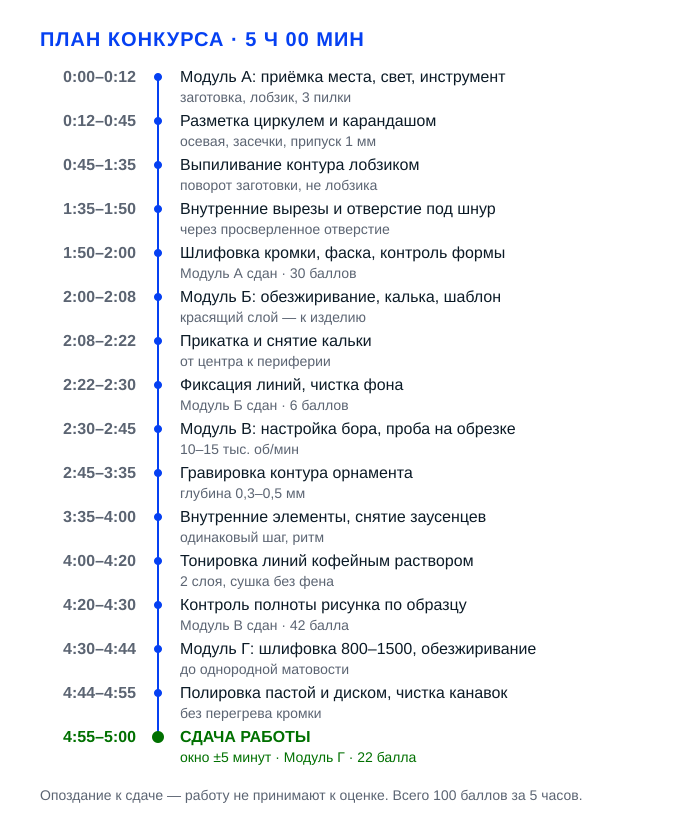
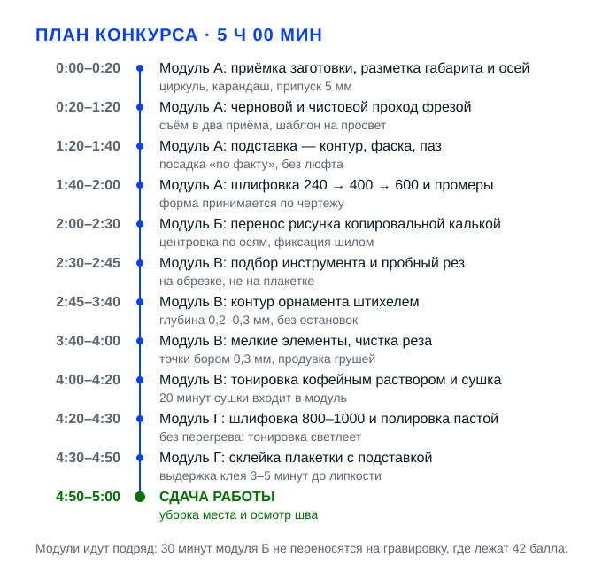
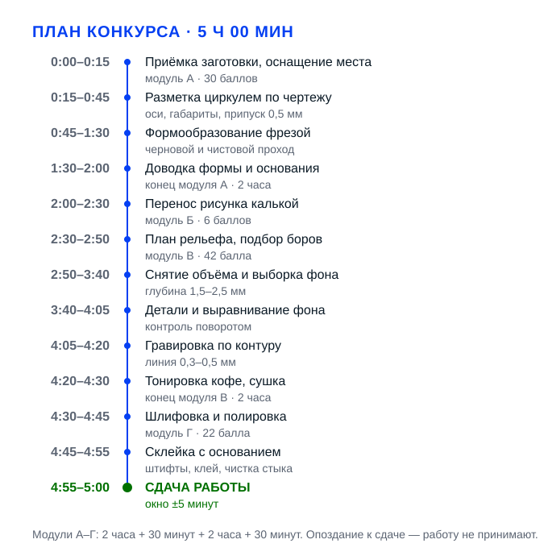

Косторезное дело (Р)
Задания ниже — официальные файлы «Абилимпикс» (источник: abilympics-russia.ru), разложенные по категориям. Решения написаны по тексту задания, регламенту и критериям оценки; в них указано, что именно проверяет эксперт.
Школьник
14–16 лет, базовый уровень заданияВыдержка из официального конкурсного задания: страницы, относящиеся к категории «Школьник» (стр. 4–7 источника).
Пошаговое решение
Задание для школьников — подвеска «Северный орнамент», декорированная гравировкой и тонировкой. Работа идёт строго по образцу и чертежу, в четыре модуля общей длительностью пять часов: два часа на выпиливание и шлифовку формы (30 баллов), тридцать минут на перенос орнамента копировальной калькой (6 баллов), два часа на гравировку с тонировкой кофейным раствором (42 балла) и последние тридцать минут на полировку (22 балла). Почти половина веса приходится на гравировку, а форма даёт меньше трети, поэтому выпиливать подвеску нужно точно и вовремя — время, сэкономленное в первом модуле, прямо конвертируется в проработку линий. Всё оборудование и материалы выдаёт площадка, проносить с собой ничего нельзя, поэтому первый шаг работы — принять и проверить то, что стоит на столе.

Задача 1. Выпилить и отшлифовать форму подвескиМодуль А · 30 баллов · 2 часа
Первый модуль — самый длинный и самый «производственный»: из пластины кости или рога нужно получить форму, точно повторяющую чертёж и внешний вид образца, а затем вывести кромку шлифовкой. Замеры здесь делаются циркулем и карандашом, а контур выпиливается ручным лобзиком, то есть результат зависит от аккуратности разметки и ровного хода пилки, а не от мощности инструмента. Тридцать баллов дают за форму, симметрию, чистоту кромки и размеры, поэтому экономить время на разметке бессмысленно: снятая на глаз лишняя доля миллиметра потом либо уходит в брак, либо отнимает минуты у гравировки.
Действие 1.1. Принять рабочее место и подготовить инструмент
Шаг 1.1.1
До старта обходим стол и сверяем то, что на нём стоит, с перечнем задания: заготовка кости или рога, ручной лобзик с набором пилок, надфили, шлифовальная шкурка двух-трёх номеров, циркуль, карандаш, копировальная калька, кофейный раствор, полировочная паста и полировочный диск. Пилки пересчитываем отдельно и просим вторую и третью сразу — полотно рвётся именно в середине контура, когда замена занимает время. Замеченную нехватку называем эксперту до старта, коротко и по делу: чего нет и сколько нужно.
Проносить на площадку ничего нельзя, всё оборудование и материалы выдаёт площадка, поэтому приёмка — единственный момент, когда недокомплект решается без потери конкурсного времени. После старта любая замена идёт только через эксперта, и он ещё должен счесть причину уважительной. Кроме того, порядок на столе и готовность инструмента входят в критерий организации работы, который эксперт фиксирует в первые минуты модуля А.
На столе лежит всё, что перечислено в задании, и ничего лишнего: заготовка, лобзик, три пилки, два надфиля, шкурка, циркуль, карандаш. Проверьте рукой сам лобзик — рамка не люфтит, барашек зажима целый, ручка сидит плотно. Если чего-то нет, вы уже стоите у эксперта, а не начинаете пилить.
Типичная ошибка — взять одну пилку и начать работу, отложив приёмку «на потом»: обрыв полотна на середине дуги оставляет рваный след, который потом выводится надфилем двадцать минут, и эти двадцать минут уходят из гравировки. Вторая ошибка — обнаружить нехватку после старта и просить замену, когда модуль уже пошёл: время не вернут.
Эксперт проходит по рабочим местам до старта и отмечает, разложен ли инструмент по зонам и готова ли заготовка; этот осмотр запоминается и влияет на оценку организации.
Шаг 1.1.2
Садимся так, чтобы лобзик работал вертикально без наклона корпуса: стул поднимаем или опускаем до высоты, при которой предплечье лежит на столе, а кисть с лобзиком находится чуть ниже уровня глаз. Свет ставим слева и немного спереди, если работаем правой рукой, и так, чтобы тень от кисти не падала на линию разметки. Лампу придвигаем к заготовке на 25–30 сантиметров: на мелком контуре рассеянный свет из общего зала не даёт увидеть карандашную линию.
Работа идёт по линии толщиной в полмиллиметра, и при плохом свете глаз перестаёт различать, где карандаш, а где край детали — пропил уходит в сторону, и форма теряет симметрию. Требования к освещению рабочего места на площадке заданы отдельно, не менее 300 люкс для участников с нарушением зрения, но и при нормальном зрении своя лампа рядом с заготовкой экономит нервы. Наклон корпуса лобзика опасен ещё и тем, что полотно начинает резать под углом, и кромка получается скошенной на всю толщину.
Тень от руки не пересекает линию разметки, лобзик в опущенной руке стоит строго вертикально, заготовка видна без напряжения. Посмотрите на своё рабочее место от двери: если источник света за спиной, вы будете работать в собственной тени.
Сесть «как удобно» у окна, спиной к свету: линия разметки читается хуже, пропил уводит, и на шлифовке приходится снимать лишний материал, теряя размер. Вторая ошибка — работать в наклоне над столом: через сорок минут начинает дрожать рука, и ровность хода пилки пропадает.
Эксперт смотрит на посадку и освещение в начале модуля, а дальше — на ровность кромки: она прямо показывает, работал ли участник с нормальным обзором.
Шаг 1.1.3
Раскладываем инструмент по зонам: лобзик и пилки справа от заготовки, надфили и шкурка слева, разметочный инструмент — перед собой, ближе к дальней кромке стола, чтобы за него не цеплялась рука. Боры и мелкие фрезы, если они выданы, ставим на специальную подставку, а лобзик в паузах кладём в выдвижной ящик или на отведённое место полотном от себя. Режущий инструмент никому не передаём из рук в руки: на площадке это прямо запрещено правилами, и сосед берёт своё.
Требования охраны труда для этой компетенции отдельно перечисляют, что относится к колющим и режущим приспособлениям: ножницы, боры, фрезы, ручной лобзик. Инструмент при работе должен лежать на своём месте, а по окончании работы боры и фрезы размещаются на подставке, лобзик убирается в выдвижной ящик — это не формальность, а условие допуска к работе под наблюдением экспертов.
Каждый инструмент лежит на своём месте и возвращается туда сразу после использования; полотно лобзика никуда не направлено. Проверьте свободную зону вокруг заготовки — локоть не должен задевать посторонние предметы при ходе пилки.
Свалить пилки, надфили и шкурку в общую кучу перед собой: при движении лобзика рука задевает надфиль, заготовка сдвигается, и линия разметки уходит из-под полотна. Вторая ошибка — оставить лобзик на столе полотном к себе: об этот угол режутся пальцы, а не материал.
Безопасность и организация — часть оцениваемых критериев, и эксперт фиксирует нарушения сразу, не дожидаясь конца модуля. Отдельно он смотрит, куда участник кладёт лобзик в паузах и не передаёт ли режущий инструмент соседу: это прямые пункты требований охраны труда.
Действие 1.2. Разметить контур подвески циркулем и карандашом
Шаг 1.2.1
Берём заготовку и осматриваем её со всех сторон при боковом свете: ищем трещины, сколы, потемнения и участки с рыхлой структурой. Лицевую сторону выбираем по плотности и однородности — она должна быть ровной, светлой, без пятен, потому что именно её увидит эксперт. Тыльную сторону отмечаем крестиком карандаша у кромки, чтобы больше её не путать, и дальше всю разметку ведём именно там, где будет изнанка изделия.
Кость и рог — материал с естественными дефектами, и трещина, попавшая в тонкую часть подвески, при выпиливании раскроется в скол, а при полировке станет тёмной полосой через всё изделие. Тридцать баллов модуля А дают за форму по чертежу и внешний вид образца, поэтому дефект на лицевой стороне — это прямой вычет, который невозможно исправить на последующих этапах. Отметка тыльной стороны экономит время в модуле Б, когда кальку нужно ставить строго по лицевой плоскости.
Дефектов на выбранной лицевой стороне нет: поверхность однородная, без трещин и тёмных включений. Проведите по ней ногтем поперёк — ноготь не должен цепляться за микротрещину. Крестик на изнанке поставлен и виден.
Разметить контур на стороне с трещиной, рассчитывая, что она «не дойдёт до края»: при выпиливании трещина раскрывается именно по линии пропила. Вторая ошибка — не отметить изнанку и потом переносить орнамент на ту сторону, где уже стоит разметка.
Эксперт осматривает заготовку вместе с участком работы и отмечает, была ли выбрана лицевая сторона осознанно — по тому, где осталась разметка и как выглядит лицо.
Шаг 1.2.2
Находим центр будущей подвески: проводим осевую линию по длине заготовки, откладываем на ней верхнюю и нижнюю точки по размерам чертежа и прокалываем их шилом или ножкой циркуля. От верхней точки циркулем откладываем радиусы всех дуг, указанных в чертеже, а нижнюю используем как базу для симметричных засечек. Все размеры берём с чертежа циркулем, а не на глаз и не линейкой: циркуль переносит размер без накопления погрешности.
В задании прямо сказано, что замеры при выполнении модуля производятся циркулем и карандашом, — это не пожелание, а способ получить симметрию. Осевая линия служит базой для всех построений: любая дуга, отложенная от неё в обе стороны одним раствором циркуля, автоматически даёт равные половины. Если строить контур от края заготовки, погрешность копится и к противоположной стороне форма становится заметно перекошенной.
Осевая линия проходит точно по центру заготовки, все засечки видны и наколоты, раствор циркуля не сбился. Проверьте базу: расстояние от осевой до верхней точки равно расстоянию до нижней в пределах половины миллиметра.
Вести разметку от края заготовки линейкой: край неровный после резки, и вся форма смещается на эту неровность. Вторая ошибка — сбить раствор циркуля и не заметить этого: половины подвески получаются разными, и на шлифовке это уже не исправить.
Измеримый критерий модуля А — соответствие размерам чертежа; эксперт проверяет разметку циркулем по осевой и сразу видит, от какой базы она строилась.
Шаг 1.2.3
Строим контур по засечкам: проводим дуги сопряжения, соединяем их плавными переходами и замыкаем контур. Затем зеркалим половину: откладываем от осевой те же радиусы в обратную сторону и проверяем, что левая и правая ветви совпали с точностью до толщины карандашной линии. Отдельно намечаем отверстие под шнур — его центр ставим на осевой, отступив от верхней кромки столько, сколько указано в чертеже, иначе перемычка получится тонкой и сломается.
Симметрия — первое, что видит эксперт, и одно из главных оснований для баллов модуля А: подвеска симметрична по построению, и любая асимметрия читается как ошибка разметки, даже если кромка выведена чисто. Отверстие под шнур размечается до выпиливания, потому что после выпиливания центр уже не к чему привязать, а перемычка тоньше двух-трёх миллиметров не держит нагрузку.
Левая и правая половины совпадают, контур замкнут, отверстие под шнур намечено на осевой. Приложите к разметке шаблон изделия: расхождение по контуру не должно превышать половину миллиметра, и оно должно быть одинаковым по всей длине.
Обводить шаблон «на глаз» и считать, что симметрия получится сама: на глаз разница в два-три миллиметра не видна, а на полированном изделии заметна сразу. Вторая ошибка — разметить отверстие под шнур после выпиливания, когда центр потерян.
Эксперт прикладывает шаблон и смотрит на просвет по обеим сторонам от осевой; совпадение половин — отдельный пункт оценивания. Проверку он делает до начала пиления, чтобы зафиксировать разметку, а не догадываться о ней по готовой кромке.
Шаг 1.2.4
Обводим контур мягким карандашом ТМ или М одной линией, без нажима, который оставляет борозду, и без повторных обводок «чтобы виднее» — от двойной линии глаз начинает вести пропил между ними. Внутри контура, отступив один миллиметр, проводим вторую, тонкую линию припуска: полотно лобзика снимает материал по обе стороны от себя, и если пилить строго по контуру, деталь выйдет меньше чертежа на толщину пропила. Линию припуска ведём только там, где кромка прямая или пологая.
Припуск в один миллиметр — это запас на доводку надфилем и шкуркой, без которого невозможно вывести кромку чисто: пиленый край всегда имеет сколы, и снимать их приходится до чистого материала. Тонкая одиночная линия нужна потому, что полотно должно идти рядом с ней, не перекрывая её: пока линия видна, есть контроль, а как только её съел пропил, ориентироваться становится не на что.
Контур обведён одной линией, припуск виден по всей длине, карандаш не продавил поверхность. Проведите пальцем по линии: борозды быть не должно, иначе при шлифовке в ней забьётся пыль и она проявится полосой.
Обвести контур шариковой ручкой или маркером: чернила впитываются в кость и остаются тёмным следом, который потом снимается только вместе с материалом. Вторая ошибка — пилить строго по контуру без припуска: деталь выходит за пределы допуска в минус.
Эксперт смотрит на характер разметки: одна линия плюс припуск читаются как понимание технологии, двойные жирные обводки — как спешка. Ещё он проверяет, чем сделана разметка: следы шариковой ручки или маркера на белой кости он отмечает как нарушение технологии.
Действие 1.3. Выпилить контур ручным лобзиком
Шаг 1.3.1
Закрепляем заготовку так, чтобы она не двигалась и при этом не была зажата насмерть: кладём её на подкладку из тонкой кожи, картона или мягкого пластика и фиксируем струбциной или в приспособлении площадки через эту прокладку. Подкладка нужна, чтобы губки не оставили вмятин и задиров на лицевой стороне, которые при полировке станут заметны. Выставляем заготовку так, чтобы очередной участок контура находился на расстоянии пяти-семи сантиметров от края стола — ближе неудобно вести лобзик, дальше рука тянется и теряет контроль.
Кость — материал скользкий и твёрдый: незакреплённая заготовка при первом же ходе пилки уезжает, полотно выскакивает из пропила и царапает лицевую сторону. Вмятины от губок и задиры входят в оценку внешнего вида изделия, а модуль А даёт 30 баллов именно за форму и её качество. Правильное расстояние до края стола — вопрос устойчивости: рука опирается на стол, а не висит в воздухе.
Заготовка не сдвигается при нажатии ладонью, на лицевой стороне нет следов губок, край стола не мешает ходу лобзика. Покачайте заготовку рукой: люфта быть не должно, но и следов сжатия на поверхности тоже.
Зажать заготовку металлическими губками без прокладки: после снятия остаются тёмные вмятины, которые убираются только шлифовкой на глубину вмятины, и форма уходит из размера. Вторая ошибка — работать, придерживая заготовку рукой: полотно рвёт материал рывками, кромка получается рваной.
Эксперт обращает внимание на способ фиксации: он показывает, думает ли участник о сохранности лицевой поверхности. Зажатую без прокладки заготовку он осматривает потом на предмет вмятин — они остаются на изделии и видны после полировки.
Шаг 1.3.2
Заправляем пилку в лобзик: полотно ставим зубьями к ручке, то есть так, чтобы при ходе вниз зубья резали материал, и зажимаем оба конца барашками. Натяжение проверяем щелчком ногтя — полотно должно звенеть и не прогибаться от бокового нажатия пальцем. Для кости берём пилку с мелким зубом, чтобы пропил был узким, а кромка — менее рваной. Если полотно стоит криво, отпускаем барашек и переставляем, а не выправляем натяжением.
Слабо натянутое полотно уводит в сторону при боковой нагрузке: пропил на выходе получается косым, и его приходится выводить надфилем, снимая лишний материал. Неправильное направление зубьев даёт не рез, а скобление: материал не снимается, а рвётся, и кромка выходит с задирами. Мелкий зуб на кости — это чистая кромка, которая потом шлифуется в два раза быстрее.
Полотно звенит при щелчке, не прогибается, зубья смотрят вниз к ручке, оба барашка затянуты. Проведите пальцем вдоль полотна — оно должно быть ровным, без волны и без заусенцев на краях.
Работать перевёрнутым полотном: лобзик скользит по материалу, участник давит сильнее, и в какой-то момент полотно ломается. Вторая ошибка — перетянуть барашек так, что полотно лопается у зажима ещё до первого пропила.
Правильная заправка инструмента входит в требования по охране труда: работать разрешено только исправным инструментом, и эксперт это проверяет. Он отдельно смотрит на направление зубьев: перевёрнутое полотно выдаёт себя рваной кромкой и рывками при пилении.
Шаг 1.3.3
Начинаем пропил с края заготовки, у самой линии, и ведём полотно вдоль неё, оставляя припуск нетронутым: лобзик держим вертикально, ход делаем ровный, примерно шестьдесят двойных ходов в минуту, без нажима вперёд. Поворачиваем не лобзик, а заготовку — тогда полотно остаётся в одной плоскости, и пропил не уходит в сторону. На поворотах контура сначала проходим дугу медленно, короткими ходами, и только потом выходим на прямой участок.
Пропил, сделанный с боковым усилием, уводит полотно в сторону от линии, и деталь теряет симметрию — а симметрия и соответствие чертежу это основные измеримые критерии модуля А на 30 баллов. Поворот заготовки вместо поворота лобзика — приём, который держит полотно вертикально: наклонный лобзик режет кромку под углом, и на выходе из материала получается скол. Ровный темп без нажима нужен потому, что кость не прощает спешки: чем сильнее давишь, тем больше уводит.
Полотно идёт точно по линии припуска, кромка не имеет сколов на выходе, пропил перпендикулярен плоскости. Проверьте на просвет: линия контура должна быть видна по всей длине, деталь не вышла за неё нигде.
Давить на лобзик, чтобы «шло быстрее»: полотно уводит на два-три миллиметра, и исправить это можно только уменьшением детали. Вторая ошибка — выкручивать лобзик на повороте: полотно ломается или режет кромку под углом.
Эксперт проходит по площадке во время пиления и смотрит на вертикальность полотна и ровность темпа — по ним видно квалификацию. Спешка с сильным нажимом для него сигнал, что участник рискует увести контур и потерять симметрию.
Шаг 1.3.4
Внутренние вырезы, если они есть в чертеже, делаем так: в отходе внутри контура просверливаем или прокалываем отверстие диаметром чуть больше полотна, откручиваем один барашек, заводим полотно в это отверстие и зажимаем снова. Выпиливаем по внутренней линии, обходя её по кругу короткими ходами, и выводим полотно тем же способом. Отверстие под шнур сверлим сверлом по кости на малых оборотах, с подкладкой под заготовку, чтобы на выходе не откололся край.
Заводить полотно в материал иначе, чем через просверленное отверстие, нельзя: прокол шилом в кости даёт трещину, которая при полировке раскрывается и идёт по всей детали. Отверстие под шнур — самое тонкое место подвески, и скол на выходе сверла там означает либо брак, либо уменьшение детали. Подкладка под заготовку при сверлении обязательна: без неё сверло на выходе выламывает кусок материала.
Внутренние вырезы повторяют чертёж, отверстие под шнур круглое, без скола на выходе. Проверьте кромку отверстия ногтем — заусенцев быть не должно, а перемычка до края изделия должна остаться не тоньше, чем на чертеже.
Проткнуть отверстие шилом и завести туда полотно: кость трескается по направлению прокола, и трещина выходит на лицевую сторону. Вторая ошибка — сверлить без подкладки и получить скол на выходе сверла.
Эксперт осматривает внутренние вырезы и отверстие под шнур отдельно: это самые заметные глазу места подвески. Тонкую перемычку у отверстия он проверяет на прочность и отмечает, если она сделана тоньше, чем на чертеже.
Действие 1.4. Довести кромку и отшлифовать форму
Шаг 1.4.1
Снимаем заготовку с фиксации и опиливаем кромку плоским или полукруглым надфилем до линии контура, двигая инструмент вдоль кромки под небольшим углом, а не поперёк неё. Работаем короткими движениями по десять-пятнадцать сантиметров, периодически поворачивая деталь, чтобы видеть кромку с обеих сторон. Сколы и задиры от пилки снимаем в первую очередь, не переходя на соседний участок, пока этот не выведен.
Надфиль убирает то, что не смогла убрать пилка, и делает кромку ровной по всей длине — это первая ступень того качества кромки, которое оценивается в критерии формы. Движение вдоль кромки, а не поперёк, не даёт надфилю «нырять» в материал и оставлять поперечные запилы, которые потом выходят на полировке тёмными полосами. Последовательная работа по участкам сохраняет контроль над контуром: перескакивая, легко снять лишнее в одном месте и недобрать в другом.
Кромка ровная, без рваных сколов, линия контура просматривается по всей длине, запилы идут вдоль, а не поперёк. Проведите по кромке пальцем в тонкой перчатке: заусенцев и ступенек быть не должно.
Опиливать кромку поперёк, «срезая» сразу большой участок: надфиль оставляет поперечные риски, которые потом видны на полировке. Вторая ошибка — снять надфилем больше, чем припуск: деталь уходит в минус по размеру, и вернуть её нельзя.
Эксперт смотрит кромку на просвет и под углом: ровность линии и отсутствие поперечных запилов — признаки аккуратной доводки. Поперечные риски он отмечает отдельно, потому что после полировки они проявляются тёмными полосами по кромке.
Шаг 1.4.2
Берём шкурку среднего номера, наклеиваем или наматываем её на деревянный брусок так, чтобы она не провисала, и шлифуем кромку движениями вдоль неё, с равным нажимом. Плоскость самой подвески пока не трогаем или проходим самой мягкой шкуркой без нажима — задача этого шага вывести кромку, а не отполировать лицо. Меняем шкурку, как только она засалилась: забитая костяной пылью шкурка не режет, а греет и заглаживает.
Шкурка на жёстком бруске снимает материал ровно и не заваливает кромку, тогда как шкурка в пальцах повторяет форму руки и скругляет ребро неравномерно. Шлифовка вдоль кромки продолжает логику надфиля: риски остаются продольными и при полировке уходят полностью. Засаленная шкурка — отдельная ловушка: она перестаёт снимать материал, участник давит сильнее, кромка нагревается и начинает «плыть».
Кромка матовая, ровная, продольные риски равномерные, ребро не скруглено больше, чем задумано. Проверьте ногтем: он должен скользить по кромке, не цепляясь, и не должно быть мест, где шкурка не дошла.
Шлифовать кромку шкуркой, зажатой в пальцах: ребро скругляется волной, и на полировке эта волна начинает блестеть неровно. Вторая ошибка — работать засаленной шкуркой и давить, пока кромка не нагреется.
Эксперт оценивает качество шлифовки визуально и на ощупь; равномерность матовой поверхности кромки — прямой признак работы. Он проводит по кромке пальцем в перчатке: ступеньки и волна читаются сразу, ещё до полировки.
Шаг 1.4.3
Переходим на мелкую шкурку и проходим кромку ещё раз, снимая риски от предыдущего номера, затем снимаем фаску на ребре шириной около половины миллиметра — скругляем переход от плоскости к кромке. Фаску ведём по всему контуру одним движением, не отрывая брусок на поворотах, и следим, чтобы она была одинаковой ширины с лицевой и с тыльной стороны. Торцы и острые внутренние углы проходим отдельно, сложив шкурку в несколько раз.
Фаска снимает самую уязвимую часть изделия: острым ребром подвеска цепляется за одежду и шнур, а при носке скалывается. В критерии внешнего вида фаска читается как аккуратность: острые необработанные рёбра сразу выдают недоведённую работу. Одинаковая ширина фаски с двух сторон — признак того, что деталь обрабатывалась симметрично, а не «с одной стороны побыстрее».
Фаска ровная по всей длине, одинаковой ширины, переход плавный. Проверьте деталь на просвет с двух сторон: линия фаски должна читаться как одна непрерывная полоса, без ступенек и утолщений.
Снять фаску только с лицевой стороны: с изнанки остаётся острое ребро, и изделие выглядит недоделанным с обратной стороны, которую эксперт тоже осматривает. Вторая ошибка — снять фаску слишком широко и «съесть» контур.
Эксперт переворачивает изделие и смотрит изнанку: обработка кромки с обеих сторон входит в оценку качества формы. Ширину фаски он сравнивает с лицевой стороной — разница в полмиллиметра уже читается как небрежность.
Шаг 1.4.4
Проверяем готовую форму по трём параметрам: прикладываем шаблон и чертёж, измеряем циркулем основные размеры и складываем деталь пополам по осевой, чтобы увидеть симметрию. Смотрим на просвет вдоль кромки — она должна быть ровной без волны. Если на каком-то участке обнаружен перекос, снимаем его надфилем сейчас, пока деталь ещё в модуле А, а не после тонировки, когда любая правка испортит рисунок.
Модуль А заканчивается сдачей готовой формы, и дальше её размеры уже не меняются: перенос орнамента и гравировка делаются по тому, что получилось. Симметрия, соответствие чертежу и ровность кромки — это те самые измеримые показатели, из которых складываются 30 баллов модуля. Проверка сейчас стоит две минуты, а обнаруженный в модуле Г перекос исправить нельзя вообще.
Форма совпадает с шаблоном, размеры в пределах полумиллиметра, половины симметричны, кромка ровная. Сфотографируйте деталь на фоне стола, если разрешено, или просто отложите её на чистую салфетку и посмотрите на расстоянии вытянутой руки — так видны перекосы, которых не видно вблизи.
Пропустить контроль и сразу перейти к кальке: перекос, замеченный в модуле Б, уже не убрать без сдвига рисунка. Вторая ошибка — «поправить» форму напильником на глаз, не сверяясь с шаблоном, и уйти из размера в другую сторону.
Эксперт проверяет форму шаблоном и циркулем именно на границе модулей А и Б: это точка фиксации результата первого модуля. Расхождение по контуру он измеряет в самом широком месте, потому что там ошибка разметки видна лучше всего.
Задача 2. Перенести орнамент копировальной калькойМодуль Б · 6 баллов · 30 минут
Второй модуль короткий и стоит всего 6 баллов, но именно он определяет, что дальше пойдёт под резец: если линии перенесены криво, смазаны или с пропусками, гравировка на 42 балла будет повторять эти ошибки. Способ переноса задан жёстко — копирование при помощи копировальной кальки с шаблона, согласно чертежу изделия, поэтому подрисовывать от руки или наносить рисунок заново не нужно и нельзя. Тридцать минут нужно распределить так, чтобы основное время ушло на точное позиционирование и прикатку, а не на исправления: сдвинутая калька — это не ошибка переноса, а потерянная композиция.
Действие 2.1. Подготовить поверхность и кальку
Шаг 2.1.1
Сдуваем с формы костяную пыль и протираем лицевую плоскость мягкой тканью, затем обезжириваем её ватным диском, смоченным спиртом, и даём высохнуть в течение минуты. Пыль после шлифовки остаётся в микронеровностях и в канавках разметки, и красящий слой кальки ложится поверх неё, а не на материал — линии получаются бледными и прерывистыми. Обезжиривание нужно потому, что кость после работы рук держит тонкую жировую плёнку, к которой красящий слой не прилипает.
Качество переноса прямо влияет на гравировку: по бледной прерывистой линии резец идёт с отклонениями, и орнамент теряет чёткость — а именно чёткость линий рисунка оценивается в модуле В на 42 балла. Модуль Б даёт всего 6 баллов, но его дефекты переносятся в самый дорогой модуль. Минута на обезжиривание — самая выгодная инвестиция времени на всём конкурсе.
Поверхность сухая, чистая, без пыли в канавках. Проведите по ней ватным диском: он должен остаться белым. Посмотрите на плоскость под углом к свету — пыль видна как мелкая серая сыпь.
Начать перенос по пыльной поверхности: линии получаются рваными, участник поддавливает кальку сильнее, и она сминается. Вторая ошибка — обезжирить и сразу начать, не дав спирту высохнуть: калька прилипает и рвётся.
Эксперт смотрит на подготовку поверхности перед переносом и на то, не осталось ли на изделии следов пыли к моменту гравировки. Пыль в канавках перед тонировкой он считает грубой ошибкой: краска ложится на неё и после сушки осыпается пятнами.
Шаг 2.1.2
Разворачиваем копировальную кальку и определяем, с какой стороны у неё красящий слой: у переводной кальки он нанесён на одну из сторон, и её легко найти, проведя ногтем по краю — краска остаётся на подушечке пальца. Сторону с красящим слоем кладём к изделию, матовую — к шаблону. Кальку вырезаем с запасом в полтора-два сантиметра с каждой стороны, чтобы она не сползала при прикатке и не тянула край рисунка.
Если положить кальку не той стороной, рисунок не перенесётся вообще, а участник теряет пять-семь минут на выяснение причины — при тридцати минутах модуля это существенная часть времени. Запас по краям нужен, чтобы кальку можно было прижать и прикатать, не задев сам рисунок: тонкая калька без запаса сминается под рукой, и линии смазываются.
Красящий слой смотрит на изделие, матовая сторона — вверх, запас по краям полтора-два сантиметра. Проверьте пальцем: на подушечке после касания края остаётся след краски — значит, сторона определена верно.
Перепутать стороны кальки и прикатывать её красящим слоем вверх: рисунок остаётся на шаблоне, а не на изделии. Вторая ошибка — вырезать кальку точно по контуру: её невозможно придержать, и она сдвигается в процессе.
Эксперт наблюдает, как участник обращается с калькой: понимание того, где красящий слой, видно сразу. Отдельно он отмечает, вырезана ли калька с запасом по краям, потому что сдвиг кальки во время прикатки — самая частая причина смещённого орнамента.
Шаг 2.1.3
Кладём шаблон с орнаментом на изделие и совмещаем его с осевой линией подвески — осевая должна пройти через центр композиции, как на чертеже. Проверяем, что рисунок целиком укладывается в поле подвески с одинаковыми отступами от кромки, и только после этого фиксируем шаблон и кальку малярным скотчем с двух противоположных сторон. Скотч наклеиваем на запас кальки, не на рисунок, и прижимаем плотно, чтобы конструкция не сдвинулась ни на миллиметр.
Позиционирование по осевой — это и есть требование «согласно чертежу изделия»: орнамент должен стоять так, как он нарисован, а не так, как удобно. Равные отступы от кромки — признак правильной посадки рисунка, и эксперт видит это без измерений. Фиксация скотчем с двух сторон обязательна: калька, прижатая одной рукой, при прикатке обязательно провернётся, и весь рисунок «поедет» по дуге.
Осевая шаблона совпадает с осевой подвески, отступы от кромки одинаковые, скотч держит конструкцию. Прижмите кальку пальцем и отпустите — она не должна возвращаться на место с щелчком, то есть не должна быть натянута.
Приложить шаблон «на глаз», без осевой: половина орнамента окажется ближе к кромке, и композиция будет читаться перекошенной. Вторая ошибка — фиксировать только с одной стороны: калька проворачивается вокруг точки крепления.
Соответствие перенесённого изображения чертежу — отдельный пункт модуля Б; эксперт сверяет положение орнамента по осевой. Он измеряет отступы от кромки с двух сторон и отмечает перекос, даже если рисунок перенесён чисто.
Действие 2.2. Прикатать и снять рисунок
Шаг 2.2.1
Прикатываем кальку от центра композиции к периферии, а не наоборот: сначала проходим центральный элемент, затем соседние, и только потом края. Инструмент — шариковая ручка без пасты, костяная гладилка или обратная сторона штихеля: проводим по всем линиям рисунка с равным нажимом, по одному разу в каждую сторону. Нажим должен быть таким, чтобы под инструментом чувствовался материал, но калька не продавливалась до разрыва.
Прикатка от центра нужна для того, чтобы возможное микросмещение кальки уходило на периферию композиции, где ошибка меньше заметна, а не наоборот — при движении от края к центру ошибки сходятся в самом заметном месте орнамента. Равный нажим по всем линиям даёт одинаковую плотность краски: разные линии получаются разной яркости, и при гравировке участник невольно ведёт резец по-разному. Двойной проход в обе стороны страхует от пропусков на шероховатой поверхности.
Все линии рисунка видны на кальке как продавленные бороздки, пропусков нет. Проведите пальцем по кальке: под ней должна чувствоваться каждая линия орнамента, включая мелкие элементы.
Прикатывать одной рукой, держа кальку другой: калька натягивается и сдвигается на один-два миллиметра, а вместе с ней уезжает весь рисунок. Вторая ошибка — давить изо всех сил: калька рвётся по линии, и часть рисунка теряется.
Эксперт смотрит на характер прикатки: равномерность пропечатки линий говорит о владении методом копирования. Ему видно и направление движения инструмента — прикатка от центра к периферии фиксируется как правильный приём.
Шаг 2.2.2
Снимаем кальку, начиная с одного закреплённого края: отклеиваем скотч, приподнимаем кальку за угол и отводим её в сторону одним движением, не проводя по поверхности. Шаблон убираем отдельно, чтобы он не сдвинул ещё не закреплённую краску. Дальше изделие берём только за торцы, а не за лицевую плоскость: свежая переводная краска легко стирается пальцем.
Резкое снятие кальки или протягивание её по поверхности смазывает линии — краска переводного слоя не впитывается мгновенно, она лежит тонким слоем и размазывается от любого касания. Правильное снятие за один приём сохраняет чёткость контура, а чёткость контура — это то, по чему потом пойдёт резец. Привычка брать изделие за торцы экономит от случайных отпечатков на самом видном месте.
Калька снята без мазков, линии на изделии чёткие и непрерывные. Посмотрите на рисунок под углом к свету: если краска где-то смазана, это видно как серое пятно вдоль линии.
Стянуть кальку за угол, проведя ею по изделию: часть линий размазывается, и восстановить их можно только повторным переносом, а на это уже нет времени. Вторая ошибка — сразу взять изделие за лицевую плоскость.
Качество перенесённого изображения оценивается визуально: смазанные линии — прямой вычет из баллов модуля Б. Эксперт смотрит на изделие под углом к свету, где размазанная краска читается как серое пятно вдоль линии, а не как ровный контур.
Шаг 2.2.3
Проверяем полноту переноса, накладывая шаблон обратно по осевой и сверяя элементы по количеству и положению. Все линии должны быть на месте: и контурные, и мелкие внутренние. Если какая-то линия не пропечаталась, переносим её повторно, приложив кусочек кальки только к этому месту, — но не подрисовываем от руки, потому что рисунок, нарисованный заново, не совпадёт с чертежом.
Модуль Б оценивается именно за соответствие перенесённого изображения чертежу, и пропущенный элемент — это не «мелочь», а расхождение с заданием. Повторный локальный перенос через кальку сохраняет верность линий, тогда как подрисовка от руки неизбежно даёт отклонение, а на симметричном орнаменте оно видно сразу. Проверка по шаблону занимает две минуты и закрывает весь модуль.
Количество элементов совпадает с чертежом, положение каждого — на своём месте, линий не больше и не меньше. Наложите шаблон и посмотрите на просвет: линии должны совпадать по всей длине.
Подрисовать недостающую линию от руки «примерно там же»: на симметричном орнаменте подрисовка сразу выдаёт себя, и гравировка пойдёт по неверной линии. Вторая ошибка — не проверять перенос вовсе и обнаружить пропуск уже под резцом.
Эксперт сверяет перенесённый рисунок с чертежом в конце модуля Б — это основной пункт его оценки. Он считает элементы и смотрит на положение каждого по осевой, поэтому пропуск или подрисовка от руки обнаруживаются сразу.
Действие 2.3. Закрепить и защитить линии
Шаг 2.3.1
Проходим все перенесённые линии тонким шилом или тонким бором на минимальных оборотах, ставя неглубокую, на два-три десятых миллиметра, канавку по краске. Инструмент ведём от себя, короткими отрезками по пять-семь миллиметров, соединяя их без разрывов. Это не гравировка, а фиксация: задача — не дать краске стереться до того, как начнётся модуль В.
Переводная краска держится на поверхности механически и стирается от любого касания, а между модулями изделие ещё нужно перенести, перевернуть, показать эксперту. Процарапанная канавка сохраняет линию даже после того, как краска сойдёт, и в модуле В участник ведёт резец по уже намеченному следу, а не по памяти. Такая фиксация не считается гравировкой и не отнимает баллы: она технологически необходима.
Линии переведены в неглубокие канавки, краска сохранилась вдоль них, разрывов нет. Проведите ногтем поперёк линии: ноготь должен чувствовать канавку, но она не должна быть глубокой настолько, чтобы мешать дальнейшей работе.
Процарапывать линии глубоко, «сразу гравируя»: канавка получается неровной, и в модуле В её приходится расширять, теряя глубину и точность. Вторая ошибка — не фиксировать вовсе и стереть половину рисунка при переносе изделия.
Эксперт видит, закреплены ли линии, по состоянию рисунка в начале модуля В: стёртая краска без канавки читается как небрежность. Он проверяет, нет ли на изделии отпечатков пальцев, — они показывают, как участник обращался с деталью между модулями.
Шаг 2.3.2
Убираем с плоскости случайные точки краски, попавшие вне рисунка, мягким ластиком или ватной палочкой, слегка смоченной спиртом, работая только по пятну и не задевая линии орнамента. Точки от красящего слоя кальки появляются там, где калька прижималась ногтем или где её край соприкасался с материалом, и на белой кости они выглядят как грязь.
Случайные точки краски, оставленные до полировки, частично уходят при шлифовке, но часть впитывается в поверхностный слой и остаётся серыми пятнами — а чистота фона входит в оценку внешнего вида изделия. Работа только по пятну нужна потому, что спирт растворяет и линии рисунка, и неосторожное движение смазывает сразу целый участок орнамента. Ластик в этом смысле мягче и безопаснее для тонких линий.
Фон чистый, лишних точек нет, линии орнамента целы. Посмотрите на изделие под углом к свету и на просвет — пятна краски читаются как серые разводы.
Тереть спиртом всю плоскость «для чистоты»: линии рисунка расплываются, и перенос приходится делать заново. Вторая ошибка — оставить точки, рассчитывая, что «полировка уберёт».
Чистота фона — часть оценки внешнего вида: эксперт осматривает изделие целиком, а не только линии орнамента. Случайные точки краски он видит при косом свете и отмечает отдельно, потому что после полировки они уже не убираются.
Шаг 2.3.3
Закрываем готовый перенос от случайных касаний: накрываем изделие чистым листом бумаги или салфеткой и убираем со стола кальку, шаблон и скотч. Перед тем как перейти к гравировке, ещё раз сверяем положение орнамента по осевой и запоминаем, с какого элемента начнём: обычно это самый длинный контур, который задаёт всю композицию.
Изделие после переноса — самый уязвимый предмет на столе: любое касание рукой, инструментом или стружкой портит линии, а восстановить их в модуле В уже некогда. Порядок на столе нужен и с точки зрения безопасности: калька и скотч на рабочей плоскости мешают ходу бора. Осознанный выбор первого элемента экономит время самого дорогого модуля, где каждая минута стоит баллов.
Изделие накрыто, стол свободен от кальки и шаблона, орнамент сверен по осевой. Проверьте, что под салфеткой ничего не давит на лицевую плоскость — ни крошка, ни край инструмента.
Оставить изделие открытым среди инструмента и стружки: к началу гравировки на линиях уже будут царапины и пыль, вдавленная в краску. Вторая ошибка — начать гравировку с мелкого элемента, потеряв общую композицию.
Эксперт фиксирует результат модуля Б на границе этапов: целостность рисунка и аккуратность обращения с изделием. Ему важно, накрыта ли деталь в паузах, — по этому видно, насколько участник понимает, что дальше рисунок уже не восстановить.
Задача 3. Выполнить гравировку и тонировкуМодуль В · 42 балла · 2 часа
Самый дорогой модуль конкурса: 42 балла из 100 и два часа времени. Нужно пройти резцом все линии перенесённого орнамента, выдержать одинаковую глубину и ширину канавки, а затем затонировать линии кофейным раствором так, чтобы рисунок читался контрастно, а фон остался чистым. Баллы дают за точность ведения линии по рисунку, за равномерность гравировки, за аккуратность тонировки и за сохранность фона, поэтому темп важнее скорости: лучше пройти меньше линий, но чисто. Второй по важности навык модуля — вовремя остановиться и не «улучшать» готовый участок.
Действие 3.1. Настроить гравировальный участок
Шаг 3.1.1
Перед стартом модуля проверяем бор-машину: включаем на минимальных оборотах и слушаем — гул должен быть ровным, без стука и визга. Берём цангу под диаметр хвостовика бора и зажимаем её так, чтобы бор сидел без люфта: покачайте его пальцем, он не должен шевелиться в патроне. Проверяем биение — включаем машину с бором и смотрим на кончик сбоку: кончик должен стоять точкой, а не описывать круг.
Люфт бора в цанге и биение дают канавку с рваными краями и сколами по кромке: на кости это видно сразу, а исправить такой след нельзя — только расширять линию. Правильно подобранная цанга держит инструмент без перекосов, и резец идёт точно по намеченной линии, что и оценивается в модуле В. Проверка занимает минуту, а сломанный или болтающийся бор обходится в часы переделки.
Бор не шевелится в патроне, кончик при вращении стоит на месте, гул ровный. Проверьте на просвет между пальцами: зажатый бор не должен проворачиваться от лёгкого усилия рукой.
Зажать бор, не подобрав цангу, и работать с люфтом: канавка получается рваной, и на тонировке эти рваные края станут ещё заметнее — краска затекает в сколы. Вторая ошибка — включить машину на полных оборотах с длинным бором: бор гнётся и вибрирует.
Эксперт проверяет исправность инструмента перед работой с электрическим оборудованием — это требование охраны труда, а не только качества. Он слушает машину вместе с участником: стук в патроне означает, что бор не зажат, и работать с ним не разрешают.
Шаг 3.1.2
Пробуем инструмент на обрезке той же кости, что и изделие: ставим бор под углом около сорока пяти градусов к поверхности и ведём короткую линию в десять миллиметров. Обороты — в пределах десяти-пятнадцати тысяч, подача лёгкая, без нажима: бор должен снимать стружку, а не пылить и не подпрыгивать. По пробной линии смотрим, какая получается глубина при таком нажиме, и запоминаем это усилие рукой.
Кость и рог имеют разную плотность на разных участках, и настройка «на глаз» приводит к тому, что на плотном участке линия не прорезается, а на рыхлом бор проваливается и уходит в глубину. Пробная линия на обрезке калибрует руку: участник приходит к первому элементу орнамента с готовым ощущением усилия. Равномерность глубины — отдельный критерий гравировки, и она закладывается именно здесь, до первой линии рисунка.
Пробная канавка ровная по глубине, края чистые, без скола. Проведите по ней ногтем: глубина должна быть ощутимой, но не больше, чем нужно под тонировку, иначе краска проваливается в глубину и фон вокруг загрязняется.
Начать сразу с орнамента, минуя пробу: первые две-три линии всегда выходят неравномерными по глубине, и в симметричном рисунке эта разница видна. Вторая ошибка — работать на максимальных оборотах, от которых кость подгорает и появляется запах и потемнение.
Эксперт смотрит, делает ли участник пробный проход: это признак осознанной работы с материалом. По пробной канавке он видит, подобраны ли обороты под плотность конкретной заготовки, и такие участники реже уходят в брак на первом элементе.
Шаг 3.1.3
Надеваем защитные очки, убираем волосы, при необходимости работаем в респираторе: костяная пыль от бора мелкая и летит в сторону лица. Включаем местную вытяжку или ставим машину так, чтобы пыль уходила от изделия, а не на него. Бор в нерабочих паузах кладём на подставку для боров, а не на стол и не в карман фартука.
Пыль кости при гравировке — основной вредный фактор этой работы, и правила охраны труда требуют использования средств индивидуальной защиты и содержания рабочего места в чистоте. Пыль, осевшая на изделии, забивается в канавки и мешает тонировке: краска ложится на пыль, а не на материал, и после сушки осыпается неровными пятнами. Боры на подставке — прямое требование по окончании и во время работы с колющими и режущими приспособлениями.
Очки на месте, волосы убраны, пыль уходит в сторону от изделия. Проверьте поверхность изделия перед гравировкой: она должна быть чистой, без серого налёта от пробного прохода.
Работать без очков «потому что мешают»: стружка кости летит в глаз, и работа прекращается по медицинским причинам. Вторая ошибка — оставить бор на столе: он скатывается, а при включении машины с незажатым бором инструмент вылетает.
Соблюдение требований безопасности при работе с электрическим инструментом фиксируется экспертом отдельно, в его присутствии она и выполняется. Отсутствие очков или бор, оставленный на столе, он останавливает сразу, не дожидаясь конца модуля.
Действие 3.2. Пройти контур орнамента
Шаг 3.2.1
Начинаем с самого длинного элемента композиции — обычно это внешний контур мотива: он задаёт направление и плотность всей гравировки. Ведём бор от себя, правой рукой контролируя направление, а левой поворачивая изделие: изделие движется под инструментом, резец идёт по линии. Первые два-три миллиметра проходим медленно, чтобы «поймать» линию, дальше — ровным темпом, не отрывая бор от канавки на поворотах.
Порядок «от большого к малому» не случаен: длинные линии задают композиционный каркас, и мелкие элементы потом встают в него без смещений. Ведение бора от себя позволяет видеть канавку впереди резца, тогда как при работе «на себя» линия уходит под руку. Поворот изделия вместо разворота кисти сохраняет одинаковый угол наклона бора, а значит, и постоянное сечение канавки — равномерность гравировки входит в 42 балла модуля.
Канавка идёт точно по линии, на поворотах не спрямляется, края чистые. Посмотрите на элемент под углом к свету: если канавка где-то расширяется или мельчает, это видно как перепад блеска.
Вести бор «на себя», разворачивая кисть: на поворотах кисть заваливается, угол наклона меняется, и канавка на выходе из поворота становится глубже. Вторая ошибка — начать с мелкого элемента и потом подгонять под него контур.
Эксперт обходит площадку во время гравировки и смотрит на посадку рук и на то, поворачивает ли участник изделие. Работа «кистью вокруг детали» сразу выдаёт недостаток навыка: на поворотах у такого участника меняется угол наклона бора.
Шаг 3.2.2
Держим сечение канавки постоянным: глубина три-пять десятых миллиметра, ширина пять-восемь десятых, профиль — плавная канавка с округлым дном. На твёрдых участках кости увеличиваем не нажим, а число проходов: сначала тонкая линия, затем расширение до нужной ширины за один-два прохода. Контролируем сечение не на глаз, а поворачивая изделие к свету лампы: тень внутри канавки показывает её профиль и полноту.
Равномерность глубины и ширины — главный измеримый признак качества гравировки: разнокалиберные канавки читаются как небрежность, даже когда рисунок точен. Расширение за несколько проходов вместо одного глубокого — приём, который не даёт скола на кромке: кость хрупкая, и толстый бор, снявший сразу много, выкалывает край. Контроль по тени надёжнее, чем осмотр сверху: сверху глубина почти не читается.
Глубина одинаковая по всей длине элемента, ширина тоже, сколов по краям нет. Проведите по канавке тонкой деревянной палочкой: она должна идти ровно, без провалов и бугорков на дне.
Давить на бор, чтобы углубить линию на плотном участке: бор вырывает кусок материала, и в канавке остаётся раковина, которую невозможно замаскировать. Вторая ошибка — проходить линию одним проходом на полную глубину.
Именно по равномерности канавки эксперт судит о владении резцом, и это самая весомая часть оценки модуля В. Он смотрит гравировку под углом к свету, где перепад глубины виден как чередование блестящих и матовых участков.
Шаг 3.2.3
Проходим сопряжения и стыки: в местах, где линии встречаются, не «перерезаем» одну линию другой, а доводим их до точки встречи с одинаковой глубиной. Работаем в стыке тонким бором, короткими движениями от себя, по одному заходу с каждой стороны. Точку стыка проверяем под лупой — в орнаменте такие места самые заметные, потому что глаз сам ищет узлы композиции.
Перерезанная линия в узле орнамента смотрится как разрыв рисунка: на тонировке в этот разрыв затекает краска, и узел превращается в тёмное пятно вместо аккуратного пересечения. Доведение до точки встречи сохраняет читаемость мотива, а читаемость линий рисунка — прямой критерий модуля на 42 балла. Лупа нужна потому, что узлы мелкие и на глаз дефект в них не виден до тонировки, когда исправлять уже поздно.
В узлах линии сходятся, не перерезая друг друга, глубина в точке встречи такая же, как на подходах. Посмотрите на узел через лупу: не должно быть ступеньки или провала.
Провести одну линию «насквозь» и потом приставить к ней вторую: в узле получается провал, а конец второй линии висит в воздухе. Вторая ошибка — не проверять узлы до тонировки.
Эксперт осматривает узлы орнамента с лупой — это точки, по которым проще всего оценить квалификацию резчика. Перерезанную линию он отмечает как дефект композиции, потому что после тонировки она превращается в тёмное пятно.
Шаг 3.2.4
Проходим весь контур орнамента целиком, элемент за элементом, и после каждого крупного фрагмента останавливаемся и осматриваем его при боковом свете. На контроль уходит по тридцать-сорок секунд, но именно на этих остановках ловятся уходы линии в сторону, пока их можно исправить расширением. Темп держим ровный: два часа на модуль — это примерно по три-четыре минуты на крупный элемент с учётом проверок.
Контроль по ходу работы дешевле контроля в конце: уход линии в один миллиметр, замеченный сразу, правится одним движением, а замеченный через полчаса требует переделки всего элемента. Боковой свет — единственный способ увидеть рельеф гравировки: при верхнем освещении канавка выглядит просто линией. Ровный темп с расчётным временем на элемент не даёт «дожать» работу в спешке в последние двадцать минут.
Контур пройден полностью, уходов линии нет, все элементы одной глубины. Пройдите взглядом по орнаменту от края к центру и обратно — композиция должна читаться целиком, без выпадающих фрагментов.
Гнать темп и не останавливаться на проверки: к концу модуля обнаруживается, что половина линий ушла в сторону, а времени на исправление нет. Вторая ошибка — контролировать только при верхнем свете и не увидеть рельефа.
Эксперт оценивает гравировку по полноте прохождения линий рисунка: непройденные линии — прямой вычет. Он сверяет изделие с образцом поэлементно, и пропущенный фрагмент виден даже без увеличения.
Действие 3.3. Проработать внутренние элементы
Шаг 3.3.1
Переходим к мелким элементам орнамента: точкам, кружкам, коротким штрихам, зубцам. Меняем бор на более тонкий, того же профиля, и работаем на оборотах не выше десяти тысяч — на тонком боре большие обороты дают вибрацию. Каждый мелкий элемент проходим отдельно, с одинаковым шагом: если в мотиве три точки, расстояние между ними должно быть равным, иначе ритм рисунка рассыпается.
Северный орнамент строится на повторяющихся геометрических мотивах, и его главное качество — ритм: одинаковые элементы на равном расстоянии. Сбитый шаг читается как ошибка композиции, хотя технически каждая точка вырезана правильно. Тонкий бор на пониженных оборотах не даёт скола, а на мелком элементе скол означает потерю всего элемента. Ритм и аккуратность мелких деталей — заметная часть оценки модуля В.
Расстояние между однотипными элементами одинаковое, размеры совпадают, сколов нет. Проверьте шаг циркулем-измерителем или наложите шаблон: элементы должны попадать в свои места.
Работать одним бором «на все случаи»: крупный бор на мелком элементе выламывает его целиком. Вторая ошибка — ставить точки «как получится», без шага: орнамент теряет ритм и выглядит случайным набором углублений.
Эксперт сравнивает внутренние элементы с образцом по ритму и размеру — это оценочный критерий модуля В. Сбитый шаг он замечает на расстоянии, потому что глаз читает орнамент как повтор, и любое отклонение в нём сразу выбивается.
Шаг 3.3.2
Если по образцу предусмотрена фактура внутри крупных элементов, прорабатываем её короткими насечками или точками с постоянным шагом, держа бор под одним углом. Насечки ведём поперёк элемента и не доводим до его контура на половину миллиметра, чтобы край остался чистым. Плотность фактуры проверяем, отходя от изделия на расстояние вытянутой руки: с этого расстояния изделие и будет рассматриваться.
Фактура внутри элемента даёт тот самый декоративный эффект, ради которого тонировка работает: краска задерживается в насечках и элемент читается как заполненный, а не пустой. Недоведённые до контура насечки нужны потому, что край элемента должен оставаться чёткой линией — размытый край на тонировке расплывается в пятно. Оценка с расстояния вытянутой руки — это и есть ракурс эксперта при осмотре.
Плотность насечек одинаковая по всему элементу, край элемента чистый, насечки не выходят за контур. Посмотрите на элемент издалека: он должен читаться как цельная фактура, а не как отдельные царапины.
Заполнять фактуру «погуще», до самого контура: край размывается, и на тонировке элемент сливается с фоном. Вторая ошибка — делать насечки разной плотности: элемент выглядит полосатым.
Качество проработки внутренних элементов оценивается вместе с декоративностью всего изделия. Эксперт смотрит на элемент издалека и вблизи: вблизи видна техника насечек, издалека — читается ли фактура как цельное пятно.
Шаг 3.3.3
Снимаем заусенцы по краям всех канавок: проходим кромки мягкой щёткой или деревянной палочкой с мелкой шкуркой, не касаясь дна канавки. Продуваем изделие грушей или сдуваем пыль и осматриваем всю гравировку целиком при боковом свете. Заусенец — это тонкая кромка материала, поднятая бором; снять её нужно до тонировки, потому что краска держится за неё и после сушки образует тёмную бахрому.
Заусенцы — главная причина грязной тонировки: они впитывают краску как губка и отдают её неравномерно, из-за чего линия выглядит расплывшейся. Снимать их нужно, не заходя на дно канавки, иначе изменится её профиль и глубина, и равномерность гравировки, за которую дают баллы, нарушится. Продувка перед тонировкой обеспечивает одинаковое смачивание всех участков.
Края канавок гладкие, при проведении пальцем в тонкой перчатке ничего не цепляется, пыли в канавках нет. Посмотрите на кромку под лупой: заусенец виден как светлая бахрома.
Тонировать сразу, не снимая заусенцы: краска оседает на бахроме, и после сушки вокруг линии появляется грязный ореол. Вторая ошибка — снимать заусенцы шкуркой по дну канавки и менять её профиль.
Эксперт осматривает кромки канавок до тонировки: чистая кромка — условие аккуратной заливки. Заусенец он видит под лупой как светлую бахрому, и если он оставлен, то после тонировки вокруг линии появляется грязный ореол.
Действие 3.4. Затонировать линии кофейным раствором
Шаг 3.4.1
Готовим кофейный раствор так, как требует задание: завариваем молотый кофе крутым кипятком из расчёта две чайные ложки на сто миллилитров воды, настаиваем десять минут под крышкой и процеживаем через плотную ткань или фильтр. Раствор должен быть тёмным, но прозрачным, без крупинок: крупинка, попавшая в канавку, после сушки превращается в чёрную точку. Работаем тёплым раствором — он активнее окрашивает и не требует многократных проходов.
Тонировка линий кофейным раствором прямо названа в задании как обязательная операция модуля В, и её результат входит в 42 балла. Прозрачность раствора критична именно для гравировки: краска должна окрашивать дно и стенки канавки, а не забивать её осадком. Тёплый раствор даёт предсказуемый тон с первого-второго слоя, тогда как холодный приходится наносить много раз, и фон вокруг линии загрязняется от повторных касаний.
Раствор тёмный, однородный, без осадка; на белой салфетке после капли не остаётся крупинок. Проверьте тон на обрезке кости: капля должна дать коричневое пятно без серого оттенка.
Заваривать «на глаз», с плавающими крупинками: они забиваются в канавки, и после сушки линии выглядят грязными точками. Вторая ошибка — работать остывшим раствором и наносить его пять раз, размывая фон.
Эксперт смотрит на приготовление раствора: однородность и концентрация напрямую влияют на результат тонировки. Ему видно и то, работает ли участник тёплым раствором, — от этого зависит число слоёв и чистота фона вокруг линий.
Шаг 3.4.2
Наносим раствор тонкой кистью, только по линиям гравировки, не захватывая фон: кисть ведём вдоль канавки, слегка прижимая, чтобы раствор заполнил её по всей длине. Работаем участками по три-четыре сантиметра, промокая излишек сразу, а не давая ему растечься. Если нужно пройти длинную линию, начинаем от одного конца и не возвращаемся по уже пройденному — повторное касание смазывает подсохший слой.
Локальное нанесение по канавке — единственный способ получить контрастный рисунок на светлом фоне: тонировка всей плоскости даёт ровный коричневый цвет, в котором орнамент не читается, и такой результат оценивается низко. Промокание излишка сразу не даёт пятну выйти за кромку канавки, а именно аккуратность границ ценится в модуле. Движение в одну сторону сохраняет ровный слой без потёков.
Раствор лежит в канавке, фон вокруг сухой и чистый, границы тонировки совпадают с краями канавки. Посмотрите на изделие сверху: рисунок должен читаться как тёмные линии на светлом, без ореолов.
Красить всю плоскость изделия: орнамент сливается с фоном, а вернуть исходную белизну уже нельзя. Вторая ошибка — водить кистью взад-вперёд по одному месту, размазывая подсыхающий слой.
Аккуратность тонировки и сохранность фона — отдельные пункты оценки модуля В. Эксперт смотрит, совпадает ли граница окраски с краем канавки: ореол вокруг линии он считает дефектом, даже если тон подобран точно.
Шаг 3.4.3
Выдерживаем раствор в канавке одну-две минуты, чтобы пигмент связался с материалом, и промокаем излишек сухой салфеткой или ватной палочкой, двигаясь вдоль линии. Затем проходим влажной, хорошо отжатой салфеткой по фону вокруг линии, снимая случайные мазки, и сразу вытираем насухо. Между проходами даём поверхности подсохнуть тридцать-сорок секунд, а не работаем по сырому.
Выдержка нужна для того, чтобы тон получился стойким: снятый сразу раствор даёт бледную линию, которая выцветает уже при полировке. Промакивание вдоль линии сохраняет границу окраски, тогда как поперёк — вытягивает краску на фон. Просушка между проходами не даёт слоям смешиваться и даёт предсказуемый результат: именно равномерность тона оценивается в модуле на 42 балла.
Тон ровный по всей длине линии, граница окраски чёткая, фон чистый. Проверьте салфеткой: после высыхания она не должна пачкаться от лёгкого касания линии.
Снимать раствор поперёк канавки: краска вытягивается на фон и образует серую полосу вдоль линии. Вторая ошибка — наносить второй слой по сырому первому: тон получается пятнами.
Эксперт оценивает равномерность тона и чистоту границ при осмотре изделия после модуля В. Он проводит по линии салфеткой: если краска пачкается, значит, слой не связался с материалом и при полировке уйдёт.
Шаг 3.4.4
Доводим тон до нужной глубины повторными слоями: второй слой наносим только на подсохшую поверхность, и только там, где по сравнению с образцом тон светлее. Сравниваем не по памяти, а положив изделие рядом с образцом при одном освещении. Обычно достаточно двух слоёв; третий нужен только на участках, где канавка вышла мельче — там краска держится слабее.
Глубина тона должна соответствовать образцу: слишком светлая тонировка не даёт контраста, слишком тёмная превращает орнамент в чёрные полосы, и в обоих случаях снижается оценка декоративности. Сравнение при одном освещении обязательно, потому что на разном свете тон читается по-разному и легко ошибиться. Дополнительный слой на мелких участках канавки компенсирует разницу в её глубине и выравнивает общее впечатление.
Тон совпадает с образцом, переходов и пятен нет, все линии одинаковой интенсивности. Отойдите с изделием на два шага и посмотрите: рисунок должен читаться целиком, без выпадающих бледных фрагментов.
Наносить третий и четвёртый слой «чтобы потемнее»: линии становятся чёрными, и орнамент теряет рисунок, превращаясь в силуэт. Вторая ошибка — сравнивать тон по памяти, без образца.
Соответствие тонировки образцу — оценочный критерий, и эксперт смотрит именно на сравнение с эталоном. Он кладёт изделие рядом с образцом при одном свете, поэтому тон, подобранный по памяти, обычно оказывается либо светлее, либо темнее.
Действие 3.5. Просушить и снять излишки тона
Шаг 3.5.1
Сушим изделие при комнатной температуре на чистой салфетке, лицевой плоскостью вверх, вдали от нагревательных приборов и сквозняков: десяти-пятнадцати минут достаточно, чтобы поверхность перестала быть холодной и влажной на ощупь. Фен и сушилку не используем — горячий воздух поднимает пигмент к поверхности, и линия светлеет неравномерно. В это время убираем со стола кисти, салфетки и раствор.
Естественная сушка сохраняет пигмент в глубине канавки, где он и должен находиться: при нагреве влага уходит быстро, пигмент мигрирует к кромке и после полировки частично снимается, оставляя бледную линию. Пока изделие сохнет, рабочее место приводится в порядок — а порядок и чистота входят в требования безопасности и в оценку организации работы. Салфетка под изделием нужна, чтобы не прилипнуть мокрой плоскостью к столу.
Поверхность сухая, не липнет, тон не изменился после высыхания. Приложите салфетку к линии и уберите: на салфетке не должно остаться следа.
Сушить феном для скорости: пигмент уходит к кромкам канавки, и после полировки линия становится бледной и неровной. Вторая ошибка — оставить изделие сохнуть лицом вниз на салфетке: рисунок отпечатывается и размазывается.
Эксперт следит за способом сушки: он показывает, понимает ли участник, как ведёт себя пигмент в материале. Сушку феном он отмечает как ошибку технологии, потому что после неё линия светлеет неравномерно по длине.
Шаг 3.5.2
Снимаем остатки тона с фона: ватной палочкой, смоченной водой и хорошо отжатой, проходим вдоль границы канавки, убирая случайные мазки и ореолы. Работаем короткими движениями, меняя палочку после каждого загрязнённого участка, и промокаем насухо. Внутрь канавки воду не заводим, чтобы не вымыть пигмент из глубины.
Ореолы вокруг линии — самая частая причина снижения оценки за аккуратность: контрастный рисунок на чистом фоне выглядит качественно, а расплывшийся — как работа без контроля. Вода на фоне не трогает пигмент, закреплённый в канавке, но внутри канавки она его вымывает, поэтому движение идёт строго вдоль границы. Своевременная замена палочки не даёт разносить краску по чистому полю.
Фон вокруг линий чистый, ореолов и мазков нет, тон в канавке не побледнел. Посмотрите на изделие при косом свете: границы тонировки должны совпадать с краями канавки.
Тереть фон мокрой салфеткой целиком: часть тонировки уходит, и рисунок становится пятнистым. Вторая ошибка — чистить фон, пока изделие ещё сырое: краска размазывается по влажной поверхности.
Чистота фона и чёткость границ — прямой критерий оценки тонировки в модуле В. Эксперт осматривает границу канавки при косом свете: ореол читается как сероватая полоса и остаётся заметным даже после полировки.
Шаг 3.5.3
Делаем финальную проверку модуля: осматриваем изделие целиком при дневном или нейтральном свете, сверяем рисунок с образцом по всем элементам и оцениваем контраст. Проверяем, что все линии орнамента пройдены и затонированы, что нет пропусков и незакрашенных участков. Если обнаружен пропуск, дополняем его сразу — после полировки исправление будет заметно, потому что свежая тонировка ложится на уже отполированную поверхность иначе.
Модуль В сдаётся как готовое декорированное изделие, и его результат почти полностью определяет итоговую оценку: 42 балла из 100. Проверка по образцу целиком, а не по фрагментам, ловит пропуски, которые не видны при работе «нос к столу». Правка до полировки остаётся незаметной, после — читается как заплатка, поэтому последние минуты модуля выгодно потратить на осмотр.
Все элементы орнамента пройдены и тонированы, контраст соответствует образцу, пропусков нет. Сверьте количество элементов с чертежом и пройдите взглядом по контуру от начала до конца.
Пропустить осмотр и перейти к полировке: пропущенный элемент обнаруживается на финальной проверке, когда исправлять его уже нельзя без следа. Вторая ошибка — дополнять тонировку после полировки.
Эксперт оценивает изделие после модуля В по образцу: полнота, контраст, аккуратность. Он отдельно проверяет, все ли элементы пройдены и затонированы, — пропуск одного фрагмента снижает оценку всего модуля на 42 балла.
Задача 4. Отполировать изделие и сдать работуМодуль Г · 22 балла · 30 минут
Финальные тридцать минут и 22 балла: полировочной пастой и полировочным диском нужно вывести поверхность до блеска, не повредив гравировку и тонировку. Этот модуль кажется простым, но именно здесь теряется больше всего баллов: поспешная полировка вымывает краску из канавок, перегрев даёт матовые пятна, а остатки пасты в гравировке превращают аккуратный рисунок в грязный. Порядок работы такой: сначала шлифовка до однородной матовости, потом полировка пастой, потом снятие остатков и осмотр, и только затем уборка места и сдача изделия.
Действие 4.1. Подготовить поверхность к полировке
Шаг 4.1.1
Проходим лицевую плоскость и кромку мелкой шкуркой последовательно: сначала восемьсот, затем тысяча и полторы тысячи, каждый следующий номер — только после того, как риски предыдущего перестали читаться. Шлифуем на мягкой подложке, круговыми движениями без нажима, обходя гравировку и не заходя в канавки. На каждый номер уходит примерно три-четыре минуты при небольшой площади подвески.
Полировка не убирает царапины, она их только проявляет: на зеркальной поверхности риски от шкурки становятся видны отчётливее, чем на матовой. Последовательность номеров — единственный способ выйти на однородную матовость, при которой полировка даёт ровный блеск, а блеск и чистота поверхности входят в 22 балла модуля Г. Обход гравировки обязателен: шкурка, попавшая в канавку, снимает тонировку, и линия становится бледной полосой.
Поверхность матовая, однородная, рисок от предыдущего номера не видно. Посмотрите на плоскость под углом к свету: не должно быть участков с поперечными или разнонаправленными рисками.
Начать сразу с тысячи пятого номера, минуя восемьсот: риски от грубой шкурки остаются под слоем полировки и проступают пятнами. Вторая ошибка — шлифовать поперёк гравировки и стереть тонировку по краям линий.
Эксперт оценивает подготовку поверхности до полировки: однородность матовости показывает, была ли выдержана последовательность. Он ищет остатки рисок при косом свете — именно они после полировки проступают мутными полосами.
Шаг 4.1.2
Обезжириваем изделие ватным диском со спиртом и даём высохнуть минуту. Проверяем, не осталось ли на плоскости пыли от шлифовки: она видна как серая сыпь при косом свете, и при полировке такая пыль втирается в поверхность, оставляя мутные пятна. Кромку и торцы протираем отдельно, следя, чтобы спирт не затекал в канавки с тонировкой.
Полировочная паста на жировой основе не держится на запылённой или засаленной поверхности и работает неравномерно: где-то полирует, где-то скользит. Обезжиривание выравнивает условия по всей плоскости, и блеск получается однородным — а именно однородность блеска отличает качественную полировку от частичной. Спирт в канавках опасен: он растворяет пигмент тонировки, и работа идёт по плоскости, а не по рисунку.
Поверхность сухая, чистая, без серого налёта, тонировка в канавках не побледнела. Проведите ватным диском: он должен остаться белым, а линии орнамента — такими же тёмными, как до протирки.
Обезжиривать с обильно смоченным диском: спирт затекает в канавки и вымывает тонировку. Вторая ошибка — не обезжиривать вовсе, и тогда паста ложится пятнами.
Сохранность тонировки при подготовке к полировке эксперт проверяет отдельно: побледневшие линии — потеря баллов сразу в двух модулях. Он сравнивает интенсивность тона до и после протирки, поэтому работать лучше в его поле зрения.
Шаг 4.1.3
Готовим полировочный участок: закрепляем изделие на мягкой подложке или держим в руке так, чтобы оно не выскальзывало, ставим рядом полировальную пасту и полировочный диск, надеваем очки. Проверяем, что диск чистый — остатки пасты от предыдущей работы с другим материалом дают тёмные разводы. Если работа идёт на машине, проверяем затяжку диска и убираем из зоны вращения всё лишнее.
Полировка — операция с вращающимся инструментом, и правила охраны труда требуют работать только с исправным оборудованием, в защитных очках и в присутствии экспертов при использовании электрического инструмента. Чистота диска напрямую влияет на результат: старая паста другого состава оставляет на кости серые разводы, которые невозможно убрать без повторной шлифовки. Свободная зона вокруг вращающегося диска — условие безопасности рук.
Диск чистый и закреплён, паста под рукой, зона вращения свободна, очки на месте. Проверните диск рукой: он должен вращаться без биения и не задевать ничего вокруг.
Работать грязным диском: на поверхности остаются тёмные полосы, и полировка идёт заново. Вторая ошибка — оставить рядом с вращающимся диском салфетки и мелкий инструмент.
Безопасность при работе с вращающимся инструментом фиксируется экспертом отдельно, как и готовность оборудования. Он смотрит на закрепление диска и на свободную зону вокруг него: посторонние предметы рядом с вращением — нарушение.
Действие 4.2. Отполировать пастой и диском
Шаг 4.2.1
Наносим полировочную пасту на диск небольшими порциями, размером с горошину, и распределяем её по поверхности диска пальцем в тонкий слой. Первый проход делаем на минимальных оборотах, две-три тысячи, чтобы паста распределилась и не разлетелась. Изделие подводим к диску плоскостью, слегка прижимая, и держим так, чтобы диск шёл по поверхности, а не врезался в кромку.
Паста в тонком слое работает как абразивная суспензия, а в толстом — просто размазывается и греет поверхность: именно поэтому порция небольшая, а обороты низкие на первом проходе. Подвод изделия плоскостью нужен для того, чтобы диск не снял ребро и не вырвал изделие из руки. Ровный блеск без пятен — это то, за что дают баллы модуля Г на 22 балла.
Паста распределена по диску ровным слоем, при работе не разлетается, изделие не вырывает из руки. Проверьте первую обработанную зону: она должна стать заметно глянцевее соседней.
Нанести пасту «побольше, чтобы быстрее»: излишек греет поверхность, и на кости появляются матовые пятна перегрева. Вторая ошибка — подводить изделие к диску кромкой: изделие выбивает из рук.
Эксперт наблюдает за техникой полировки: правильная подача изделия видна по устойчивости детали в руке. Он отмечает и количество пасты: толстый слой он считает ошибкой, из-за которой на кости появляются пятна перегрева.
Шаг 4.2.2
Полируем круговыми движениями, постоянно перемещая зону контакта: две-три секунды в одном месте, затем сдвиг на соседний участок, и так по всей плоскости. Не задерживаем диск на кромке и на выступающих частях — там материал греется быстрее. Гравировку проходим аккуратно, следя, чтобы диск шёл по поверхности, а не проваливался в канавки: провал выбивает пасту в линию и вымывает тонировку.
Постоянное перемещение не даёт локального перегрева: кость при перегреве меняет цвет, на ней появляются желтоватые или белёсые пятна, которые не убираются. Кромка и выступы греются первыми, потому что на них приходится вся нагрузка, и именно там чаще всего появляется прожог. Диск, провалившийся в канавку, забивает её пастой, и рисунок становится грязным — а чистота гравировки оценивается вместе с полировкой.
Поверхность блестит равномерно, пятен перегрева нет, тонировка в канавках той же интенсивности. Проведите пальцем по плоскости: она должна быть гладкой, без ощущения шероховатости.
Держать диск на одном месте «до зеркала»: появляется матовое пятно перегрева, и вернуть блеск можно только повторной шлифовкой. Вторая ошибка — полировать по канавкам, вымывая тонировку.
Равномерность блеска и сохранность гравировки — основные пункты оценки модуля Г. Эксперт ищет пятна перегрева при косом свете: они выглядят как белёсые участки без блеска и не убираются без повторной шлифовки.
Шаг 4.2.3
Снимаем остатки пасты: сначала сухой мягкой тканью по плоскости, затем влажной хорошо отжатой салфеткой и снова насухо. Из канавок пасту вычищаем концом ватной палочки или мягкой щёткой, двигаясь вдоль линии. После этого проходим плоскость чистым мягким фланелевым лоскутом для финишного блеска и осматриваем изделие на просвет.
Паста, оставшаяся в гравировке, — самая частая причина снижения оценки за декоративность: белые разводы в тёмных линиях читаются как грязь, и весь эффект тонировки пропадает. На плоскости остатки пасты дают мутный налёт, из-за которого блеск выглядит неровным. Движение вдоль канавки при чистке сохраняет её профиль и не вымывает пигмент, а финишный лоскут убирает мельчайшие частицы абразива.
Плоскость блестит без налёта, канавки чистые и тёмные, разводов нет. Проверьте канавку ватной палочкой: на ней не должно оставаться белого следа пасты.
Пропустить чистку канавок: белые разводы видны на любом расстоянии, и работа выглядит незавершённой. Вторая ошибка — тереть канавки поперёк, вымывая тонировку вместе с пастой.
Чистота гравировки после полировки — отдельный пункт осмотра, и эксперт проверяет её при финальной оценке. Он смотрит канавки под лупой: белые разводы пасты в линиях читаются как грязь и снижают оценку за декоративность.
Действие 4.3. Осмотреть изделие, убрать место и сдать работу
Шаг 4.3.1
Проводим финальный осмотр по списку: симметрия формы, соответствие чертежу, полнота гравировки, равномерность тонировки, чистота фона, качество полировки. Смотрим изделие с трёх ракурсов — сверху, под углом к свету и на просвет — и на расстоянии вытянутой руки. Обнаруженные дефекты оцениваем по принципу «исправление не сделает хуже»: если правка может испортить больше, чем есть, изделие оставляют как есть.
Финальный осмотр — последняя возможность поймать дефект: после сдачи работу не возвращают. Оценка с трёх ракурсов нужна потому, что разные дефекты видны по-разному: перекос формы читается на просвет, неровность полировки — под углом к свету, а пятна тонировки — сверху. Принцип «не сделай хуже» особенно важен в последние минуты, когда любая правка делается в спешке.
Все параметры в норме или дефекты незначительны, изделие выглядит цельным. Пройдите по пунктам списка вслух или про себя, не перескакивая: именно перескакивание оставляет пропущенный дефект.
Начать «поправлять» изделие за пять минут до сдачи: спешная правка портит готовую работу, и оценка падает ниже, чем была бы без правки. Вторая ошибка — осматривать только сверху, не увидев перекоса формы.
Финальный осмотр эксперт делает уже без участника, поэтому всё, что видно вам, будет видно и ему. Он проверяет изделие по тем же пунктам, что и вы: симметрия, полнота гравировки, равномерность тона и чистота полировки.
Шаг 4.3.2
Убираем рабочее место: боры и фрезы ставим на подставку, лобзик убираем в выдвижной ящик, надфили и шкурку складываем в отведённое место, стол протираем от пыли, сдуваем стружку с полки. Кисти, салфетки и остатки кофейного раствора убираем в отходы. Инструмент сдаём по перечню, если площадка это требует, и говорим о поломке сразу, а не после ухода.
Правила требуют по окончании работы аккуратно очистить инструменты и отложить их на специально отведённое место, а боры и фрезы разместить на подставке — это условие допуска и одновременно критерий организации. Убранное место фиксируется экспертом при оценке, а беспорядок читается как незавершённая работа, даже если изделие хорошее. Честный доклад о поломке инструмента избавляет от разбирательства после конкурса.
Стол чистый, инструмент на местах, отходы убраны, пыль сметена. Проверьте ящик и полку: там не должно остаться ничего от вашей работы.
Оставить на столе стружку, пасту и грязные салфетки: баллы за организацию теряются, а следующий участник начинает работу в грязи. Вторая ошибка — уйти, не сказав о сломанном инструменте.
Порядок на рабочем месте входит в оценку организации работы по требованиям охраны труда. Эксперт смотрит, лежат ли боры на подставке, убран ли лобзик в ящик и сметена ли стружка, — это последнее, что он видит перед сдачей изделия.
Шаг 4.3.3
Сдаём изделие в отведённое окно модуля Г, называя коротко и по делу, что сделано: форма по чертежу, орнамент перенесён калькой, гравировка по линиям рисунка, тонировка кофейным раствором, полировка пастой и диском. Изделие ставим на подставку лицевой стороной к эксперту, не касаясь плоскости руками, и отходим. Если эксперт задаёт вопрос, отвечаем по существу и без оправданий.
Сдача — формальная точка, но она тоже оценивается: аккуратно поставленное изделие и точный короткий отчёт показывают, что участник понимает свою работу по модулям. Называние операций в порядке модулей помогает эксперту сверить результат с заданием и заодно демонстрирует знание последовательности. Опоздание к сдаче недопустимо: работу, сданную вне окна, могут не принять к оценке вовсе.
Изделие сдано в окно модуля Г, лежит лицевой стороной вверх, не касаясь посторонних предметов. Время сдачи зафиксировано. Все вопросы эксперта закрыты ответами.
Опоздать из-за последнего штриха: работу не принимают, и все набранные баллы теряют смысл. Вторая ошибка — поставить изделие лицевой стороной вниз или прислонить к чему-то, поцарапав свежую полировку.
Эксперт принимает изделие и оценивает его по всем четырём модулям: время сдачи фиксируется, а внешний вид в момент приёмки — первое впечатление. Он сверяет результат с образцом и отмечает, назвал ли участник последовательность операций.
Студент
учащиеся колледжей и техникумовВыдержка из официального конкурсного задания: страницы, относящиеся к категории «Студент» (стр. 4–7 источника).
Пошаговое решение
Решение по официальному конкурсному заданию регионального чемпионата «Абилимпикс» 2026 для категории «Студенты» по компетенции «Косторезное дело». Задание одно: орнаментальная плакетка в технике гравировки с тонировкой, по шаблону, вместе с подставкой. Работа идёт четыре модуля и занимает пять часов: два часа на обработку формы плакетки и подставки фрезой (тридцать баллов), тридцать минут на перенос рисунка копировальной калькой (шесть баллов), два часа на гравировку с тонировкой кофейным раствором (сорок два балла) и тридцать минут на полировку со склейкой (двадцать два балла). Всего сто баллов, и распределены они неровно: гравировка весит почти половину, поэтому экономить на разметке и переносе нельзя — сдвинутая линия из модуля Б выходит наружу в модуле В. Вариативная часть разрешает менять форму плакетки и рисунок — сверяйте выданный образец. Инструменты и материалы выдаёт площадка.

Задача 1. Обработать форму плакетки и подставки по чертежуМодуль А · 2 часа · 30 баллов
Первый модуль даёт треть всех баллов задания, и берутся они не за красоту, а за точность: форма плакетки и её подставки должна совпасть с чертежом и шаблоном по габариту, толщине, симметрии и посадке одной детали в другую. Работа идёт фрезой, а все замеры — циркулем и карандашом, поэтому сначала вы размечаете и только потом снимаете материал. Два часа распределяются так, чтобы на шлифовку осталось не меньше двадцати минут: снятая «на глаз» кромка потом не восстановится, а недоделанная шлифовка видна на полировке в модуле Г.
Действие 1.1. Принять заготовку и разметить габарит
Шаг 1.1.1
Кладём заготовку на подкладную доску, разворачиваем чертёж и шаблон и сначала просто смотрим: где у кости или рога трещина, тёмное пятно, пористость, скол на кромке. Потом накладываем шаблон плакетки на заготовку так, чтобы дефект оказался в самой широкой части или вовсе ушёл в отход, и проверяем, что по всему контуру остаётся припуск не меньше пяти миллиметров. Только после этого обводим шаблон карандашом средней твёрдости (ТМ или HB): мягкий размазывается под фрезой, твёрдый оставляет борозду, которая потом проявится на полировке.
Модуль А оценивают по соответствию чертежу, и первый источник потери баллов — дефект материала, попавший в лицевую плоскость: трещина на лице плакетки не шпаклюется и не маскируется тонировкой, её видно при любом свете. Пятимиллиметровый припуск нужен потому, что фреза ведёт линию с отклонением в полмиллиметра, и без запаса вы либо вылезете за габарит, либо начнёте «подтягивать» форму к шаблону уже после чистового прохода, когда материал снят.
Прикладываем шаблон по обведённому контуру и смотрим на просвет: щелей быть не должно, линия карандаша должна идти снаружи шаблона ровно по всей длине. Отдельно проверяем припуск в четырёх точках — сверху, снизу и по бокам, — он должен быть одинаковым, иначе при фрезеровке одну сторону придётся снимать больше и симметрия уедет.
Самая частая ошибка — разметить по краю заготовки, без припуска, чтобы «не тратить материал». Тогда при первом же отклонении фрезы угол выкраивается в ноль, форму приходится уменьшать, и плакетка перестаёт совпадать с подставкой по посадочному месту. Вторая — обвести шаблон мягким карандашом и стереть линию пальцем при первом же перевороте детали.
Эксперт подходит к верстаку в первые десять минут и смотрит именно на разметку: есть ли припуск, видна ли линия, лежит ли шаблон по чертежу. Правильно размеченная заготовка сразу читается как работа мастера, а не как попытка угадать форму.
Шаг 1.1.2
Строим оси: циркулем откладываем половину габарита плакетки от верхней и нижней кромки, соединяем засечки карандашом по линейке и получаем продольную ось, так же находим поперечную. Циркулем же проверяем симметрию: ножку ставим в точку пересечения осей, раствор выставляем по засечке на левой кромке и переносим на правую — расхождение больше полумиллиметра означает, что габарит размечен криво. Все засечки оставляем на детали: они пригодятся при чистовом проходе и при шлифовке.
Симметрия — первое, что замечает глаз на орнаментальной плакетке, и в критерии оценки она идёт отдельной строкой. Оси нужны и дальше: по ним вы выставляете рисунок в модуле Б, по ним же проверяете посадку в подставку. Ошибка в разметке осей, сделанная сейчас, обходится дорого, потому что материал уже снят и исправить перекос можно только уменьшением всей плакетки.
Проверяем так: расстояние от оси до левой и правой кромки должно совпадать при замере циркулем в трёх местах — у верха, в середине и у низа. Если разница появилась в середине, значит заготовка имеет естественный изгиб, и его нужно учесть при фрезеровке, а не выравнивать по краям.
Типичная ошибка — нанести оси только по габариту и не переносить их на вторую сторону детали. При перевороте заготовки фреза идёт уже без ориентира, и плакетка получается с едва заметным клином, который на просвет виден сразу. Второй промах — пользоваться вместо циркуля штангенциркулем: он даёт размер, но не засечку, и симметрию ловишь на глаз.
Осевые линии эксперт проверяет циркулем вместе с участником: если засечки нанесены аккуратно и просматриваются, вопросов по разметке не возникает; стёртые или «примерные» оси сразу вызывают сомнение в точности всей дальнейшей работы.
Шаг 1.1.3
Отдельно размечаем посадочное место под подставку: глубину паза и его ширину берём с чертежа, переносим циркулем и отмечаем глубину карандашом на кромке, а не на лице. Толщину плакетки и подставки промеряем штангенциркулем в четырёх точках каждой детали: заготовка из цевки почти всегда имеет разностенность, и если разница больше миллиметра, лицевую сторону назначаем по более ровной и толстой части, а тонкую оставляем под тыл.
Посадка и толщина — часть из тридцати баллов модуля А, и они связаны: если лицевую сторону выбрать неправильно, при шлифовке вы срежете тонкую стенку и получите окно. Разметка глубины паза именно на кромке нужна потому, что на лице останется рисунок и любая лишняя линия там будет читаться как грязь под гравировкой.
Смотрим на кромку: риска глубины видна, ширина паза перенесена с чертежа циркулем и совпадает при промере в двух концах. Толщина по четырём точкам записана на бумаге — дальше вы будете сверять с ней каждый съём материала.
Ошибка — считать толщину заготовки одинаковой, и снимать по ровной стороне, не промерив. Тогда на тонком участке появляется просвет, а плакетка с окном уже не исправляется ни шлифовкой, ни тонировкой. Вторая ошибка — размечать паз по памяти, без чертежа: разница в миллиметр не даёт деталям сесть плотно, и в модуле Г склейка получается на зазоре.
Эксперт просит показать разметку посадочного места и промеряет толщину своей скобой. Совпадение цифр с чертежом фиксируется как измеримый результат модуля.
Действие 1.2. Снять контур фрезой
Шаг 1.2.1
Ставим в бормашину фрезу по дереву и кости диаметром три миллиметра, зажимаем её так, чтобы хвостовик вошёл в цангу не меньше чем на десять миллиметров, и проверяем биение: включаем на малых оборотах и смотрим на режущую кромку — она не должна «гулять». Обороты для чернового прохода выставляем около десяти тысяч, для чистового поднимаем до пятнадцати: на низких оборотах фреза рвёт волокно и уводит линию, на слишком высоких пригорает материал.
Правильно установленная и не бьющая фреза — это и качество кромки, и безопасность: вылетевший из цанги бор травмирует руку и портит деталь, а на конкурсе ещё и останавливает работу. Обороты напрямую влияют на оценку модуля А, потому что рваная кромка требует шлифовки на зерне 120, а это снимает материал и уводит форму от чертежа.
Проверяем на слух и на глаз: звук ровный, без стука; на холостом ходу бор не вибрирует; после пробной бороздки на обрезке кромка получается чистой, без бахромы. Если появился стук — подтягиваем цангу, если бахрома — меняем фрезу на новую.
Ошибка — работать затупленной фрезой «пока пилит»: она греется, жжёт кость и оставляет тёмный след, который потом приходится снимать шлифовкой вместе с формой. Вторая ошибка — ставить бор с большим вылетом из цанги ради удобства: биение растёт, линия уходит, и деталь получает скол на выходе.
Эксперт проверяет оснастку до старта работы с электрическим инструментом и смотрит, меняет ли участник фрезу, когда та перестала давать чистый рез. В карте отмечается и то, как выставлены обороты: несоответствие режима материалу эксперт видит по кромке ещё до шлифовки.
Шаг 1.2.2
Черновой проход ведём по внешней стороне линии разметки, оставляя до неё полтора-два миллиметра, и режем не на всю толщину сразу, а в два-три приёма: первый — до половины толщины, затем переворачиваем деталь и идём навстречу, чтобы не вырвать скол на выходе фрезы. Ведём инструмент от себя, корпус разворачиваем вслед за линией, а не тянем бор боком: боковая нагрузка на тонкую кромку даёт трещину, которая проявится на полировке.
Съём в два приёма — единственный способ не испортить заготовку: кость и рог слоистые, и фреза на полной глубине выламывает материал на выходе. Припуск в полтора миллиметра оставляется под чистовой проход, где фреза идёт уже по самой линии; если снять всё сразу по разметке, исправлять отклонение будет нечем.
После чернового прохода обходим деталь и смотрим: контур читается, припуск до линии разметки сохранился по всему периметру, сколов на кромке нет. Проверяем большим и указательным пальцем — острых выступов быть не должно, они цепляются и мешают вести чистовой проход.
Главная ошибка — вести фрезу прямо по карандашной линии на черновом проходе: отклонение в полмиллиметра сразу съедает припуск, и дальше форму приходится уменьшать по всему периметру. Вторая — резать на полную глубину с одной стороны, не переворачивая деталь: на выходе фрезы откалывается угол, и он уже не восстанавливается.
Эксперт смотрит на характер съёма: послойная работа с припуском читается по ровной кромке, а грубый проход виден по сколам и рытвинам ещё до шлифовки.
Шаг 1.2.3
Чистовой проход ведём фрезой меньшего диаметра — полтора-два миллиметра — точно по линии разметки, снимая остаток припуска тонкой стружкой. В углах и на радиусных переходах не доворачиваем деталь рывком: подходим к углу, останавливаемся, чуть приподнимаем бор, разворачиваем кисть и продолжаем движение, иначе на внутреннем радиусе остаётся «зарез» — тёмная точка, которая потом полезет под тонировкой.
Чистовой проход определяет геометрию, за которую дают баллы модуля А: габарит, симметрию и характер кромки. Именно здесь форма либо совпадает с шаблоном, либо расходится с ним, и исправить расхождение можно только уменьшением детали, что автоматически ломает посадку в подставку.
Контроль делаем шаблоном на просвет по всему периметру, а габарит промеряем штангенциркулем в четырёх точках: расхождение с чертежом допускается в пределах полмиллиметра, симметрия проверяется циркулем от осей. Кромка должна быть ровной на ощупь, без ступенек от отдельных проходов.
Ошибка — «подтягивать» форму после чистового прохода фрезой на высоких оборотах: съём идёт рывками, и вместо ровной кромки получается волнистая линия, которая видна на полировке как рябь. Вторая ошибка — не перепроверить симметрию после прохода и заметить перекос только на шлифовке, когда снимать уже нечего.
Эксперт прикладывает шаблон к обработанной детали и проверяет просвет; отдельно фиксируется состояние кромки — ровная кромка после чистового прохода говорит о владении инструментом.
Шаг 1.2.4
Выбираем посадочное место под подставку: проходим паз фрезой два миллиметра на глубину по чертежу, ширину держим равной толщине плакетки минус две-три десятых миллиметра на плотную посадку, и работаем от середины паза к краям, чтобы не сколоть выход. После прохода проверяем паз не пальцем, а самой плакеткой: она должна входить с небольшим усилием и не качаться в стороны.
Посадка — половина оценки узла в модуле Г, и закладывается она здесь: если паз шире толщины детали, клей заполнит зазор неравномерно, шов станет тёмным и работа потеряет вид. Если уже — плакетка не сядет до конца, и подгонка шлифовкой сделает зазор с одной стороны паза.
Проверяем две вещи: плакетка входит в паз от руки, но без люфта, и вставленная до упора стоит вертикально под прямым углом, без наклона. Просвет по шву проверяем на свет: сплошной тонкой линии быть не должно.
Типичная ошибка — резать паз «в размер» по чертежу, не учитывая, что фреза даёт плюс-минус десятую: посадка получается слишком плотной, и при попытке вставить деталь скалывается кромка паза. Вторая — не проверить угол: плакетка стоит с наклоном, и вся композиция заваливается набок.
Эксперт проверяет посадку на месте, вставляя и вынимая деталь; угол между плакеткой и подставкой замеряется угольником. Отдельно он смотрит на симметрию паза относительно краёв основания: смещение в миллиметр заметно по зазору с одной стороны.
Действие 1.3. Обработать подставку
Шаг 1.3.1
Размечаем подставку по чертежу: переносим циркулем длину и ширину основания, отмечаем центр паза и симметричные скосы. Лицевую сторону подставки выбираем по более чистому участку материала, а низ делаем с небольшим занижением — полторы-две десятых миллиметра от края к центру, чтобы изделие стояло устойчиво и не качалось на неровном столе. Разметку ведём на лицевой стороне, а низ оставляем без линий: там будет занижение.
Подставка оценивается как часть формы, и её собственные баллы идут за габарит, устойчивость и аккуратность кромки. Скос снизу — не украшательство: на соревновательном столе с микронной плоскостью деталь без занижения начинает качаться, и эксперт фиксирует это как дефект сборки.
Проверяем: подставка лежит на столе без качания при нажатии на каждый из четырёх углов, габарит совпадает с чертежом при промере штангенциркулем, центр паза совпадает с поперечной осью основания. Отдельно проверяем симметрию паза: расстояние от паза до левого и правого торца должно совпадать при замере циркулем.
Ошибка — обработать подставку «попроще», считая, что внимание нужно плакетке: на подставке видно каждую небрежность, потому что она лежит на столе перед экспертом. Вторая ошибка — сделать паз не по центру: плакетка встаёт со смещением, и композиция выглядит перекошенной.
Эксперт ставит изделие на стол и смотрит на качание и на положение плакетки относительно краёв основания. Если изделие качается, он просит показать низ подставки: занижение видно по просвету между деталью и столом.
Шаг 1.3.2
Снимаем контур подставки той же фрезой, что и плакетку, но с упором: деталь небольшая, и её удобно держать в руке, подложив подкладную доску под низ, чтобы не прорезать стол. Скос по верхней кромке снимаем фрезой с шаровой головкой под углом примерно тридцать градусов, ведя её от края к центру, — так фаска получается ровной и одинаковой по всем сторонам.
Фаска по верхней кромке — не декор, а защита: она снимает острое ребро, которое скалывается при полировке, и одновременно смягчает переход, из-за которого подставка выглядит тяжёлой. Ровная фаска по всем сторонам читается как точность исполнения и входит в оценку формы.
Проверяем ширину фаски на ощупь и линейкой в нескольких точках: она должна быть одинаковой по периметру, без «перехватов», где рука дрогнула. Кромка после фрезы — без сколов и бахромы, ребро не режет палец.
Ошибка — снимать фаску бором на высоких оборотах без опоры: она получается волнистой, и при полировке волна усиливается. Вторая — снять фаску только с лицевой стороны, оставив низ острым: при склейке острое ребро скалывается, и на шве появляется выщербина.
Эксперт осматривает подставку со всех сторон, поворачивая её в руках: одинаковость фаски видна сразу, как и сколы на кромке. Для проверки он ставит подставку на стол и сравнивает кромки на просвет — перекос фаски читается по светлой полосе.
Шаг 1.3.3
Подгоняем паз подставки под уже готовую плакетку, а не наоборот: несколько раз вставляем и вынимаем деталь, снимая фрезой по десятой доле миллиметра там, где посадка идёт туго. Добиваемся состояния, когда плакетка входит от руки до упора и держится в пазу без поддержки, а по шву остаётся волосяной зазор не больше десятой доли миллиметра. Тугую посадку проверяем усилием руки, а не постукиванием: от удара скалывается кромка паза.
Подгонка «по факту» нужна потому, что толщина заготовки неодинакова, и паз, выставленный по чертежу, где-то окажется тесным, а где-то свободным. Аккуратная подгонка даёт тонкий ровный шов в модуле Г, а он входит в двадцать два балла финишной обработки.
Проверяем так: вставляем плакетку, держим изделие за основание и слегка наклоняем — деталь не должна выпадать и не должна качаться. Смотрим шов на свет с двух сторон: он должен быть тонким и одинаковым по всей длине.
Ошибка — сразу снять побольше «чтобы точно вошло»: свободная посадка требует толстого слоя клея, шов темнеет и выступает. Вторая ошибка — подгонять паз, держа плакетку в руке на весу: перекос кисти даёт клин, и деталь входит только с одной стороны.
Эксперт проверяет посадку до склейки, вставляя и вынимая деталь, и отдельно смотрит, остаётся ли зазор равномерным по длине шва. Если деталь держится только за счёт трения в одной точке, он отмечает это как недостаточную подгонку.
Действие 1.4. Отшлифовать форму до состояния под гравировку
Шаг 1.4.1
Шлифуем последовательно, не пропуская зерно: начинаем с 240, если после фрезы остались риски, затем переходим на 400 и заканчиваем 600. Каждое зерно отрабатываем до того, как риски предыдущего исчезнут полностью, и только потом берём следующее; шкурку держим на жёсткой колодке, а не пальцем, чтобы не «вылизать» кромку и не завалить плоскость в середине.
Шлифовка в модуле А идёт отдельной строкой, потому что от неё зависит вся дальнейшая работа: на неотшлифованной поверхности гравировка идёт с задирами, а тонировка ложится пятнами. Пропуск зерна — самая дорогая экономия времени: риски 240 под слоем 600 не убираются, они просто прячутся и вылезают на полировке.
Проверяем поверхность на косой свет, поворачивая деталь: при зерне 600 поверхность должна быть матовой и однотонной, без отдельных глубоких рисок, без «облаков» от пальцев. Проводим ногтем поперёк — он не должен цепляться ни за что.
Ошибка — тереть сильнее в одном месте, чтобы быстрее убрать риск: появляется яма, которую видно на отражении при полировке. Вторая — шлифовать кромку пальцем без колодки: кромка скашивается, и симметрия формы, за которую уже начислены баллы, уходит.
Эксперт осматривает деталь на косом свете и проверяет, менялась ли шкурка по зерну: использованная до предела шкурка оставляет характерные продольные борозды.
Шаг 1.4.2
Снимаем заусенцы по всему периметру и в пазу, проходя кромку шкуркой 400 на мягкой подложке под углом сорок пять градусов, но не «заваливая» ребро. Торец плакетки обрабатываем отдельно, следя за тем, чтобы он оставался плоским: именно торцом плакетка садится в паз, и скруглённый торец даст качание. Шкурку на колодке меняем каждые две-три минуты: на кости она садится быстро и начинает полировать вместо шлифовки.
Заусенец на кости — не просто шероховатость: он ломается под пальцем и оставляет вырыв, который заметен на полированной поверхности. Плоский торец — условие плотной посадки, поэтому его шлифуют на колодке, а не на весу. Кроме того, ровный торец — единственное место, где клей работает по всей площади.
Проверяем пальцем по всей длине кромки: нигде не должно быть ни заусенца, ни острого ребра. Прикладываем торец к линейке — просвета быть не должно, торец прямой, без скругления. Проверяем и внутренние углы паза: заусенец там виден как светлая точка и мешает посадке.
Ошибка — снять заусенец, пройдясь шкуркой через кромку «на снятие фаски»: ребро скругляется, и на полировке появляется светлая полоса, которая читается как необработанный край. Вторая — не тронуть паз: заусенцы внутри паза мешают посадке, и деталь входит с перекосом.
Эксперт проверяет кромку и торец на просвет и на ощупь, отдельно — паз, где заусенцы видны как светлые гребешки. Он же смотрит на направление рисок: они должны идти вдоль кромки, а не поперёк, иначе на полировке останется сетка.
Шаг 1.4.3
Промеряем готовую форму перед переходом к следующему модулю: габарит плакетки и подставки штангенциркулем в четырёх точках, толщину в трёх, симметрию циркулем от осей, посадку — вставкой детали. Все цифры записываем на бумагу рядом с чертежом: дальше вы работаете уже не с заготовкой, а с изделием, и любая последующая правка должна опираться на эти промеры.
Модуль А даёт тридцать баллов именно за соответствие чертежу, и проверка по цифрам — единственный способ узнать, что вы уложились в допуск, до того как эксперт начнёт измерять сам. Записанные промеры экономят время в модуле Г, где нужно понять, откуда взялся перекос шва.
Признак готовности: габарит в пределах полмиллиметра от чертежа, толщина одинаковая с точностью до двух десятых, детали садятся друг в друга без люфта, поверхность матовая и однотонная. Если хотя бы один промер выпадает, правку делаем сейчас, а не после гравировки.
Ошибка — пропустить промеры и обнаружить расхождение после гравировки: тогда исправление стоит рисунка, потому что снимать материал придётся по лицевой плоскости. Вторая — мерить один раз и по одному месту, не замечая, что деталь имеет клин по толщине.
Эксперт обходит участников перед началом модуля Б и фиксирует готовность формы: промеренная и подогнанная плакетка принимается как результат модуля А.
Задача 2. Перенести рисунок на плакетку копировальной калькойМодуль Б · 30 минут · 6 баллов
Полчаса на перенос — самый короткий модуль задания и самый «дешёвый» по баллам, но именно он определяет, как пойдёт гравировка: сорок два балла модуля В начисляются за линии, которые вы сейчас перенесёте. Работают здесь двумя инструментами — копировальной калькой и карандашом, без электрики, и всё время уходит на центровку и на аккуратность притирки. Ошибка в полмиллиметра на этом этапе уже не исправляется: сдвинутый орнамент на плакетке виден сразу, потому что композиция симметрична и симметрию глаз ловит раньше, чем рука.
Действие 2.1. Подготовить кальку и сверить рисунок с образцом
Шаг 2.1.1
Разворачиваем чертёж и образец рядом и сверяем рисунок по трём признакам: число элементов орнамента, направление завитков, расстояния между осями мотивов. На плакетке студенческой категории орнамент симметричный, поэтому отдельно проверяем, что левая и правая половины совпадают при перевороте листа на просвет. Если региональное задание изменило форму плакетки или изображение, сверяемся с выданным вариантом, а не с привычным чертежом из подготовки.
Модуль Б оценивают за точность переноса, и шесть баллов ставятся по совпадению с шаблоном: лишний или недостающий элемент, зеркально развёрнутый завиток — это уже другой орнамент. Вариативная часть задания разрешает менять форму плакетки и рисунок, поэтому первым делом нужно понять, какой именно вариант вы получили.
Проверяем, что на рабочем столе лежит тот чертёж и тот образец, которые выданы на площадке, и что масштаб рисунка совпадает с габаритом вашей плакетки. Прикладываем лист к детали: рисунок должен занимать то же место, что и на образце, с полем от кромки не меньше пяти миллиметров.
Ошибка — переносить рисунок по памяти, потому что «такой же делал на тренировке»: вариативная часть меняет мотив, и работа уходит в сторону от задания. Вторая ошибка — не заметить, что рисунок не вписывается в габарит, и начать переносить его с краю, потеряв поле.
Эксперт на старте модуля проверяет, с каким образцом работает участник, и позже сопоставляет перенесённый рисунок именно с ним. Если рисунок не совпадает с образцом, он предлагает участнику сверить номер варианта, не дожидаясь конца модуля.
Шаг 2.1.2
Отрезаем кусок копировальной кальки с запасом в сантиметр с каждой стороны, кладём её красящим слоем вниз на лицевую сторону плакетки и проверяем, что слой не осыпается и не имеет проплешин. Перед этим лицевую плоскость обезжириваем и просушиваем: пыль и следы пальцев не дают краске лечь ровно, и линии получаются прерывистыми. Кальку берём без складок: залом даёт двойную линию на переносе.
Калька — расходник, который на площадке выдают, но её качество разное: осыпающийся слой даёт грязные пятна вокруг линий, а проплешины — разрывы в рисунке. Обезжиривание нужно потому, что после шлифовки на поверхности остаётся костная пыль, и калька по ней скользит, сдвигаясь в самый неподходящий момент.
Проверяем кальку пробным прижатием на обрезке: на материале остаётся чёткий тёмный след без размазывания. Пятен краски на пальцах и на лицевой плоскости быть не должно. Отдельно смотрим на поле вокруг пробного следа: если краска размазана, кальку меняем.
Ошибка — использовать кальку, которой уже работали: слой продавлен и даёт слабый след, а вы этого не замечаете до самого конца притирки. Вторая — не просушить поверхность после обезжиривания: влага размягчает красящий слой, и линии расплываются.
Эксперт смотрит, обезжирена ли плоскость и какого качества калька: аккуратная подготовка видна по чистым полям вокруг рисунка. Он может проверить, лежит ли калька красящим слоем вниз: ошибка сразу даёт пустой перенос.
Шаг 2.1.3
Притираем рисунок: кладём чертёж или шаблон поверх кальки, совмещаем его оси с карандашными осями плакетки и фиксируем малярным скотчем с двух сторон, чтобы лист не поехал. Затем обводим линии твёрдым карандашом (Т или 2Т) с равномерным нажимом, ведя штрих в одном направлении и не возвращаясь по одному месту дважды. Скотч клеим на бумагу, а не на кость: на обезжиренной поверхности он держится плохо и снимается с краской.
Совмещение по осям, а не по краю листа — принципиальный момент: край бумаги всегда немного косой, и если выставить рисунок по нему, орнамент встанет с перекосом относительно формы. Фиксация скотчем исключает сдвиг, а равномерный нажим даёт линии одинаковой плотности, по которым потом удобно гравировать.
Проверяем, что лист не сдвинулся: скотч держит, оси совпадают при взгляде сверху. После обводки приподнимаем угол кальки и смотрим на первые переведённые линии — они должны быть тёмными и непрерывными.
Ошибка — обводить рисунок, придерживая лист рукой: он смещается на миллиметр-два, и половина орнамента уезжает относительно второй половины. Вторая — давить изо всех сил, чтобы «наверняка перевелось»: краска размазывается, и линии становятся толстыми и грязными.
Эксперт наблюдает за фиксацией листа: работа со скотчем и по осям считается правильным приёмом переноса. Отдельно он отмечает, совмещены ли оси чертежа с осями заготовки, — именно по этому признаку видно, что перенос будет точным.
Действие 2.2. Перевести рисунок на плакетку
Шаг 2.2.1
Обводим линии карандашом последовательно, элемент за элементом, начиная с центрального мотива и двигаясь к краям: так вы всё время видите симметрию и замечаете, если что-то уехало. Мелкие завитки и тонкие линии обводим кончиком грифеля, не наклоняя карандаш набок, иначе штрих получается широким и при переносе превращается в пятно. Обводку ведём с одинаковой скоростью: в медленных участках линия получается жирнее и при переносе расплывается.
Порядок «от центра к краям» — рабочая привычка резчика: центральный мотив задаёт композицию, и все остальные элементы привязываются к нему. При обводке от края ошибка накапливается к середине, и центр орнамента оказывается смещён относительно осей, что сразу бросается в глаза на симметричной плакетке.
Проверяем после каждого элемента: приподнимаем кальку на угол и смотрим, перевелись ли линии полностью, без разрывов. Если линия прерывается, обводим это место повторно, не сдвигая лист. Количество переведённых элементов сверяем с рисунком по счёту: у симметричного орнамента их всегда пара.
Ошибка — обводить все линии подряд, не проверяя результат: разрывы обнаруживаются только после снятия кальки, когда исправлять уже нечем — вторичный перенос всегда сдвинут. Вторая — обводить наклонённым карандашом: широкий штрих даёт расплывчатую линию, и гравировать по ней невозможно.
Эксперт смотрит на последовательность работы: проверка после каждого элемента читается как осознанный приём, а не как суета. Он смотрит, с какого элемента начат перенос: центр или край — видно, думает ли участник о композиции.
Шаг 2.2.2
Снимаем кальку аккуратно, придерживая деталь за торцы, и сразу оцениваем результат при боковом свете: линии должны быть тонкими, непрерывными и одинаковой плотности. Места, где краска легла слабо, подводим повторно — маленьким кусочком кальки, приложенным точно по линии, притирая его ногтем через бумагу. Свежие линии не трогаем пальцами: краска на кости сохнет несколько минут и легко стирается.
Боковой свет — единственный способ увидеть, как ляжет линия: при прямом освещении бледный участок выглядит нормально, а при косом становится видно, что он почти отсутствует. Подводка точечно, а не вторым полным переносом, сохраняет совпадение с шаблоном: полный повторный перенос почти всегда смещает рисунок на десятые доли миллиметра.
Проверяем на просвет и на косом свете: контур читается целиком, все элементы на месте, плотность линий одинаковая. Разрывов и «двойных» линий, где краска легла дважды со сдвигом, быть не должно. Проверяем, что линии не «двоятся» по всей длине: двойной контур в гравировке не исправить.
Ошибка — подводить слабые места, приложив кальку на глаз: появляется вторая линия рядом с первой, и в гравировке это читается как дрожащая рука. Вторая — снимать кальку, потянув за угол: она проскальзывает и размазывает свежие линии.
Эксперт осматривает перенесённый рисунок на косом свете и проверяет его совпадение с шаблоном по осям. Он отдельно смотрит на плотность линии: бледный перенос обещает слабую гравировку, и это видно уже здесь.
Шаг 2.2.3
Закрепляем рисунок: обводим линии тонким шилом или иглой по центру штриха, чтобы получить бороздку, которая останется видимой при работе фрезой и не смоется при случайном касании. Обводим с нажимом, достаточным для того, чтобы остался след, но не прорезающим поверхность: глубины в две-три десятых миллиметра достаточно. Шило держим почти вертикально, чтобы борозда не уходила в сторону от линии.
Фиксация шилом нужна из-за самой техники: гравировка идёт с подачей и стружкой, а рука опирается на деталь — краска с кальки стирается в первые же минуты. Бороздка остаётся, и линия не теряется. Кроме того, по ней удобно контролировать глубину гравировки.
Проверяем: след виден при боковом свете, непрерывен, лежит точно по карандашной линии и не двоится. Проводим пальцем — режущей острой кромки нет, поверхность не поцарапана вокруг линии. Проверяем и глубину: бороздка должна быть заметной, но не сквозной — на тонких участках кость просвечивает.
Ошибка — обводить шилом, сильно наклоняя его: рядом с линией появляется вторая борозда, и гравировка по такому рисунку идёт «в две линии». Вторая — не фиксировать рисунок вовсе, рассчитывая на краску: к середине модуля В половина линий стирается, и приходится додумывать орнамент.
Эксперт проверяет наличие закреплённого рисунка до начала гравировки: бороздка по линии считается правильным приёмом подготовки. Он же смотрит, не забилась ли бороздка пылью: сухая костная пыль маскирует линию и мешает гравировке.
Действие 2.3. Сверить перенос с шаблоном и передать работу дальше
Шаг 2.3.1
Прикладываем шаблон к плакетке по закреплённым осям и проверяем совпадение каждого элемента: расстояния от кромки до крайних мотивов, положение центрального завитка относительно пересечения осей, равенство полей слева и справа. Замеряем циркулем расстояние от оси симметрии до одноимённых точек правой и левой половины — они должны совпадать. Все замеры записываем рядом с чертежом, чтобы при правке вернуться к цифрам, а не к памяти.
Проверка по шаблону — это то, что делает перенос измеримым: шесть баллов модуля Б ставятся за соответствие образцу, и расхождение в пару миллиметров уже фиксируется. Симметрия проверяется циркулем, потому что глаз на кости обманывается: тон рисунка и цвет материала сдвигают восприятие.
Признак готовности: все элементы совпадают с шаблоном, поля одинаковые, оси проходят через середины мотивов. Расхождение, которое вы обнаружили сами, исправляется переводом одного элемента, а не всего рисунка.
Ошибка — проверять «на глаз» и успокаиваться: сдвиг в полтора-два миллиметра глаз прощает, а эксперт с линейкой нет. Вторая — обнаружив расхождение, стирать весь рисунок и начинать заново: времени на второй перенос в тридцати минутах модуля нет.
Эксперт на этом этапе сверяет рисунок с шаблоном и фиксирует результат модуля Б до того, как начнётся гравировка. Совпадение по осям он проверяет циркулем вместе с участником, а не на глаз.
Шаг 2.3.2
Защищаем рисунок от случайного стирания: закрываем готовую лицевую плоскость тонкой бумагой или плёнкой, закреплённой по торцам, и оставляем открытым только тот участок, с которым работаем. Деталь кладём на подкладку лицевой стороной вверх и больше не переворачиваем: все дальнейшие операции идут с торца и с тыла. Если работаете с бором рядом с лицевой плоскостью, подкладываем под деталь мягкую ткань.
Пыль, стружка и опора кисти — три вещи, которые уничтожают перенос быстрее всего. Защитный слой стоит двух минут, а потерянный рисунок — это отставание в модуле В, где на сорок два балла отведено ровно два часа и нет запаса на повторный перенос. Защита ещё и дисциплинирует: деталь с закрытым рисунком не переворачивают без нужды.
Проверяем: защита держится, не съезжает, не закрывает рабочую зону. При снятии защиты рисунок остаётся на месте, линии не размазаны. Проверяем и края плёнки: они не должны касаться краски, иначе при снятии потянут её за собой.
Ошибка — накрыть деталь бумагой и придавить инструментом: под весом бумага трётся о лицевую плоскость и стирает краску. Вторая — оставить деталь открытой на столе рядом с фрезой, откуда летит стружка.
Эксперт отмечает, как участник обращается с готовым переносом: деталь с защитой читается как понимание технологии. Он смотрит, лежит ли деталь лицевой стороной вверх и не касается ли стола гравированной плоскостью.
Шаг 2.3.3
Отмечаем на бумаге время окончания переноса и сверяем с планом: на модуль Б отведено тридцать минут. Если вы уложились в двадцать, оставшиеся десять лучше потратить на пробный рез на обрезке, а не на дополнительную правку рисунка: следующий модуль длинный, и входить в него с разогретой рукой полезнее, чем с идеальным рисунком и потерянным временем.
Контроль времени — часть оценки организации работы, и на этом конкурсе он особенно важен: суммарно пять часов, и модуль Б единственный короткий. Участники, которые растягивают перенос до сорока минут, потом срезают время гравировки, а именно она стоит сорок два балла.
Проверяем по часам на столе: перенос закончен, рисунок сверен, деталь защищена, инструмент для гравировки разложен. До конца модуля Б остаётся время на пробный рез. Сверяем время по часам на столе и записываем, сколько минут ушло на перенос: по этой цифре планируется гравировка.
Ошибка — доделывать рисунок «ещё чуть-чуть» в ущерб следующему модулю: спешка в гравировке обходится дороже, чем небольшая неточность в переносе. Вторая — не зафиксировать время и узнать о перерасходе, когда эксперт объявит смену модуля.
Эксперт объявляет переход между модулями и смотрит, готов ли участник к гравировке: разложенный инструмент и защищённая деталь говорят сами за себя. Он же фиксирует, объявлено ли окончание модуля Б вовремя.
Задача 3. Выполнить гравировку по линиям рисунка и затонировать еёМодуль В · 2 часа · 42 балла
Сорок два балла из ста — это модуль гравировки, и он же самый требовательный по времени: два часа на всю линию орнамента, включая тонировку кофейным раствором. Здесь решает не сила руки, а постоянство: линия должна иметь одинаковую ширину и глубину на всём протяжении, а тон ложиться только в рез, не затекая на поле. Работают штихелем и борами малого диаметра, тонируют крепким кофейным раствором, и последовательность строго такая: сначала весь контур, потом мелкие элементы, потом тонировка, и только после неё — правка.
Действие 3.1. Подобрать инструмент и проверить рез
Шаг 3.1.1
Раскладываем штихели и боры по ширине линии: для основного контура орнамента берём штихель с лезвием полтора-два миллиметра, для средних завитков — около миллиметра, для мелких деталей и точек — бор диаметром три десятых и штихель-шило. Пробуем каждый на обрезке той же кости: линия должна получаться ровной канавкой с чистым краем, без вырывов по волокну.
Ширина инструмента определяет ширину линии, а рисунок перенесён тонко: если начать основной контур тонким бором, орнамент получится слабым и на плакетке не будет читаться с расстояния, а эксперт смотрит изделие именно целиком. Пробный рез на обрезке того же материала обязателен, потому что кость и рог ведут себя по-разному даже в пределах одной заготовки.
Проверяем по пробным канавкам: край чистый, дно ровное, ширина постоянная на всей длине штриха. Если по краю тянется бахрома, инструмент затуплен или взят не тот угол заточки — меняем, а не «прирабатываемся».
Ошибка — работать одним бором весь рисунок «чтобы не переставлять»: мелкие элементы получаются грубыми, а основной контур слишком тонким, и композиция теряет иерархию. Вторая — не сделать пробный рез и обнаружить, что бор рвёт материал, уже на лицевой плоскости.
Эксперт смотрит набор инструмента на столе и наличие проб на обрезке: подбор по ширине линии считается признаком владения техникой гравировки. Отдельно он смотрит, лежат ли боры на подставке, а не на столе: это требование охраны труда.
Шаг 3.1.2
Проверяем заточку штихеля на оселке: лезвие должно быть прямым, без завала на одну сторону, а пятка — не толще двух десятых миллиметра. Боры ставим в цангу с вылетом не больше пяти миллиметров и проверяем на холостом ходу: биения не должно быть слышно. Обороты для гравировки держим умеренные, около восьми-десяти тысяч: на высоких бор прижигает кость и оставляет коричневый след, который не снимается тонировкой.
Затупленный штихель не режет, а давит: линия получается с поднятыми краями, и тонировка ложится неровно. Большой вылет бора даёт биение, из-за которого канавка «гуляет» по ширине. Прижигание особенно опасно потому, что тёмный след принимают за тонировку, а эксперт видит разницу между кофейным тоном и ожогом.
Проверяем так: штихель режет с усилием кисти, а не с нажимом корпуса, стружка идёт сливной; бор не свистит и не вибрирует; на обрезке канавка светлая, без коричневых точек по краям. Заточку проверяем и на ногте: лезвие должно слегка «прилипать», а не скользить.
Ошибка — работать бором на максимальных оборотах «чтобы чище резало»: получается прижог и стекловидный край, который скалывается. Вторая — не проверить заточку и вести линию с нажимом: штихель срывается и оставляет длинную царапину через весь орнамент.
Эксперт может попросить показать заточку и пробный рез; ровная канавка без прижога — прямое подтверждение готовности инструмента. Если участник работает затупленным инструментом, он отмечает это в карте наблюдения как нарушение технологии.
Шаг 3.1.3
Размечаем последовательность работы: сначала весь основной контур орнамента, затем средние завитки, затем мелкие детали и точки. На обрезке отрабатываем поворот кисти на радиусах — там, где линия меняет направление, деталь поворачиваем, а не доворачиваем инструмент. На отработку уходит пять-семь минут, и это время окупается на первой же линии. На обрезке отрабатываем и остановку: бор поднимаем до того, как отпустить деталь.
Радиусы и завитки — самая частая причина брака: при довороте инструмента на месте получается зарез, который потом темнеет от тонировки и читается как грязь. Поворот детали сохраняет угол встречи лезвия с материалом, и линия остаётся ровной на всём изгибе.
Проверяем на обрезке: завиток получается плавным, без ступенек и утолщений, ширина линии на прямых и на радиусах одинаковая. Рука двигается свободно, деталь поворачивается без рывков. Отдельно проверяем, что линия на обрезке не темнеет по краям: потемнение — признак прижога.
Ошибка — начинать гравировку сразу на плакетке, «чтобы не терять время»: первые две линии всегда хуже, и они оказываются на самом видном месте композиции. Вторая — доворачивать бор на месте: на радиусе остаётся тёмная точка.
Эксперт наблюдает за началом работы и отмечает, отрабатывал ли участник приёмы на обрезке: плавные радиусы с первой линии выдают подготовку. Он может попросить показать обрезку с пробами: по ним видно, сколько инструментов участник реально пробовал.
Действие 3.2. Програвировать контур орнамента
Шаг 3.2.1
Ведём основной контур по закреплённой бороздке, держа штихель под углом около тридцати пяти градусов к плоскости и заглубляясь на две-три десятых миллиметра за первый проход. Линию ведём от себя одним непрерывным движением на всю длину элемента, а не короткими штрихами: остановки дают утолщения. Деталь при этом лежит на подкладке и поворачивается левой рукой под правую.
Глубина в две-три десятых — это оптимум для тонировки: в более глубокий рез раствор затекает и не промывается, давая чёрные пятна, в слишком мелкий не набирается совсем, и линия остаётся светлой. Непрерывное движение даёт одинаковую ширину, а она входит в оценку гравировки наравне с точностью по рисунку.
Контролируем по ходу: канавка идёт точно по бороздке, не отклоняясь в сторону больше десятой доли миллиметра; ширина одинаковая на прямых; на пересечениях линий рез сохраняет направление основного мотива. Проверяем на косом свете, поворачивая деталь.
Ошибка — вести линию короткими штрихами, подправляя себя: получается пунктир с утолщениями, который после тонировки выглядит как рваная линия. Вторая — заглубиться сразу на полмиллиметра: в глубокий рез набивается стружка, и промыть его кофейным раствором уже не получится.
Эксперт смотрит на характер линии основного контура: непрерывность и одинаковая ширина дают основную часть из сорока двух баллов модуля В. Отдельно он смотрит пересечения линий: там рез должен сохранять направление главного мотива.
Шаг 3.2.2
Проходим средние завитки и внутренние членения мотивов инструментом на миллиметр, соблюдая соподчинённость: внутренняя линия должна быть тоньше контурной примерно в полтора раза, чтобы орнамент читался как рисунок, а не как сетка. На каждом завитке сначала проходим внешнюю дугу, потом внутреннюю, и только затем соединительные штрихи. Соединительные штрихи делаем последними и тоньше остальных: они не должны перебивать завиток.
Соподчинённость линий — то, что отличает гравировку от простого обведения: если все линии одинаковой толщины, рисунок «слипается» и на плакетке видна каша. Эксперт оценивает именно читаемость орнамента, а она держится на разнице между контуром и внутренней разработкой.
Проверяем, отойдя от детали на расстояние вытянутой руки: орнамент читается целиком, главные мотивы видны первыми, внутренние линии их дополняют. Вблизи ширина внутренних линий меньше контурных в полтора раза.
Ошибка — програвировать внутренние линии тем же инструментом, что и контур: рисунок становится плоским и плотным. Вторая — вести внутреннюю дугу от середины завитка: она не сходится с внешней, и на стыке остаётся «хвост».
Эксперт отходит с изделием на расстояние и смотрит общее впечатление: читаемость орнамента оценивается именно так. Он смотрит на соподчинённость: разница между контуром и внутренней линией должна читаться и вблизи, и издали.
Шаг 3.2.3
Мелкие детали — точки, короткие штрихи, зубчики — выполняем бором три десятых миллиметра на умеренных оборотах, ставя его вертикально и погружая на две десятых. Каждую точку ставим одним касанием, без «досверливания»: повторное касание даёт овальное углубление и неровный край. Между точками очищаем бор мягкой щёткой, чтобы стружка не набивалась в рез.
Мелкие элементы отвечают за детализацию, за которую в критериях гравировки начисляют отдельные баллы, и именно они первыми страдают от спешки: до финиша модуля остаётся меньше времени, и рука начинает торопиться. Чистка бора нужна потому, что стружка костной пыли спекается и оставляет тёмный нагар в мелком углублении.
Проверяем каждую группу точек на косом свете: углубления одинаковой формы и глубины, край чистый, нагара нет. Количество точек совпадает с шаблоном — пересчитываем по рисунку. Проверяем и просвет между точками: он должен быть одинаковым по всей группе, иначе ритм орнамента рвётся.
Ошибка — ставить точки, не сверяясь с шаблоном: их оказывается больше или меньше, и симметрия орнамента ломается. Вторая — работать запылённым бором: нагар в мелких элементах не снимается ни промывкой, ни полировкой.
Эксперт осматривает мелкие элементы с лупой и проверяет их количество по шаблону. Он отдельно проверяет зубчики и точки по краям композиции: там чаще всего остаются незаконченные элементы.
Шаг 3.2.4
Заканчиваем контур и снимаем стружку: проходим деталь мягкой щёткой, затем продуваем рез грушей, а остатки выбираем деревянной палочкой, не царапая поле. После этого осматриваем всю линию целиком, отмечая места, где рез получился мельче остальных, — их подрезаем до начала тонировки, потому что после раствора разница в глубине станет заметной и неустранимой.
Стружка в резе — главная причина пятен при тонировке: раствор связывает костную пыль, и она остаётся в канавке серой массой. Правка глубины до тонировки допустима, после — уже нет: свежий рез будет светлее затонированного, и на линии появятся светлые вставки.
Проверяем: рез чистый по всей длине, костной пыли в канавках нет, глубина одинаковая. Продуваем грушей и смотрим — из реза ничего не вылетает. Отдельно осматриваем пересечения: в углах скапливается больше всего пыли, и её выбираем деревянной палочкой.
Ошибка — продувать рез ртом: влага из дыхания оседает в канавке и мешает раствору лечь равномерно. Вторая — начинать тонировку, не убрав стружку, и потом пытаться вычистить её из уже затонированного реза.
Эксперт проверяет чистоту реза перед тонировкой: чистая канавка — условие ровного тона. Он проверяет инструмент после работы: бор с нагаром говорит о перегреве и о том, что рез велся на высоких оборотах.
Действие 3.3. Затонировать линии кофейным раствором
Шаг 3.3.1
Готовим раствор: две-три столовые ложки молотого кофе на сто миллилитров воды, доводим до кипения и настаиваем до остывания, затем обязательно процеживаем через мелкое сито или фильтр. Раствор должен быть тёмным, но прозрачным: мутный даёт грязный серый тон вместо тёплого коричневого. Пробуем на обрезке: тон должен проявиться уже через минуту, без размазывания по полю.
Крепость раствора определяет контраст между линией и полем, а это отдельный критерий тонировки. Процеживание убирает частицы, которые забиваются в рез и дают пятна. Пробный мазок на обрезке нужен потому, что кость и рог впитывают по-разному, и одинаковый раствор на роге даёт заметно более светлый тон.
Проверяем на обрезке: линия тёмно-коричневая, поле вокруг неё остаётся чистым, граница чёткая, без ореола. Если тон уходит в серый или чёрный, раствор слишком крепкий или мутный — разбавляем и процеживаем заново.
Ошибка — заваривать кофе «покрепче», считая, что тёмное лучше: пересыщенный раствор даёт чёрные линии, которые на кости выглядят как грязь, а не как тонировка. Вторая — не процедить раствор и получить пятна от крупинок.
Эксперт смотрит, как приготовлен раствор, и оценивает пробный мазок: прозрачный тёмный раствор — правильная основа тонировки. Он оценивает и цвет раствора: тёплый коричневый тон считается правильным, серый и чёрный — признаком пересыщения.
Шаг 3.3.2
Наносим раствор тонкой кистью по линиям реза, ведя её вдоль канавки и не поднимая кончик выше кромки. Работаем по участкам: прошли группу элементов — сразу промокнули поле сухой салфеткой, чтобы раствор не успел впитаться в поверхность рядом с линией. Кисть держим почти вертикально, лишний раствор снимаем о край посуды. Кисть промываем между проходами: старая краска на ворсе даёт тёмные точки на поле.
Тон должен лежать только в резе — это главное требование к тонировке, и оно выполняется именно техникой нанесения, а не последующей промывкой. Если раствор растекается по полю, он впитывается в поверхность за секунды, и убрать его без следа уже нельзя: кость пористая, и ореол остаётся навсегда.
Проверяем по ходу: линия темнеет равномерно, поле вокруг остаётся светлым, граница проходит строго по кромке реза. Промакиваем салфеткой — на ней не должно оставаться коричневых следов с поля. Отдельно проверяем густоту тона на прямых и на радиусах: на поворотах раствор скапливается и темнеет сильнее.
Ошибка — набирать кисть «с запасом»: раствор стекает по кромке и растекается по полю, оставляя ореол. Вторая — тонировать всю плакетку сразу, не промакивая: тон поднимается по стенкам канавки и линия выглядит расплывчатой.
Эксперт смотрит границу тона: чёткая кромка без ореола — прямой признак аккуратной тонировки. Он может попросить показать салфетку после промакивания: коричневые следы на ней означают, что тон вышел за пределы реза.
Шаг 3.3.3
Даём раствору постоять в резе одну-две минуты и снимаем излишек: сначала сухой салфеткой по полю, затем чуть влажной — по самой линии, аккуратно вдоль канавки. Если тон получился светлее нужного, повторяем нанесение ещё раз после полного высыхания, а не сразу, иначе влажный рез отдаёт раствор обратно и тон «плывёт». Кисть для второго слоя берём чистую: в старой остаются частицы кофе, которые дают крупинки в резе.
Выдержка нужна для того, чтобы пигмент осел в глубине, а не остался на поверхности, откуда его снимает любое касание. Промывка вдоль канавки, а не поперёк, не вымывает пигмент из реза. Повторное нанесение по сухому даёт предсказуемое усиление тона, а по влажному — неровные тёмные пятна.
Проверяем после высыхания: линия равномерно тёмная по всей длине, поле чистое, ореолов нет, на границе нет светлой каймы. Проводим пальцем — тон не стирается. Смотрим и на кромку реза: она должна оставаться светлой, без коричневой каймы по краю.
Ошибка — снимать излишек поперёк линии: пигмент вымывается из реза, и линия становится светлее на участках. Вторая — наносить второй слой по влажному и получить тёмные разводы на поле. Третья — держать кисть слишком долго на одном месте: рез пересыхает и тон ложится пятном.
Эксперт оценивает равномерность тона по всей длине орнамента и чистоту поля — это основная часть баллов за тонировку. Отдельно он смотрит на мелкие элементы: в них тон темнее, потому что раствор скапливается в узкой канавке.
Шаг 3.3.4
Сушим изделие при комнатной температуре, не ускоряя процесс феном и не ставя на батарею: нагрев поднимает раствор по капиллярам к поверхности, и тон «выцветает» неровно. Полное высыхание занимает около двадцати минут, и это время используем на осмотр остальной части изделия и подготовку к полировке, а не на новые правки. Деталь на время сушки накрываем чистым листом, но не касаемся поверхности.
Естественная сушка сохраняет тон в глубине реза, а нагрев вытягивает пигмент наружу и даёт светлые участки на линии. Двадцать минут ожидания в двухчасовом модуле — это нормальная часть технологии, и она позволяет спокойно проверить, нет ли пропущенных участков тонировки.
Проверяем: тон одинаковый на всех элементах, нет участков, где линия светлее, и нет потёков на поле. Смотрим при боковом свете — так видно, где раствор лёг неравномерно. Отдельно проверяем мелкие точки: в них раствор сохнет быстрее, и тон может оказаться светлее остальных линий.
Ошибка — сушить феном, чтобы сэкономить время: тон уходит в поверхность и линия бледнеет пятнами. Вторая — трогать изделие до полного высыхания: отпечатки пальцев впитываются вместе с раствором. Третья — накрыть изделие плёнкой: под ней собирается влага, и тон идёт пятнами.
Эксперт оценивает тонировку после высыхания, а не сразу: пятна и неровности проявляются именно на сухом изделии. Он сравнивает тон на разных участках орнамента: разница между линиями одной толщины считается дефектом тонировки.
Действие 3.4. Исправить дефекты гравировки
Шаг 3.4.1
Отмечаем на изделии мельчайшие дефекты — зарез на радиусе, линию с утолщением, участок с неровным тоном — и устраняем их по одному, начиная с самых заметных. Лишнее углубление выбираем штихелем на полмиллиметра в сторону по ходу линии, чтобы «размазать» дефект по большей длине. Исправляем только то, что видно с расстояния вытянутой руки: правка мелкой ряби даёт больше вреда, чем пользы.
Правка — работа с риском, и приоритет здесь важнее полного устранения: убрать все мелкие огрехи за оставшееся время невозможно, а испортить крупный участок — легко. Сначала убирается то, что читается в общей композиции, потому что оценивают изделие целиком, а не под лупой.
После каждой правки проверяем участок на косом свете: ровность линии восстановлена, перепада глубины нет, соседние элементы не задеты. Если правка задела поле, там появляется светлое пятно на затонированном фоне.
Ошибка — править всё подряд, в том числе едва заметную рябь: на месте правки поверхность становится неравномерной, и на полировке это вылезает сильнее, чем исходный дефект. Вторая — подрезать дефект с краю поля, оставляя там затонированную царапину.
Эксперт при осмотре модуля В смотрит общее впечатление от орнамента, и правки, сделанные в правильном порядке, читаются как работа мастера, а не как переделки.
Шаг 3.4.2
Подновляем тон в местах правки: подрезанный участок впитывает раствор иначе, чем старый рез, поэтому наносим раствор точечно кистью №1 и выдерживаем дольше на полминуты, чем при первом проходе. Сравниваем тон на границе старого и нового участка до полного высыхания, при боковом свете. Кисть держим под углом, чтобы раствор шёл в рез, а не растекался по кромке.
Свежий рез светлее затонированного, и без подновления на линии появляются светлые вставки, которые эксперт видит сразу: они читаются как «недоделанная тонировка», хотя формально тонировка выполнена. Точечное нанесение не даёт раствору растечься и затронуть соседние элементы.
Проверяем после высыхания: тон на правленом участке совпадает с соседними, граница перехода не видна. При боковом свете линия остаётся непрерывной по тону. Смотрим и на кромку правленого участка: там не должно быть тёмной каймы от избытка раствора.
Ошибка — тонировать правку тем же раствором с избытком: новый участок получается темнее старого, и линия становится пятнистой. Вторая — не подновлять вовсе, оставляя светлый штрих. Третья — подновлять тон, не дав просохнуть первому слою: граница размывается и видна как тёмная полоса.
Эксперт осматривает линию на равномерность тона: ровная по тону линия даёт полный балл за тонировку. Он отдельно проверяет участки после правки: если граница видна, балл за тонировку снижается, даже когда линии ровные.
Шаг 3.4.3
Финальный осмотр модуля В: обходим орнамент по периметру и проверяем, что все элементы шаблона програвированы и затонированы, ни один мотив не пропущен, поля чистые, композиция симметрична. Отдельно проверяем мелкие точки и зубчики — они чаще всего остаются незамеченными. Результат записываем: что програвировано полностью, что подправлено. Проверяем и тонировку на торце: её часто забывают, а при склейке она видна в шве.
Пропущенный элемент — это потеря баллов и по точности переноса, и по гравировке, а обнаруживается он обычно на итоговом осмотре, когда исправлять уже нельзя: свежий рез не даст совпадения по тону. Систематический обход по периметру занимает три минуты и ловит почти все пропуски.
Признак готовности модуля В: орнамент програвирован целиком по шаблону, линия одного тона, поля чистые, симметрия сохранена, изделие готово к полировке. Проверяем на расстоянии вытянутой руки и вблизи.
Ошибка — закончить модуль по времени, а не по состоянию работы, и оставить незатонированный участок. Вторая — не проверить симметрию и заметить перекос только после полировки, когда снимать материал уже нельзя.
Эксперт подходит к концу модуля В и оценивает гравировку с тонировкой как единый результат: сорок два балла ставятся именно здесь. Отдельно он фиксирует, совпадает ли число элементов с шаблоном: пропуск мелкого мотива снижает балл за гравировку.
Задача 4. Отполировать изделие и склеить плакетку с подставкойМодуль Г · 30 минут · 22 балла
Последние полчаса — двадцать два балла, и они набираются двумя операциями: полировкой пастой с полировальным диском и склейкой плакетки с подставкой. Здесь уже ничего не добавляется к форме и рисунку, зато легко потерять накопленное: перегрев при полировке «съедает» тонировку, неаккуратный клей оставляет тёмный шов, а излишек пасты забивается в рез и превращает гравировку в грязные полосы. Порядок жёсткий: сначала полируем обе детали по отдельности, потом склеиваем, и только после схватывания клея трогаем шов.
Действие 4.1. Подготовить поверхность и отполировать детали
Шаг 4.1.1
Перед полировкой проходим плоскость шкуркой 800, а если после шлифовки остались заметные риски — 1000, и работаем без нажима, круговыми движениями по всей площади. Тонированные линии закрываем не нужно: шкурка по затонированному резу почти не работает, но давить на неё и тереть поперёк нельзя. После шкурки снимаем пыль мягкой щёткой и продуваем грушей.
Паста не убирает риски, она их выявляет: полировка только доводит поверхность, и всё, что осталось от шлифовки, проявится при первом отражении. Зерно 800-1000 переводит поверхность в состояние, когда паста работает равномерно, а не «выедает» отдельные пятна. Пыль перед полировкой опасна тем, что крупные частицы царапают плоскость.
Проверяем на косом свете: поверхность матовая, ровная, без отдельных рисок и «облаков». Ноготь не цепляется. Все линии гравировки на месте, тонировка не стёрта. Смотрим на деталь под углом к окну: при ровной поверхности свет ложится сплошной полосой, без разрывов.
Ошибка — начинать сразу с пасты, минуя 800: риски от 400 остаются и после полировки видны как сетка. Вторая — тереть шкуркой поперёк тонированных линий с нажимом: тон снимается с кромки реза, и линия становится рваной.
Эксперт осматривает поверхность до полировки: равномерно матовая плоскость — залог чистого результата в двадцать два балла. Он проверяет и то, не стёрта ли тонировка у кромок: при шлифовке линии у края страдают первыми.
Шаг 4.1.2
Наносим полировочную пасту на войлочный диск тонким слоем, разгоняем его на малых оборотах и только потом поднимаем до средних. Полируем участками по три-четыре сантиметра, ведя диск вдоль длинной стороны и не задерживаясь на месте: кость от тепла становится мягче, а тонировка от перегрева уходит. Пасту добавляем по мере высыхания, но понемногу — излишек забивается в рез.
Перегрев — главная опасность финишной обработки: при нагреве выше примерно шестидесяти градусов кость теряет блеск, а кофейный тон в линиях бледнеет, и восстановить его уже нельзя, не переделывая гравировку. Постоянное движение диска распределяет тепло, а малые обороты на старте не дают пасте разлететься.
Проверяем: на поверхности появляется ровный глубокий блеск, отражение источника света читается без искажений. Диск не «залипает», паста не чернеет. Потрогать деталь — она должна быть едва тёплой, не горячей.
Ошибка — давить диском, чтобы быстрее: появляется перегрев, блеск становится мутным, а тонировка светлеет. Вторая — наложить много пасты: она забивается в рез, и линии выглядят серыми, будто их не тонировали.
Эксперт оценивает блеск и сохранность тонировки: именно на полировке видно, насколько аккуратно велась гравировка. Он отдельно смотрит на линии орнамента: при перегреве тонировка бледнеет, и это видно по разнице тона между участками.
Шаг 4.1.3
Снимаем остатки пасты: сначала сухой мягкой тканью, затем ватной палочкой, смоченной в воде, проходим по линиям реза и выбираем пасту из канавок. Места склейки обезжириваем и просушиваем: паз в подставке и торец плакетки должны быть чистыми и сухими, иначе клей схватится только по краям. Ватную палочку меняем на каждом участке: паста с первой линии переносится на вторую.
Паста в резе — самая обидная потеря баллов: гравировка выполнена и затонирована, но линии выглядят грязно-серыми, и эксперт снижает оценку за тонировку. Обезжиривание торца и паза напрямую влияет на прочность шва, а шов оценивается отдельно. Кроме того, клей по жирной поверхности не держит, и шов расходится уже при финишной полировке.
Проверяем: линии реза чистые, тон ровный, поле без разводов. Торец и паз сухие, без следов пасты и пальцев. Детали готовы к примерке. Отдельно проверяем, что паста не осталась в мелких точках: там она держится крепче всего.
Ошибка — оставить пасту в резе, считая, что «её не видно»: на косом свете серые канавки видны сразу. Вторая — клеить по запылённой поверхности: шов получается непрочным и тёмным. Третья — клеить сразу после протирки влажной тканью: вода в порах мешает схватыванию.
Эксперт проверяет чистоту линий перед склейкой и после неё: забитый пастой рез снижает балл за тонировку. Он может попросить потереть линию пальцем: если паста осталась, она проступит серым.
Действие 4.2. Склеить плакетку с подставкой
Шаг 4.2.1
Делаем сухую примерку: вставляем плакетку в паз, ставим изделие на стол, проверяем угол и равномерность зазора по всей длине шва. Отмечаем карандашом на торце глубину посадки, чтобы при склейке деталь встала точно на то же место. Если зазор с одной стороны шире, чем с другой, чуть подправляем паз фрезой до примерки с клеем. Место посадки на торце отмечаем тонкой чертой, чтобы не путать её с линией гравировки.
Примерка без клея — единственный момент, когда можно исправить посадку. После схватывания клея любая правка означает скол шва и потерю двадцати двух баллов модуля. Метка глубины нужна потому, что клей делает поверхности скользкими, и деталь легко вдавить глубже, чем она стояла при примерке.
Проверяем: плакетка стоит вертикально по угольнику, зазор по шву тонкий и одинаковый, изделие устойчиво на столе. Метка глубины посадки нанесена и видна. Проверяем и то, что деталь не качается в пазу при нажатии на верхнюю кромку.
Ошибка — клеить без примерки «по чертежу»: реальная толщина детали отличается от чертёжной, и плакетка встаёт с перекосом. Вторая — не отметить глубину и вдавить деталь до упора в клей, испачкав лицевую плоскость.
Эксперт проверяет посадку до склейки: ровный зазор на сухой примерке — условие аккуратного шва. Он отдельно смотрит угол между плакеткой и подставкой: перекос в пару градусов заметен на общем силуэте изделия.
Шаг 4.2.2
Наносим клей для кости тонким слоем на торец плакетки и на стенки паза деревянной палочкой, не допуская потёков: слой должен быть чуть больше волосяного, но без капель. Выдерживаем детали на воздухе три-пять минут до липкости и только потом соединяем — так клей схватывается по всей площади, а не только по кромке. Палочку держим горизонтально, чтобы клей не стекал по стенке паза вниз.
Дозировка определяет шов: излишек выдавливается наружу и пачкает полированную поверхность, а после застывания его приходится срезать, рискуя поцарапать поле. Выдержка до липкости — требование самой технологии: без неё клей уходит в поры и шов остаётся пустым.
Проверяем: клей лежит тонким ровным слоем, потёков нет, на пальцах и на лицевой плоскости клея нет. После выдержки слой слегка липнет к палочке. Смотрим и на стенки паза: клей должен лежать полосой по всей длине, без пропусков у края.
Ошибка — нанести клей «побольше, чтобы держалось»: излишек выступает по всему шву и после застывания выглядит как тёмная полоса. Вторая — соединить детали сразу, без выдержки: шов получается слабым и при полировке расходится.
Эксперт смотрит на аккуратность нанесения клея: чистые поля вокруг шва — признак точности работы. Он проверяет, нет ли клея на лицевой плоскости: свежий след снимается легко, подсохший оставит пятно.
Шаг 4.2.3
Соединяем детали и держим с усилием две-три минуты, контролируя посадку по метке глубины и угол по угольнику. Выступивший клей сразу снимаем сухой салфеткой, не размазывая, а затем, если след остался, аккуратно убираем его деревянной палочкой после полного высыхания — не раньше, чем через двадцать минут. Давление распределяем по всей длине шва, а не по центру: иначе клей выдавится только в середине.
Первые минуты — время, когда положение ещё можно поправить: клей не схватился, и сдвиг на десятые доли миллиметра ничего не стоит. Свежий клей убирается легко, а подсохший требует механического съёма, который почти всегда оставляет след на полировке.
Проверяем: плакетка стоит по метке и по угольнику, шов тонкий и одинаковый, выступившего клея нет. Через двадцать минут пробуем слегка покачать деталь — движения быть не должно. Отдельно проверяем, не выступил ли клей с обратной стороны: там его видно только при осмотре на свет.
Ошибка — размазывать выступивший клей пальцем: он втирается в поры и после высыхания остаётся тёмным пятном вокруг шва. Вторая — отпустить деталь раньше времени: она сползает, и шов получается с уступом.
Эксперт проверяет шов на прочность и чистоту: ровный тонкий шов без следов клея входит в оценку сборки. Он смотрит на выдержку по времени: если деталь отпущена раньше, шов получает уступ, который потом не скрыть.
Действие 4.3. Довести изделие и сдать работу
Шаг 4.3.1
После полного высыхания клея осматриваем шов по всему периметру: он должен быть тонким, одинаковым по длине и без тёмных утолщений. Проверяем, не пострадала ли тонировка у нижней кромки плакетки — при склейке её легко задеть влажной салфеткой. Если тонировка где-то побледнела, точечно подновляем и сушим. Отдельно осматриваем место, где шов переходит в кромку: там чаще всего остаётся след клея.
Шов и сохранность тонировки — две составляющие двадцати двух баллов модуля Г, и обе проверяются именно после склейки. Побледневшая линия у шва особенно заметна, потому что глаз сравнивает её с остальной, ровно затонированной линией орнамента. Кроме того, по сохранности тонировки видно, насколько аккуратно шла сборка.
Проверяем при боковом свете: тон линии одинаковый по всей высоте плакетки, включая нижнюю кромку; шов тонкий, без выступов клея; изделие стоит устойчиво. Проверяем и то, что изделие не шатается: после склейки центр тяжести меняется.
Ошибка — не осмотреть нижнюю кромку и оставить светлый участок линии: он читается как недоделанная работа. Вторая — тереть шов салфеткой, смоченной растворителем, чтобы убрать клей: вместе с клеем уходит и тон.
Эксперт осматривает изделие целиком, поворачивая его: шов и нижняя кромка видны сразу. Он отдельно проверяет низ подставки: капля клея, попавшая на опорную плоскость, даёт качание.
Шаг 4.3.2
Доводим шов: если он получился матовым на фоне полированной поверхности, проходим по нему войлочным диском с минимальным количеством пасты, одним-двумя лёгкими движениями вдоль шва, не задерживаясь. Больше двух проходов не делаем: паста забьётся в стык, и шов потемнеет. Диск берём чистый: на старом остаётся паста с предыдущих операций и крупные частицы.
Единый блеск по всей поверхности — то, что отличает законченное изделие: матовый шов на полированной плакетке читается как небрежность, даже если он тонкий и ровный. При этом переполировка шва опасна тем, что паста проникает в стык и после высыхания даёт тёмную линию.
Проверяем: блеск шва совпадает с блеском полей, стык чистый, пасты в нём нет. Смотрим под углом к источнику света — переход должен быть незаметным. Смотрим на шов и на поле рядом: на границе не должно быть светлой полосы от перегрева.
Ошибка — полировать шов «до идеала»: паста попадает в стык, и вместо тонкой линии получается тёмная кайма. Вторая — полировать шов диском поперёк: край плакетки заваливается, и появляется светлая полоса.
Эксперт оценивает равномерность блеска: единая поверхность без матовых участков считается финишной обработкой без замечаний. Он оценивает блеск целиком: если шов матовый, изделие выглядит незаконченным, и балл снижается.
Шаг 4.3.3
Убираем рабочее место: боры и фрезы снимаем и укладываем на специальную подставку, инструмент возвращаем на место, стружку и пыль сметаем, пасту закрываем. Изделие ставим на подставку перед собой, проверяем комплектность — плакетка, основание, отсутствие посторонних следов — и ждём объявления сдачи. Стружку ссыпаем в контейнер, а не смахиваем на пол: костная пыль скользит.
Уборка инструмента — требование охраны труда и одновременно часть оценки организации: боры, оставленные на столе, считаются нарушением, а пыль от кости на рабочем месте переносится на готовое изделие. Аккуратно сданное место и готовое изделие перед экспертом — финальное впечатление от работы.
Проверяем: стол чистый, инструмент на местах, изделие стоит устойчиво и полностью собрано, на полированной поверхности нет отпечатков. Работа готова к сдаче в пределах тридцати минут модуля. Проверяем и отсутствие отпечатков на поле: их снимают мягкой тканью, а не пальцем.
Ошибка — бросить уборку и заняться последними штрихами на изделии: время модуля короткое, и сдача проходит с грязным столом. Вторая — оставить изделие лежать на боку: на полировке остаются следы стружки.
Эксперт принимает работу в конце модуля Г: оцениваются полировка, шов, сборка и состояние рабочего места. Он смотрит, сдана ли работа в пределах тридцати минут модуля: опоздание к сдаче не принимается.
Специалист
работающие профессионалыВыдержка из официального конкурсного задания: страницы, относящиеся к категории «Специалист» (стр. 4–9 источника).
Пошаговое решение
Категория «Специалисты» — игольница в технике кругового рельефа с элементами гравировки и тонировкой фона кофейным раствором. Работа идёт по шаблону и чертежу изделия в четыре модуля: обработка формы заготовки и её основания фрезой (2 часа, 30 баллов), перенос изображения копировальной калькой (30 минут, 6 баллов), круговой рельеф с гравировкой и тонировкой фона (2 часа, 42 балла), сборка и полировка (30 минут, 22 балла). Всего 5 часов и 100 баллов. Ключевое отличие от студенческой категории в том, что рельеф здесь круговой: изделие читается со всех сторон, поэтому силуэт приходится проверять поворотом заготовки, а не взглядом спереди. Тонировка кофе ложится в углубления и проявляет объём, но одновременно проявляет и все огрехи шлифовки, поэтому чистота поверхности важна не меньше рисунка. Ниже — пошаговый разбор, где каждый шаг привязан к критерию оценки и к конкретному времени внутри модуля.

Задача 1. Обработать форму заготовки и основание по чертежуМодуль А · 30 баллов · 2 часа
Первый модуль — самый дорогой по времени и второй по баллам: 2 часа и 30 баллов из 100. Нужно вывести форму будущей игольницы и её основание точно по размерам чертежа, пользуясь циркулем и карандашом для замеров и фрезой для съёма материала. Здесь закладывается всё остальное: перекошенная форма не даст симметричного рельефа, а криво посаженное основание не склеится без щели на финальном модуле. Работаем спокойно и последовательно: сначала осмотр заготовки и разметка, только потом фреза, и обязательно доводка надфилем и шкуркой до того, как считать модуль закрытым.
Действие 1.1. Принять заготовку и оснастить рабочее место
Шаг 1.1.1
Берём выданную заготовку и осматриваем её при боковом свете, поворачивая в руках: ищем сквозные трещины, внутренние сколы, тёмные включения и рыхлые участки, которые на кости выглядят как матовая, чуть более тёмная полоса. Прослушиваем заготовку ногтем — у треснувшей звук глухой, у целой звонкий и короткий. Влажность проверяем на ощупь и по цвету: пересушенная кость светлеет и крошится на кромке, а недосушенная липнет к пальцу и потом даёт усадку. Все найденные дефекты показываем эксперту до старта, обводя их карандашом прямо на теле заготовки.
Модуль А стоит 30 баллов, и почти все они снимаются не за технику, а за несоответствие чертежу: если заготовка короче или тоньше, чем требует посадочный размер, форму уже не вывести. Трещина внутри кости проявляется не сразу, а на фрезе — деталь разлетается в третьем часу работы, когда время модуля потрачено. Показать дефект до старта означает получить замену; показать после — объясняться с главным экспертом и работать с тем, что есть.
Заготовка осмотрена со всех сторон при наклоне к лампе, дефекты обведены, длина и толщина приложены к чертежу и не меньше посадочных размеров. Ноготь по поверхности даёт звонкий звук, кромка не крошится под ногтем. Если сомневаетесь, приложите заготовку к линейке: припуск по длине не меньше 5 мм на сторону.
Самая частая ошибка — начать сразу с фрезы, «пока есть время»: трещина, которая вылезла на чистовом проходе, обнуляет два часа работы, а замену после старта дают только через главного эксперта. Вторая — не заметить рыхлый участок: такая кость не держит тонкую линию гравировки, и рисунок «поплывёт» именно здесь.
Эксперт смотрит на приёмку заготовки в первые минуты модуля и отмечает, осмотрен ли материал до работы. Отдельно фиксируется, сообщили ли вы о дефекте до старта: это часть оценки организации и работы с материалом.
Шаг 1.1.2
Ставим лампу слева и чуть впереди, если вы правша, — тогда тень от руки не падает на линию разметки. Свет должен быть боковым и достаточно ярким, чтобы читался рельеф в одну десятую миллиметра: при верхнем свете царапины и завалы кромки сливаются. Стол освобождаем полностью, оставляем только чертёж, шаблон, циркуль, карандаш, линейку и лоток с инструментом. Высоту посадки подбираем так, чтобы локоть лежал на столе, а не висел: при работе фрезой рука должна опираться, иначе бор «гуляет» на полмиллиметра. Если нужна лупа с подсветкой или дополнительный светильник, просим их до старта.
Точность модуля А измеряется циркулем и линейкой, а видимость линии разметки напрямую определяет, попадёте вы в размер или уйдёте на 0,5 мм. На кости линия карандаша тонкая и при верхнем свете почти не читается, поэтому боковой свет — рабочий инструмент. Опора локтя снижает дрожание, а на фрезе оно даёт сколы. Вопросы по свету и лупе решаются до старта: КЗ прямо предусматривает лупу с подсветкой для участников с нарушением зрения.
Проведите карандашом пробную линию на обрезке: она должна быть видна как линия, а не как тень. Локоть стоит на столе, кисть не висит, корпус не наклонён к самой заготовке. На столе нет посторонних предметов, лоток с борами стоит справа и не мешает движению руки с бормашиной.
Работать при верхнем свете — линии разметки сливаются, и на чистовом проходе фреза идёт «по памяти», уводя контур на 1–2 мм: это минус баллы за соответствие чертежу. Вторая ошибка — тянуться к заготовке через стол: рука без опоры даёт скол на кромке, а скол на кости не шпаклюется, его можно только снять, уменьшив изделие.
Эксперт проходит по площадке в начале модуля и оценивает организацию места: свет, порядок, посадку. К разметке он вернётся позже, но стартовое впечатление о готовности рабочего места уже сложится.
Шаг 1.1.3
Раскладываем инструмент по зонам, чтобы не искать его под рукой в пыли. Слева — разметка: циркуль, карандаш твёрдости ТМ или 2Т, линейка, угольник, копировальная калька. Справа — съём: бормашина с патроном под фрезы 2,3 мм, набор твёрдосплавных фрез прямого и обратного конуса, шаровые боры трёх диаметров, набор надфилей (плоский, трёхгранный, круглый), шкурка зернистостью 120, 240, 400, 600 и 1000. Проверяем патрон: фреза зажата до упора, при прокрутке рукой нет биения, на холостом ходу на 15 000 оборотах бор не «поёт» и не вибрирует.
Биение фрезы на кости сразу даёт рваную кромку: материал скалывается по краю, и вместо ровной стенки получается «рвань», которую потом приходится снимать на 1–2 мм вглубь, теряя размер. Инструмент, разложенный по зонам, экономит минуты: в модуле А их 120, и каждая потерянная минута на поиск бора отнимает время у доводки, за которую дают баллы за качество поверхности. Проверка патрона занимает полминуты, а предотвращает самый обидный брак.
Фреза в патроне сидит до упора, при покачивании пальцем люфта нет, на холостом ходу звук ровный. Надфили и шкурка разложены по зернистости, полоски шкурки нарезаны одинаковой ширины и не перепутаны. Циркуль держит раствор: проведите окружность на обрезке — игла не смещается, ножка не пружинит.
Зажать фрезу «на половину хвостовика» и получить биение: кромка рвётся, и вы начинаете давить сильнее, а от давления кость греется и желтеет. Вторая ошибка — работать шкуркой без маркировки зерна: полоска 240, попавшая в стопку 600, оставляет риски, которые вылезут только на полировке в модуле Г.
Эксперт обращает внимание на культуру работы с инструментом: зажата ли фреза, разложены ли абразивы, нет ли пыли на столе. Это часть оценки организации и безопасности.
Действие 1.2. Разметить форму и основание по чертежу
Шаг 1.2.1
Кладём чертёж перед собой и читаем его целиком, а не по частям: находим габаритные размеры корпуса игольницы, диаметр или ширину основания, высоту стыка, положение декоративного пояса. Выписываем на листок все числа, которые понадобятся через час, — держать их в голове при работе фрезой нельзя. Отдельно отмечаем, от какой поверхности или оси проставлены размеры: на чертеже игольницы база — это торец основания, и все высоты считаются от него, а не от кромки заготовки.
Модуль А оценивается по соответствию чертежу, и первая причина расхождений — чтение размеров от другой базы. Если отсчитывать высоту от кромки заготовки, а чертёж требует от торца, изделие выйдет на несколько миллиметров ниже или выше, и это увидят сразу по пропорции. Выписанные числа ещё и защищают от спешки: в середине модуля память подводит, а листок остаётся.
На листке выписаны все размеры с единицами измерения, у каждого помечено, от чего он отсчитан. Вы можете, не подглядывая в чертёж, назвать три числа: габарит корпуса, диаметр основания и высоту стыка. Если хоть одно число вызывает сомнение, уточняем у эксперта сейчас, а не после разметки.
Читать чертёж «по ходу» — к моменту разметки основания половина размеров уже забыта, и вы начинаете мерить по образцу на глаз. Вторая ошибка — взять размер с чужого чертежа или из похожего изделия: у соседа может быть другая вариация задания, а региональный вариант допускает изменение формы игольницы.
Эксперт может подойти и спросить, какие размеры вы держите в работе. Уверенный ответ по числам читается как понимание задания, а не как механическое копирование.
Шаг 1.2.2
Находим центр торца заготовки: проводим две хорды произвольной длины, делим каждую пополам и восстанавливаем перпендикуляры — их пересечение и есть центр. Через центр проводим осевую линию вдоль заготовки и вторую, перпендикулярную ей, поперёк. Циркулем ставим ножку в центр и откладываем радиус основания, затем радиус декоративного пояса. Карандашом работаем без нажима, твёрдостью ТМ: мягкий размазывается под пальцем, твёрдый оставляет бороздку, которая потом читается как царапина.
Ось — это база всей дальнейшей работы: от неё строятся и контур, и рисунок рельефа, и посадка основания. Ошибка в центре на 1 мм даёт перекос симметрии на 2 мм, а круговой рельеф с перекошенной осью выглядит кривым при любом качестве резьбы. Мягкий карандаш на кости опасен тем, что графит втирается в поры и остаётся в них после шлифовки тёмной точкой, которую видно на полировке.
Осевые линии пересекаются точно в центре, проверяем циркулем: расстояние от центра до кромки по четырём направлениям одинаковое, расхождение не больше 0,3 мм. Радиусы отложены с двух сторон и совпадают. Линии тонкие, серые, не продавлены; проведите пальцем — поверхность не чувствует канавки.
Искать центр «на глаз» по диагоналям прямоугольного торца: у круглой заготовки диагоналей нет, и центр уезжает. Вторая ошибка — давить карандашом, чтобы линия была виднее: бороздка от грифеля остаётся после шлифовки и читается как дефект поверхности в модуле Г.
Эксперт проверяет разметку циркулем и линейкой, прикладывая инструмент к вашей заготовке. Совпадение осей с чертежом — первый измеримый признак модуля А.
Шаг 1.2.3
Откладываем габариты корпуса: длину и высоту по чертежу плюс припуск 0,5 мм на сторону на доводку. Припуск не рисуем отдельной линией — просто ведём рабочую линию на полмиллиметра наружу от размерной, чтобы видеть, где остановить фрезу. Разметку ведём от осевой в обе стороны, а не цепочкой от одного края: цепочка накапливает ошибку, и к дальнему концу она вырастает до миллиметра. Все линии дублируем на противоположной стороне заготовки, переворачивая её через ось.
Припуск 0,5 мм — это страховка: после фрезы остаётся волнистая кромка от подачи, и снять её можно только шкуркой, а шкурка без припуска уводит размер в минус. Разметка от оси в обе стороны держит симметрию, которая оценивается вместе с соответствием чертежу. Дубль на обратной стороне нужен потому, что корпус игольницы круговой: то, что нарисовано с одной стороны, должно читаться и с другой, иначе при повороте на 90 градусов силуэт поплывёт.
Расстояние от оси до рабочей линии одинаковое слева и справа, проверяем циркулем с точностью до 0,2 мм. Линии с обеих сторон совпадают при взгляде на просвет у лампы. Припуск виден как узкая полоска между размерной и рабочей линией по всему контуру.
Строить размеры цепочкой от торца — накопленная ошибка съедает симметрию, и при проверке циркулем левая сторона оказывается на 1 мм короче правой. Вторая ошибка — разметить только лицевую сторону: при обработке «на поворот» фреза уходит за невидимую границу, и обратная сторона выходит уже.
Эксперт измеряет готовую форму и сравнивает с чертежом по контрольным точкам. Симметрия относительно оси — отдельный пункт, который виден и без инструмента.
Шаг 1.2.4
Размечаем основание: на торце проводим окружность посадки корпуса и окружность внешнего контура цоколя по чертежу, затем линию стыка с припуском 0,5 мм. Перпендикулярность торца к оси проверяем угольником, прикладывая его к осевой линии корпуса и к плоскости торца. Если торец завален, отмечаем это карандашом и планируем снять завал фрезой, а не шкуркой: шкурка завалит ещё сильнее.
Основание — вторая деталь модуля, и оно стоит части из 30 баллов: за кривую посадку снимают и за форму, и за качество поверхности. Заваленный торец даёт щель при склейке в модуле Г, а щель на готовом изделии видна сразу и не исправляется без разборки. Разметка линии стыка с припуском нужна, чтобы после подгонки поверхности осталось что снять.
Угольник, приложенный к осевой, показывает прямой угол по всей длине торца, просвета между полкой и поверхностью нет. Окружность посадки замкнута, её центр совпадает с осью корпуса. Линия стыка отстоит от расчётной на 0,5 мм по всему периметру.
Разметить основание «по готовому корпусу», не проверив перпендикулярность торца: посадка получается по завалу, и при склейке деталь встаёт с перекосом. Вторая ошибка — не оставить припуск на стыке: после подгонки плоскость уходит, и основание оказывается тоньше, чем на чертеже.
Эксперт проверяет посадку основания угольником и на просвет. Перекос виден как клин между деталями, и он фиксируется как дефект сборки. Отдельно он отмечает, снят ли завал торца фрезой, а не шкуркой.
Действие 1.3. Сформировать контур фрезой
Шаг 1.3.1
Ставим в патрон прямую твёрдосплавную фрезу диаметром 2,3 мм для чернового съёма и выставляем 12–15 тысяч оборотов: на кости работает скорость резания, а не нажим. Подачу ведём небольшими касаниями, заглубляясь за проход не больше чем на 1 мм, и двигаем фрезу вдоль волокон, а не поперёк — поперёк кость скалывается по направлению волокна. Направление движения выбираем «от себя» на правой стороне контура, чтобы фреза не вырывалась в материал при встречном ходе. Держим бормашину как карандаш, опираясь кистью на стол.
Съём за проход больше миллиметра перегревает кость: она желтеет, а на месте перегрева появляется характерный запах жжёной кости и стекловидный блеск, который не снимается шлифовкой. Встречный ход фрезы на малом диаметре даёт рывок, и бор уходит за линию на 1–2 мм. Режим 12–15 тысяч оборотов с малой подачей — это тот баланс, при котором кромка выходит чистой, а работа идёт достаточно быстро для 120 минут модуля.
На обрезке заготовки делаем пробный пропил: кромка ровная, светлая, без бурых пятен, стружка мелкая и пылевидная, а не крупная чешуя. Фреза не «поёт» на высокой ноте, рука не чувствует отдачи. При касании пальцем через секунду поверхность тёплая, но не горячая.
Выкрутить обороты «на максимум» и давить: кость подгорает, появляется коричневая кайма, а вместе с ней потеря баллов за качество поверхности. Вторая ошибка — вести фрезу поперёк волокон на полную глубину: кромка выходит рваной, и её приходится снимать на миллиметр, уменьшая изделие.
Эксперт смотрит на режим работы и на характер стружки: пыль вместо чешуи и ровная кромка говорят о правильной подаче лучше любых слов. Он также слушает машину: ровный гул без визга — признак верных оборотов.
Шаг 1.3.2
Черновой проход ведём по внешнему контуру, отступая от рабочей линии 1 мм, и снимаем материал участками по 10–15 мм, а не непрерывной длинной дугой: короткие проходы легче контролировать. Заготовку поворачиваем в руке или в тисках с мягкими губками, чтобы всегда работать в зоне видимости. Между проходами сметаем пыль кисточкой: под слоем пыли линия разметки исчезает, и вы начинаете вести фрезу по памяти. За один черновой проход снимаем не больше половины припуска.
Черновой проход с припуском 1 мм оставляет возможность исправить отклонение: если фреза ушла на 0,5 мм, чистовой проход это компенсирует. Пыль на кости светлая и ложится плотно, она закрывает карандашную линию за два-три касания, а работа «по памяти» — главная причина увода контура. Короткие участки дают возможность останавливаться и проверять направление, что в итоге быстрее длинной дуги.
После чернового прохода по всему периметру остаётся ровная полоса припуска шириной около 1 мм, она видна на просвет и не прерывается. Контур не имеет ступенек глубже 0,3 мм. Пыль сметена, рабочая линия читается по всему периметру.
Пройти черновым проходом прямо по рабочей линии: исправить увод уже нечем, и приходится уменьшать изделие, а значит, уходить от размеров чертежа. Вторая ошибка — работать в облаке пыли: линия теряется, и проход уходит внутрь контура незаметно для глаза.
Эксперт оценивает соответствие контура чертежу после модуля. Равномерная полоса припуска — признак того, что участник работал осознанно, а не «срезал лишнее».
Шаг 1.3.3
Чистовой проход ведём той же фрезой, но с минимальной подачей, подходя к рабочей линии вплотную и оставляя на шкурку 0,2–0,3 мм. Меняем фрезу на обратный конус 1,0 мм для внутренних переходов и для выборки у основания. Работаем «на себя» по кромке, проверяя линию каждые 15–20 мм: поворачиваем заготовку к свету и смотрим, совпадает ли кромка с карандашной линией. В местах, где линия сходит на нет под пылью, останавливаемся и восстанавливаем разметку, а не гадаем.
Оставленные 0,2–0,3 мм — это ровно то, что снимает шкурка 240, выводя кромку в размер без ступеньки. Чистовой проход по линии сразу даёт «пилу»: фреза оставляет микроволнистый след, и циркуль при проверке показывает отклонение до 0,5 мм. Поворот к свету даёт боковую тень, по которой кромка читается точнее, чем при взгляде сверху.
Кромка выходит на рабочую линию по всему контуру, отклонение не больше 0,3 мм, проверяем циркулем в четырёх контрольных точках. Ступенек и сколов на кромке нет, поверхность стенки ровная, без бурых пятен перегрева. При повороте заготовки силуэт читается одинаково с обеих сторон.
Сразу вывести кромку фрезой «в ноль» и потом обнаружить волну: шкурка уберёт волну только вместе с размером. Вторая ошибка — обрабатывать внутренние переходы прямой фрезой: в углу остаётся прямой скол, и при взгляде на просвет видна щербинка, которая в модуле Г станет белым пятном на полировке.
Эксперт проверяет контур циркулем и на просвет, отмечая волну и сколы. Качество кромки — прямая часть оценки модуля А. Волну на кромке он проверяет циркулем в тех же четырёх точках, что и вы.
Шаг 1.3.4
Формируем переходы от корпуса к основанию и скосы по чертежу: обратным конусом снимаем фаску шириной 1–1,5 мм по кромке стыка, скругляем переход радиусом около 2 мм. Затем поворачиваем заготовку на 90 градусов четыре раза и смотрим силуэт: он должен читаться одинаково со всех сторон, потому что рельеф на игольнице круговой и обозревается по кругу. Если с какого-то ракурса силуэт «проваливается», снимаем лишнее именно там, а не выравниваем по среднему.
Круговой рельеф в модуле В оценивается с обзором в 360 градусов, и форма корпуса — его основа: на перекошенной форме даже хороший рельеф выглядит случайным. Фаска по кромке стыка снимает остроту, о которую скалывается кость при склейке, а радиус перехода распределяет нагрузку. Проверка силуэта поворотом — самый быстрый способ увидеть асимметрию, которую не показывает циркуль по контрольным точкам.
Силуэт на просвет при четырёх положениях поворота совпадает по высоте и ширине, расхождение не больше 0,5 мм. Фаска по кромке стыка непрерывная, одинаковой ширины. Радиус перехода плавный, без ступеньки, палец не цепляется за кромку.
Сделать фаску шире, чем нужно, «чтобы точно не скололось»: кромка стыка становится тонкой, и при склейке она выкрашивается, а щель потом не убрать. Вторая ошибка — проверять силуэт только спереди: с обратной стороны остаётся завал, который виден эксперту при осмотре изделия в руках.
Эксперт берёт изделие в руки и поворачивает его — ровно так, как это делают при оценке кругового рельефа. Перекос формы он заметит именно на повороте.
Действие 1.4. Довести форму и подогнать основание
Шаг 1.4.1
Снимаем следы фрезы надфилем: плоским — по прямым участкам, трёхгранным — в углах, круглым — в переходах. Движение надфиля ведём вдоль кромки, а не поперёк, и не давим: на кости надфиль работает собственным весом. Затем шкурка 120 на бруске, потом 240 — до исчезновения рисок от предыдущего номера. Шкурку наворачиваем на деревянный брусок или палочку, чтобы не завалить кромку пальцем, и работаем по кругу, поворачивая заготовку навстречу движению.
Каждый номер шкурки должен снять риски предыдущего: если перескочить с 120 на 400, глубокие риски останутся и проявятся на полировке в модуле Г как тёмные полосы, а снимать их тогда будет уже поздно — можно стереть рельеф. Шкурка на бруске держит плоскость, а шкурка в пальцах скругляет кромку, и форма «плывёт». Работа по кругу вместо возвратно-поступательных движений не даёт поперечных рисок.
Поверхность на ощупь ровная, ноготь не цепляется за переходы. Смочите палец и проведите по кромке: влажная кость проявляет риски, и их должно быть не видно. Кромка не завалена — при взгляде вдоль неё линия остаётся прямой, а не «уходит» к центру.
Шлифовать шкуркой в пальцах: кромка скругляется, и циркуль показывает уход от размера на 0,5–1 мм по всему периметру. Вторая ошибка — перескочить номер зернистости: риски от 120 остаются, и на полировке они читаются как царапины на глянце.
Эксперт проводит пальцем по кромке и смотрит на неё вдоль: завал виден как световая полоса. Качество поверхности — часть баллов модуля А. Завал кромки и поперечные риски он относит к качеству поверхности.
Шаг 1.4.2
Подгоняем плоскость стыка основания: кладём деталь на поверочную плиту или на толстое стекло с листом бумаги и покачиваем. Просвет ищем на просвет у лампы и щупом-полоской бумаги: если полоска проходит, зазор больше 0,1 мм. Снимаем материал шкуркой 240 на ровной подложке, положив лист на стекло, и двигаем деталь восьмёркой, а не туда-сюда. После каждых пяти движений проверяем просвет снова.
Склейка в модуле Г идёт по плоскости, и зазор больше 0,1 мм не закрывается клеем без щели: клеевая плёнка держит только при плотном контакте. Шлифовка на стекле даёт плоскость, шлифовка на весу — «линзу», которая касается только краями. Движение восьмёркой распределяет съём равномерно и не даёт перекоса в одну сторону.
Деталь лежит на стекле без качания, полоска бумаги не проходит по периметру. При взгляде на просвет между деталью и стеклом нет светлой полосы. Толщина основания после подгонки совпадает с чертежом с точностью до 0,3 мм.
Шлифовать плоскость на весу, держа деталь в руке: получается линза, деталь касается стекла центром, и при склейке по краю остаётся щель. Вторая ошибка — снять лишнее и выйти за толщину по чертежу: основание становится тоньше, пропорция изделия меняется.
Эксперт проверяет посадку на просвет и щупом. Плотный контакт по всей плоскости — условие, без которого сборка в модуле Г не даст баллов. Плотную посадку проверяют до склейки, а не после неё.
Шаг 1.4.3
Делаем финальный контроль модуля: циркулем и линейкой промеряем корпус и основание по контрольным точкам чертежа, прикладываем шаблон и смотрим совпадение контура. Сметаем пыль, протираем детали мягкой тканью, подписываем их карандашом с внутренней стороны — «корпус», «основание», чтобы не перепутать на сборке. Убираем инструмент, оставляя только то, что понадобится в модуле Б.
Модуль А закрывается по факту соответствия чертежу, и промер сейчас даёт возможность успеть исправить расхождение до того, как форма уйдёт под рельеф. Маркировка деталей нужна потому, что после шлифовки корпус и основание похожи, а перепутать их при склейке — значит получить перекос на готовом изделии. Чистые детали — условие переноса рисунка в модуле Б: пыль под калькой даёт смазанный контур.
Все контрольные размеры совпадают с чертежом в пределах 0,5 мм, шаблон ложится по контуру без зазора и без выступания. Детали чистые, сухие, подписаны. На столе остались только калька, карандаш и чертёж.
Пропустить промер и надеяться на глаз: расхождение в 1 мм видно только на сравнении с чертежом, а обнаружат его при оценке. Вторая ошибка — оставить детали в пыли: калька при переносе «садится» на пыль, и линии выходят прерывистыми.
Эксперт осматривает форму перед началом модуля Б и фиксирует результат модуля А. Промер шаблоном он делает при вас, поэтому лучше проверить себя раньше.
Задача 2. Перенести изображение с шаблона копировальной калькойМодуль Б · 6 баллов · 30 минут
Модуль короткий: 30 минут и 6 баллов. Но именно он определяет, как ляжет рельеф: сдвинутый на 2 мм рисунок превращает симметричный орнамент в перекошенный, и никакая техника резьбы это не исправит. Работаем копировальной калькой — другого способа КЗ не предусматривает. За полчаса нужно сверить шаблон с чертежом, подготовить поверхность, закрепить кальку по осям, обвести рисунок равномерным нажимом и проверить, что каждая линия пропечаталась. Оценка идёт за точность и полноту переноса, поэтому лучше потратить пять минут на проверку симметрии, чем начинать рельеф с сомнительной разметкой.
Действие 2.1. Сверить шаблон и подготовить поверхность
Шаг 2.1.1
Кладём рядом чертёж и шаблон изделия и сверяем их по контрольным точкам: габарит рисунка, положение декоративного пояса относительно стыка, расстояние от рисунка до кромки. Шаблон прикладываем к готовой форме — он должен лечь по контуру без выступания и без зазора больше 0,5 мм. Отмечаем карандашом на шаблоне, где верх изделия, чтобы при переносе не перевернуть орнамент. Отдельно записываем, какие элементы идут на корпус, а какие на основание.
Перенос стоит 6 баллов, и они даются за точность: смещение рисунка относительно оси — самый частый минус этого модуля. Шаблон и чертёж в вариативном задании могут отличаться на 30 процентов, поэтому сверять нужно именно свой комплект, а не представление о том, как выглядит игольница вообще. Метка «верх» спасает от перевёрнутого орнамента, который замечают уже на рельефе.
Шаблон ложится на форму по контуру, контрольные расстояния совпадают с чертежом в пределах 0,5 мм. Метка верха стоит, распределение элементов по корпусу и основанию записано. Если шаблон не совпадает с чертежом, вы это увидели до переноса, а не после.
Начать обводить, не приложив шаблон к форме: на изогнутом корпусе плоский рисунок садится иначе, и часть орнамента уезжает за кромку. Вторая ошибка — взять ориентацию «на глаз»: орнамент встаёт зеркально, и это видно на первом же симметричном элементе.
Эксперт сверяет перенесённый рисунок с шаблоном и чертежом, прикладывая их к изделию. Смещение и зеркальность фиксируются как ошибка переноса. Если шаблон и чертёж расходятся, он ждёт от вас вопроса, а не догадки.
Шаг 2.1.2
Готовим поверхность под кальку: сметаем пыль мягкой кисточкой, затем протираем деталь ватным диском, смоченным спиртом или слабым мыльным раствором, и даём высохнуть на воздухе одну-две минуты. Пальцами за подготовленную поверхность больше не берёмся — держим деталь за торцы. Проверяем, что на форме нет масляных пятен от рук: на них графит не ложится, а калька скользит.
Копировальная калька работает за счёт плотного контакта: пыль и жир создают зазор в сотые доли миллиметра, и линия выходит прерывистой, а слабые места потом приходится дорисовывать на ощупь. Обезжиривание ещё и обязательно перед тонировкой в модуле В — кофейный раствор на жирной поверхности ложится пятнами. Порядок «пыль, обезжиривание, сушка» занимает две минуты из тридцати.
Поверхность матовая, без разводов и ворса, сухая на ощупь. Ватный диск после протирки чистый или с лёгким серым следом пыли, но без тёмных масляных полос. Деталь держится за торцы, отпечатков пальцев на рабочей зоне нет.
Протирать поверхность влажной тряпкой и начинать сразу: кость впитывает воду и разбухает, калька прилипает, а линия расплывается. Вторая ошибка — трогать подготовленную поверхность руками: жир от пальцев даёт именно те пропуски в линии, которые потом нечем исправить.
Эксперт осматривает поверхность перед рельефом: разводы и отпечатки читаются как небрежность подготовки и снижают оценку качества. Разводы от воды и масляные пятна он относит к подготовке поверхности.
Шаг 2.1.3
Накладываем кальку красящей стороной к кости, совмещаем её осевую линию с осевой линией формы, а метку верха — с меткой на шаблоне. Фиксируем в двух точках малярным скотчем или канцелярскими зажимами с мягкими губками, причём сначала одну точку, потом, натянув кальку, вторую с противоположной стороны. Разглаживаем ладонью от центра к краям, выгоняя воздух и складки, и проверяем, что калька не сдвигается при лёгком покачивании детали.
Калька, закреплённая с одной стороны, при обводке ползёт по дуге, и рисунок растягивается к дальнему краю — ошибка накапливается до 1–2 мм. Складка даёт двойную линию и разрыв орнамента. Фиксация в двух противоположных точках после натяжения держит кальку как мембрану, и линии ложатся точно по шаблону.
Осевая кальки совпадает с осевой формы по всей длине, проверяем на просвет у лампы. При лёгком покачивании детали калька не смещается, складок и воздушных пузырей нет. Скотч держит крепко, но не закрывает линии рисунка.
Приклеить кальку по углам, не совместив осевые: рисунок встаёт под углом, и симметрия уходит тем сильнее, чем дальше от точки фиксации. Вторая ошибка — натягивать кальку с усилием: она деформируется и растягивает рисунок.
Эксперт смотрит, совмещены ли оси до обводки. Ровно посаженная калька — признак того, что участник понимает геометрию изделия, а не просто копирует картинку.
Действие 2.2. Обвести и проверить рисунок
Шаг 2.2.1
Обводим рисунок шариковой ручкой с тонким стержнем или твёрдым карандашом, ведя линию с равномерным нажимом и не отрывая руку без нужды. Порядок такой: сначала осевые и крупные контуры, потом средние элементы, в последнюю очередь мелкие детали и точки. Деталь при обводке лежит на столе, вторая рука придерживает её за торец. Нажим подбираем так, чтобы красящий слой кальки пропечатался, но кость под калькой не продавливалась.
Равномерный нажим — условие цельной линии: при слабом нажиме линия прерывается, при сильном калька рвётся и оставляет жирное пятно. Порядок «от крупного к мелкому» защищает от потери общей геометрии: если время поджимает, важнее иметь точные оси и контуры, чем одну прорисованную завитушку. Тридцать минут модуля хватает ровно на один спокойный проход.
Линия непрерывная по всему контуру, без пропусков длиннее 2 мм. Крупные элементы обведены полностью, осевые линии читаются. Калька не порвана и не смазана, красящий слой не размазан по поверхности. Пропуски длиннее 2 мм отмечаем карандашом на листке, чтобы пройти их адресно.
Начинать с мелочей и торопиться к концу: крупные контуры остаются обведёнными частично, и при рельефе приходится импровизировать. Вторая ошибка — давить ручкой: калька продавливает кость, а на мягкой поверхности остаются вмятины, которые видны на полировке.
Эксперт оценивает полноту переноса: все элементы шаблона должны присутствовать и стоять на своих местах. Пропущенный элемент — прямой минус из 6 баллов модуля.
Шаг 2.2.2
Проверяем пропечатанность, не снимая кальку: приподнимаем край и смотрим на кость у лампы, затем отпускаем. Слабые места, где линия вышла бледной или с разрывом, проходим повторно тем же инструментом, предварительно вернув кальку в исходное положение по осевой. Работаем по одному элементу, а не всей картинкой сразу, и после каждого возврата проверяем совмещение осей.
Красящий слой кальки отдаёт пигмент неравномерно: на выпуклых участках линии пропечатываются ярче, на вогнутых — бледнее, и именно там рисунок теряется. Повторный проход без снятия кальки не даёт двойного контура, а снятая и заново положенная калька почти всегда встаёт на 0,5 мм иначе. Это самая дешёвая страховка в модуле на 6 баллов.
Все линии читаются на кости одинаково ярко, разрывов длиннее 1 мм нет. Двойных и смазанных линий не появилось. Оси кальки и формы по-прежнему совпадают, калька не съехала. Разрывы длиннее 1 мм переводим в список и закрываем по одному.
Снять кальку, чтобы проверить, и положить обратно «примерно так же»: рисунок сдвигается, и повторная обводка даёт две параллельные линии, между которыми потом приходится выбирать фон. Вторая ошибка — оставить бледные участки: на рельефе они превращаются в пропуски, а восстановить их по памяти невозможно.
Эксперт прикладывает шаблон к изделию и смотрит на совпадение линий. Бледные и двойные линии он видит сразу, потому что линии рельефа режутся именно по ним.
Шаг 2.2.3
Снимаем кальку, аккуратно отклеивая скотч от края к центру, чтобы не смазать линии. Сразу проверяем симметрию: циркулем измеряем расстояния от осевой до одноимённых точек слева и справа, затем прикладываем шаблон по контуру. Пропечатанные линии при необходимости обводим тонким твёрдым карандашом, чтобы они не стёрлись при работе фрезой, и смахиваем остатки красящего слоя мягкой кисточкой.
Симметрия — то, что оценивается в готовом рельефе и что нельзя исправить позже: круговой рельеф читается со всех сторон, и несовпадение левой и правой половин видно как «пьяный» орнамент. Обводка карандашом нужна, потому что красящий слой кальки стирается от первого же касания рукой. Остатки краски на поверхности попадут в поры и дадут серые пятна после тонировки.
Расстояния от оси до одноимённых точек слева и справа совпадают с точностью до 0,5 мм. Шаблон ложится по линиям без смещения. Поверхность чистая, серых следов красящего слоя нет, линии контрастные и тонкие.
Проверять симметрию «на глаз»: отклонение в 1 мм глаз не видит на плоской детали, а на круговом рельефе оно проявится при повороте. Вторая ошибка — оставить красящий слой: при тонировке кофе проявит его как грязное пятно, и снять его будет уже нельзя.
Эксперт измеряет симметрию циркулем и прикладывает шаблон. Модуль Б короткий, поэтому проверка идёт сразу после переноса, пока форма не ушла под фрезу.
Действие 2.3. Закрепить рисунок и сдать модуль
Шаг 2.3.1
Закрепляем линии, чтобы они не исчезли под стружкой: проходим контур тонким шаровым бором 0,5 мм «на точку» — не врезаясь, а лишь намечая линию едва заметной дорожкой, либо покрываем рисунок тонким слоем слабого лака и сушим. Работаем при малых оборотах, 5–8 тысяч, с опорой кисти на стол, чтобы не проскочить за линию. После закрепления смахиваем пыль кисточкой и проверяем, что все элементы читаются.
Дальше в модуле В идёт съём материала, и карандашная линия стирается ладонью за первые десять минут — участник остаётся без разметки на двухчасовой модуль. Намеченная бором дорожка глубиной в 0,1 мм держит рисунок и одновременно служит границей для фрезы, что снижает риск заезда на орнамент. Малые обороты нужны, чтобы не увести бор на 0,5 мм в сторону.
Линии видны как тонкие светлые дорожки по всему контуру, глубина не больше 0,2 мм. Ни одна линия не «съедена» бором, орнамент читается целиком. При протирании пальцем разметка не стирается. Проверяем и то, что фон вокруг линий не задет бором.
Пройти контур на высоких оборотах: бор прыгает и вырезает лишние 0,5 мм, а это уже не разметка, а дефект рельефа. Вторая ошибка — закрепить только крупные контуры: мелкие детали стираются первыми, и в модуле В они восстанавливаются «по памяти».
Эксперт проверяет, читается ли рисунок перед началом рельефа, и отмечает аккуратность закрепления: грубые борозды от разметки он засчитывает как дефект поверхности.
Шаг 2.3.2
Переносим рисунок на основание и, если по шаблону предусмотрен пояс на обратной стороне, на второй сектор корпуса — тем же способом, что и на лицевую сторону: обезжирить, совместить оси, зафиксировать в двух точках, обвести. Затем делаем сдачу модуля: сметаем пыль, убираем кальку и скотч, ставим детали на подставку и приглашаем эксперта, называя, что перенесено и на какие поверхности.
Круговой рельеф обозревается по кругу, поэтому орнамент на основании и на обратном секторе — не украшение, а часть композиции, и его отсутствие читается как незаконченная работа. Сдача модуля с убранным рабочим местом экономит время модуля В: эксперт не ждёт, пока вы освободите стол, а вы не начинаете рельеф в куче обрезков.
Рисунок на основании и на обратном секторе стоит по осям, совпадает с шаблоном, линии закреплены. Стол чистый, калька и скотч убраны, детали лежат на подставке. Вы можете за минуту объяснить, какой элемент на какую поверхность перенесён.
Оставить основание без рисунка: рельеф на корпусе будет, а низ изделия — пустой, и это видно при осмотре в руках. Вторая ошибка — сдавать модуль в грязной зоне: пыль от кальки и скотч на столе мешают начать рельеф, а время модуля В уже пошло.
Эксперт принимает модуль Б целиком: проверяет перенос на всех поверхностях и фиксирует полноту. Дальше он оценивает уже рельеф, но исходная разметка остаётся в его протоколе.
Задача 3. Выполнить круговой рельеф, гравировку и тонировку фонаМодуль В · 42 балла · 2 часа
Главный модуль конкурса: 2 часа и 42 балла из 100. Нужно поднять рисунок в круговом рельефе, пройти контур гравировкой и затонировать фон кофейным раствором так, чтобы объём читался. Круговой рельеф обозревается на 360 градусов: нельзя сделать «лицевую» сторону и забыть про остальные. Оценка идёт за точность по шаблону, за высоту и чистоту рельефа, за ровную линию гравировки и за аккуратную тонировку без потёков. Порядок работы жёсткий: сначала объём, потом детали, потом гравировка, и только в конце кофе — тонировка проявляет всё, что вы сделали, включая ошибки.
Действие 3.1. Построить план рельефа и подобрать боры
Шаг 3.1.1
Разбираем рисунок на ярусы: первый — элементы, которые выходят вперёд на 1,5–2 мм, второй — средний план на 0,8–1 мм, третий — фон, уходящий вниз на 1,5–2,5 мм. Обводим карандашом границы ярусов прямо по разметке, отмечая штрихом те участки, которые остаются нетронутыми до самого конца. Затем поворачиваем изделие на 90 градусов и проверяем, что на каждом секторе есть свой элемент переднего плана и своя фоновая зона — иначе одна сторона окажется пустой.
42 балла модуля распределены по всем элементам, и «пустой» сектор сразу снижает оценку композиции. План ярусов не даёт увлечься одним фрагментом: без него типичная картина — прекрасно проработанный передний план и невыбранный фон на противоположной стороне. Пометки на разметке экономят решения в процессе, когда руки заняты бормашиной.
На разметке видны три уровня и границы фона, у каждого сектора есть элементы первого плана. Вы можете словами описать рельеф: что выше, что ниже и на сколько миллиметров. План читается при повороте изделия на четыре положения.
Начать резать «по вдохновению» с самого заметного элемента: к середине модуля выясняется, что фон выбирать негде, а соседние элементы висят в воздухе. Вторая ошибка — планировать рельеф только для лицевой стороны: при осмотре сзади изделие выглядит гладким.
Эксперт оценивает композицию и распределение рельефа по всей окружности. Пропущенный сектор он видит на первом же повороте изделия. Пустой сектор и плоскостной рельеф он отмечает как несоответствие технике.
Шаг 3.1.2
Подбираем боры под каждый ярус и держим их на столе в порядке работы: шаровой бор 3 мм для выборки фона, шаровой 2 мм для среднего плана, шаровой 1 мм и обратный конус для поднутрений, тонкий шаровой 0,5 мм для проработки, конус для гравировки. Обороты держим в диапазоне 12–18 тысяч, на мелких борах — ближе к 18, на крупных — к 12. Каждый бор проверяем на биение прокруткой и только потом ставим в работу.
Диаметр бора задаёт радиус скругления: выбрать фон трёхмиллиметровым бором там, где нужен миллиметровый, — значит получить грубый, «рябой» фон, который потом нечем выгладить. Обратный конус даёт поднутрение, из-за которого рельеф читается как объём, а не как царапины на плоскости. Биение на мелком боре — главная причина сколов на тонких элементах орнамента.
Боры разложены по порядку применения, каждый зажат до упора и без биения. На обрезке заготовки пробуем каждый: след круглый, без скола по краю, кость не темнеет. Обороты выставлены и не меняются во время работы без причины.
Работать одним бором «пока не затупился»: фон и детали получают одинаковый радиус, рельеф становится плоским, и баллы за объём уходят. Вторая ошибка — ставить мелкий бор в разбитый патрон: он вибрирует и скалывает тонкие перемычки орнамента.
Эксперт смотрит на набор инструмента в работе и на характер следа. Разнообразие радиусов читается в готовом рельефе как профессиональная работа. Затупившийся бор он узнаёт по блестящему следу и по нагреву кости.
Шаг 3.1.3
Делаем пробный проход на обрезке той же заготовки: выбираем ямку шаровым бором на глубину 1 мм, проходим рядом, смотрим цвет и край. Затем пробуем тонировку на пробном кусочке тем же раствором, которым будем работать, и сушим. Пробник оставляем на столе рядом с изделием — по нему будем сверять контраст в конце модуля. Пробник подписываем, чтобы не перепутать его с обрезками заготовки.
Кость каждой заготовки тонируется по-разному: у более плотной материал темнеет медленнее, у пористой кофе уходит вглубь за один слой. Пробник снимает неопределённость: вместо догадок вы работаете по образцу и видите, сколько слоёв даёт нужный контраст. На пробном пропиле также видно, как ведёт себя материал на глубине, — иногда там обнаруживается рыхлая зона, и план рельефа приходится менять на этом участке.
Пробник показывает чистый край, ровный цвет и предсказуемое потемнение после кофе. Вы знаете, сколько слоёв даёт нужный контраст: обычно первый слой проявляет рисунок, второй углубляет фон. Рыхлых зон на пробном пропиле нет.
Пропустить пробник и тонировать готовое изделие «на глаз»: первый же слой может уйти слишком темно, и фон станет грязным, а рельеф потеряет контраст. Вторая ошибка — пробовать на самом изделии с внутренней стороны, которая потом видна.
Эксперт положительно отмечает наличие пробника: это признак того, что участник управляет материалом, а не надеется на удачу. Отсутствие пробника он отмечает как работу без контроля материала.
Действие 3.2. Снять объём и выбрать фон
Шаг 3.2.1
Начинаем с обхода фона по периметру рисунка: шаровым бором 3 мм идём вдоль границы орнамента, отступая от линии 0,5 мм, и заглубляемся на 1,5–2 мм за два-три прохода. Бор ведём наклонно, чтобы рабочая часть резала боковой стороной, а не торцом: тогда край фона получается поднутрённым и рельеф читается силуэтом. Пыль сдуваем и сметаем каждые 20–30 секунд, чтобы видеть линию разметки.
Поднутрение по краю — то, что отличает рельеф от плоской гравировки: свет падает на боковую стенку, и элемент «встаёт». Работа торцом бора даёт вертикальную стенку, у которой нет тени, и рельеф выглядит наклеенным. Отступ 0,5 мм от линии оставляет запас, чтобы не зацепить орнамент при выборке.
По всему периметру рисунка есть ровная канавка глубиной 1,5–2 мм, стенка наклонена примерно на 30–40 градусов. Линия разметки цела, ни один элемент не подрезан. При боковом свете видна тень от края фона.
Заглубиться сразу на 2 мм одним проходом: кость нагревается, край скалывается, и на кромке появляются выщербины, которые видны после тонировки как тёмные точки. Вторая ошибка — идти точно по линии рисунка: орнамент подрезается, и восстановить его можно только уменьшением высоты рельефа.
Эксперт осматривает край фона с боковым светом. Ровная наклонная стенка и целая линия орнамента — признаки правильной техники выборки. Скол по краю фона он считает дефектом выборки, а не «фактурой».
Шаг 3.2.2
Выбираем фон между элементами, двигаясь от края к центру свободной зоны, а не наоборот: так материал не скалывается в сторону тонких перемычек. Работаем короткими касаниями по 2–3 секунды с паузами, чтобы кость не грелась, и держим глубину одинаковой, сверяясь с пробником. Крупные свободные поля делим на квадраты примерно 5 на 5 мм и выбираем по одному, чтобы не потерять уровень.
Движение от края к центру оставляет тонкие перемычки целыми: при обратном направлении бор подламывает их снизу. Прерывистый контакт не даёт перегрева, из-за которого кость желтеет, — а желтизна на фоне после тонировки превращается в рыжее пятно. Деление на квадраты держит единый уровень: глаз замечает разницу глубин в 0,3 мм, и фон начинает «гулять».
Глубина фона одинаковая по всей площади, проверяем штангенциркулем с глубиномером или боковым светом: тени одинаковой длины. Перемычки целы, сколов нет. Поверхность фона матовая, без бурых и рыжих пятен.
Выбирать фон длинными проходами «на проход»: бор уходит вглубь неравномерно, появляются ямы, которые при тонировке становятся тёмными лужами. Вторая ошибка — давить и не делать паузы: кость подгорает, и запах жжёной кости остаётся на изделии до конца конкурса.
Эксперт смотрит фон на просвет и под лампой: равномерность глубины и отсутствие пятен перегрева входят в оценку качества рельефа. Пятна перегрева на фоне он видит сразу: они не тонируются ровно.
Шаг 3.2.3
Формируем крупные массы рельефа: шаровым бором 2 мм скругляем углы элементов, снимаем лишнюю высоту там, где она «горбится», и выводим плавные переходы от переднего плана к среднему. Каждый элемент проходим по кругу, поворачивая деталь, чтобы свет падал на него с разных сторон и было видно, симметричен ли объём. Высоту контролируем на ощупь подушечкой пальца: она должна плавно нарастать от фона к вершине.
Крупные массы — это то, что видно с расстояния и что создаёт первое впечатление. Горбы и плоские площадки на элементах читаются как незаконченная работа, а баллы модуля В идут именно за рельеф. Проверка поворотом при боковом свете показывает асимметрию объёма, которую не видно при фронтальном взгляде.
Высота элементов плавно нарастает от фона к вершине, ступенек нет. При повороте детали на 90 градусов объём читается одинаково, силуэт элемента симметричен. Сколов и выщербин на скруглениях нет. Ступенек на скруглениях нет и при взгляде вдоль элемента.
Сделать рельеф плоским, «чтобы не сломать»: высота в 0,5 мм не даёт тени, и изделие выглядит гравированным, а не рельефным — это минус основная часть из 42 баллов. Вторая ошибка — срезать вершину элемента при скруглении: объём проваливается, и элемент теряет форму.
Эксперт оценивает высоту рельефа и его читаемость с расстояния вытянутой руки. Плоский рельеф он отмечает как несоответствие технике. Плоские площадки на элементах он читает как срезанный объём.
Шаг 3.2.4
Делаем контрольный обход: ставим изделие на подставку, отходим на полшага и смотрим с четырёх сторон, поворачивая на 90 градусов. Отмечаем карандашом на листке, а не на изделии, где композиция «провисает»: пустая зона, слишком высокий или слишком низкий участок. Возвращаемся и правим именно эти места, снимая или добавляя объём локально. Правки вносим по одному пункту и сразу проверяем результат поворотом.
Круговой рельеф оценивают в руках и на повороте, поэтому взгляд вблизи обманывает: вблизи видна детализация, а с расстояния — композиция. Правки по списку записанных замечаний быстрее и точнее, чем «пройтись ещё раз по всему»: за два часа модуля каждая лишняя минута на счету. Локальная правка сохраняет уже сделанное и не разрушает соседние элементы.
При осмотре с четырёх сторон на каждом секторе читается передний план и фон, пустых зон нет. Список замечаний закрыт полностью. Силуэт изделия при повороте меняется плавно, без провалов. Отмечаем и то, что рельеф не «сполз» по высоте относительно края изделия.
Ограничиться взглядом спереди: половина работы остаётся без рельефа, и это обнаружится на оценке. Вторая ошибка — править «всё подряд» после контрольного обхода: снимается уже сделанный объём, и рельеф становится ниже.
Эксперт поворачивает изделие в руках, как при оценке круговой скульптуры. Равномерность рельефа по окружности он отмечает отдельно. Он смотрит изделие так, как его увидят зрители: на подставке и в руке.
Действие 3.3. Проработать детали и выровнять фон
Шаг 3.3.1
Переходим на мелкие боры: шаровой 1 мм и 0,5 мм, при необходимости — обратный конус. Прорабатываем орнамент по разметке, сохраняя одинаковую ширину дорожек и перемычек: если на одном участке полоска 1 мм, на всём изделии она должна быть 1 мм. Работаем при 18–20 тысячах оборотов, короткими касаниями, с опорой кисти на стол или на деревянную подставку. Каждые пять минут смахиваем пыль и сверяемся с шаблоном.
Единая ширина дорожек — то, что отличает аккуратный орнамент от «рваного»: глаз замечает разницу в 0,3 мм, и рисунок начинает выглядеть небрежным. Мелкий бор на высоких оборотах режет чисто, но малейшее движение руки уводит его на полтора диаметра, поэтому опора обязательна. Сверка с шаблоном каждые пять минут не даёт уйти в импровизацию.
Ширина дорожек одинаковая по всему орнаменту, отклонение не больше 0,2 мм. Перемычки целы, рисунок совпадает с шаблоном. Сколов на тонких элементах нет, края дорожек чистые, без «махры». Перемычки одинаковой ширины и без скола у основания.
Прорабатывать детали на весу: бор уводит, и тонкая перемычка скалывается — восстановить её можно только сняв фон вокруг, а это искажает рисунок. Вторая ошибка — менять ширину дорожки по ходу: к концу модуля орнамент выглядит нарисованным разными инструментами.
Эксперт рассматривает орнамент вблизи и с расстояния: постоянство ширины линий и чистота краёв — прямой критерий качества рельефа. Разная ширина дорожек читается как разный инструмент в одной работе.
Шаг 3.3.2
Сглаживаем переходы: проходим стыки между ярусами шаровым бором большего диаметра на малых оборотах, 8–10 тысяч, без нажима, чтобы убрать ступеньки. Затем скручиваем из шкурки 240 тонкую трубочку-«скрутку» и ею аккуратно проходим вогнутые места, где бор не достаёт. Движения — вдоль рельефа, а не поперёк, и без давления: скрутка снимает сотые доли миллиметра.
Ступенька между ярусами читается как ошибка формы: рельеф выглядит собранным из кусков. Сглаживание на малых оборотах не снимает лишнего и не меняет геометрию, а лишь смягчает переход. Скрутка шкурки — единственный способ добраться до вогнутостей, где шкурка на бруске не работает, а бор оставляет грань.
Переходы плавные, палец не чувствует ступеньки. Вогнутые места чистые, без граней и рисок. При боковом свете тень ложится мягко, без резких полос на стыках ярусов. Вогнутости чистые, без чёрных точек от пыли в порах.
Сглаживать на высоких оборотах с нажимом: снимается объём, и рельеф проседает, теряя высоту, за которую дают баллы. Вторая ошибка — тереть скруткой поперёк рельефа: появляются поперечные риски, которые после тонировки читаются как тёмная сетка.
Эксперт проводит пальцем по переходам и смотрит их на свет. Мягкий переход без потери высоты — признак уверенной техники. Потерю высоты на переходах он замечает по уменьшившемуся перепаду теней.
Шаг 3.3.3
Выравниваем фон: проходим его шаровым бором 2 мм с минимальной подачей, убирая следы предыдущего бора, затем сглаживаем шкуркой 400 на мягкой подложке. Контролируем уровень, прикладывая к фону металлическую линейку: она должна касаться поверхности по всей длине, без качания на буграх. Убираем «штрихи» — короткие поперечные следы от фрезы — они особенно заметны после тонировки.
Фон — самая большая площадь изделия, и кофейный раствор ложится на него ровным тоном только при одинаковой глубине и чистоте: бугры дают светлые пятна, ямы — тёмные лужи. Следы фрезы на фоне после тонировки превращаются в сетку царапин, которую невозможно объяснить замыслом. Ровный фон подчёркивает рельеф, а небрежный — отвлекает от него.
Линейка ложится на фон без качания, просвет не больше 0,2 мм. Поверхность матовая и однородная, поперечных штрихов нет. При боковом свете фон выглядит гладким, без ряби. При наклоне изделия под лампой фон не даёт бликов от бугров.
Оставить фон «как получился»: тонировка проявит каждый бугор и каждую ямку, и изделие будет выглядеть грязным. Вторая ошибка — выглаживать фон шкуркой в пальцах: получаются волны и завалы по краям, а глубина фона перестаёт быть одинаковой.
Эксперт смотрит фон на просвет и после тонировки — именно там видны все огрехи. Равномерность фона входит в оценку качества. Рябь и волны на фоне он видит ещё до тонировки, на матовой поверхности.
Действие 3.4. Выполнить гравировку по линиям рисунка
Шаг 3.4.1
Выбираем резец под линию: конусный бор или штихель с углом заточки около 60 градусов, ширина линии на выходе 0,3–0,5 мм. Калибруем на пробнике: проводим линию и измеряем её ширину и глубину — глубина должна быть 0,2–0,3 мм, чтобы кофейный раствор держался в ней, но линия не превращалась в канаву. Проверяем ход: резец идёт по волокну легко, поперёк — с усилием, и это надо учитывать в направлении движения.
Гравировка в этом задании — не самостоятельный рисунок, а акцент по контуру: она обозначает границы элементов и добавляет графику круговому рельефу. Слишком глубокая линия на кости выглядит как трещина и набирает раствор пятнами; слишком мелкая не удержит тонировку и исчезнет. Калибровка на пробнике занимает минуту и снимает главную неопределённость модуля.
На пробнике линия ровная, одинаковой ширины 0,3–0,5 мм и глубины 0,2–0,3 мм, без сколов по краям. При взгляде вдоль линии она прямая, без «пилы». Резец не вибрирует, стружка выходит тонкой стружкой, а не пылью.
Работать слишком тонким резцом в расчёте на аккуратность: линия не держит раствор, и после тонировки гравировка исчезает. Вторая ошибка — резать на высоких оборотах без пробы: кость скалывается по краю линии, и получается двойной рваный контур.
Эксперт смотрит гравировку на свет и после тонировки: постоянство ширины и глубины линии — измеримый признак качества. Он проверяет линию на всём протяжении и в местах поворота рисунка.
Шаг 3.4.2
Ведём линии по контуру рисунка в порядке от крупных форм к мелким, причём каждую линию проходим за один приём, без остановок в середине: остановка оставляет утолщение. Стыки делаем в местах пересечения линий, а не в открытом поле, и следим, чтобы новая линия начиналась точно в точке окончания предыдущей. Деталь поворачиваем под руку, а не тянемся резцом через всё изделие.
Линия, пройденная в один приём, имеет одинаковую ширину по всей длине; линия с остановками — «бусины» и утолщения, которые после тонировки выглядят как небрежность. Стык в точке пересечения маскируется самим рисунком, стык в поле виден как разрыв. Поворот детали даёт контроль угла резца, а от угла зависит ширина линии.
Все линии непрерывные, одинаковой ширины, без утолщений и разрывов. Стыки попадают в узлы рисунка. Контур читается целиком при взгляде с расстояния вытянутой руки. Проверяем линии и после тонировки — тогда видны утолщения.
Останавливаться на середине длинной линии и продолжать «с того же места»: появляется утолщение, которое после тонировки становится тёмным пятном. Вторая ошибка — вести линии, не поворачивая изделие: на дальних участках рука теряет угол, и линия выходит тоньше.
Эксперт прослеживает линии контура глазами: разрывы и утолщения он видит без инструмента, потому что гравировка задаёт графику всей работы. Утолщения и разрывы он находит при взгляде вдоль линии, на просвет.
Шаг 3.4.3
Снимаем заусенцы по краям линий: проходим их мягкой скруткой шкурки 600 или шаровым бором 1 мм на малых оборотах без нажима, снимая только «махру». Затем продуваем линии и проверяем чистоту: в канавке не должно оставаться пыли, иначе кофе ляжет пятнами. Пыль собираем пылесосом или мягкой кисточкой, а не сдуваем ртом — от дыхания на кости остаётся влага.
Заусенец по краю линии при тонировке темнеет первым и превращает аккуратную гравировку в грязный контур. Пыль в канавке связывает раствор и даёт неравномерный тон, который невозможно исправить, не снимая слой кости. Влага от дыхания поднимает ворс на обработанной поверхности, и полировка потом не даёт глянца.
Края линий чистые, без «махры», при проведении пальцем вдоль линии зацепов нет. В канавках нет пыли — проверяем у лампы под углом. Поверхность вокруг линий матовая и однородная. Зацепов нет и внутри канавки, если провести по ней ногтем.
Пропустить снятие заусенцев: после кофе контур становится тёмным и рваным, и работа выглядит так, будто резали тупым инструментом. Вторая ошибка — сдувать пыль ртом: влажные пятна проявляются после тонировки как разводы.
Эксперт осматривает гравировку вблизи перед тонировкой. Чистота края линии — отдельный пункт в оценке модуля на 42 балла. Рваный контур после тонировки он объясняет спешкой и тупым резцом.
Действие 3.5. Затонировать фон кофейным раствором
Шаг 3.5.1
Готовим раствор: две-три столовые ложки молотого кофе на 100 мл кипятка, настаиваем 10–15 минут и обязательно процеживаем через марлю или фильтр, чтобы крупинки не забили гравировку. Раствор должен быть крепким и тёплым, но не горячим. Перед нанесением обезжириваем изделие спиртом и просушиваем, затем смачиваем поверхность чистой водой: влажная кость впитывает раствор равномернее.
Крупинки кофе в канавках и порах дают тёмные точки, которые выглядят как грязь, поэтому процеживание обязательно. Обезжиривание и предварительное смачивание дают ровный тон: на сухую кость раствор впитывается пятнами, и фон становится пятнистым. Тёплый раствор работает активнее, но горячий может дать ожог поверхности и неравномерность.
Раствор процежен, однородного тёмно-коричневого цвета, без осадка и крупинок. Поверхность обезжирена и равномерно влажная, без подтёков. Пробник, смоченный тем же раствором, даёт ожидаемый тон. Крупинок на дне посуды не остаётся, раствор прозрачный.
Наносить нефильтрованный раствор: крупинки забивают гравировку, и линии становятся чёрными точками вместо ровного контура. Вторая ошибка — тонировать сухую обезжиренную поверхность: тон ложится пятнами, а исправить это можно только снятием слоя.
Эксперт смотрит равномерность тона после сушки. Пятна и крупинки в гравировке фиксируются как дефект тонировки. Ему также важно, тонировали ли вы сначала пробник или сразу изделие.
Шаг 3.5.2
Наносим раствор тонким слоем мягкой кистью или тампоном, ведя по поверхности быстро и не возвращаясь на уже пройденное место: кость впитывает моментально, и повторный проход по мокрому даёт тёмную полосу. Первый слой проявляет рисунок, сушим 10–15 минут, оцениваем контраст и при необходимости наносим второй слой только на фон, обходя рельеф. В конце просушиваем изделие полностью, снимаем излишки сухой тряпкой и закрепляем воском или маслом тонким слоем.
Слоями управляется контраст: два тонких слоя дают ровный глубокий тон, а один толстый — пятна и потёки. Нанесение только на фон сохраняет рельеф светлым, и именно этот контраст читается как объём. Закрепление воском или маслом нужно, чтобы кофе не стирался о руки при осмотре изделия экспертом.
Тон фона ровный, без потёков и светлых пятен, рельеф остался светлее фона. Гравировка читается как ровная тёмная линия. Поверхность сухая, кофе не пачкает палец при лёгком касании, воск или масло распределены тонко, без липкости.
Наносить раствор «пожирнее» за один раз: тон ложится неровно, на фоне появляются тёмные лужи, а рельеф темнеет вместе с фоном, и контраст пропадает. Вторая ошибка — не просушить перед закреплением: воск запирает влагу, и через час поверхность мутнеет.
Эксперт оценивает тонировку по равномерности и по контрасту с рельефом. Потёки, пятна и затемнённый рельеф снижают оценку модуля, где 42 балла. Он смотрит и на гравировку: она должна остаться тёмной и ровной.
Задача 4. Собрать и отполировать готовое изделиеМодуль Г · 22 балла · 30 минут
Финальные 30 минут и 22 балла из 100. Нужно вывести поверхность под полировку, отполировать корпус и основание пастой с диском и склеить детали так, чтобы стык был без щели и перекоса. Здесь легко потерять набранное: одна риска от шкурки 240, оставленная под пастой, читается на глянце как царапина, а капля клея на лицевой стороне сводит на нет двухчасовой рельеф. Порядок один: сначала шлифовка до однородной матовости, потом полировка до блеска, потом склейка, и только после этого — сдача. Склейка идёт последней: полировать собранное неудобно.
Действие 4.1. Вывести поверхность под полировку
Шаг 4.1.1
Начинаем шкуркой 400 на мягкой подложке: проходим рельеф и фон короткими движениями вдоль элементов, без нажима, чтобы не снять объём. В вогнутостях работаем скруткой шкурки, в углах — сложенной полоской. Каждые две-три минуты смахиваем пыль кисточкой и смотрим поверхность у лампы под углом: однородная матовая поверхность без блестящих пятен означает, что предыдущие риски сняты.
Полировка не убирает дефекты, а проявляет их: паста выводит глянец, и каждая риска от 240 становится видимой полосой. Шкурка 400 на мягкой подложке повторяет форму рельефа и не срезает вершины — жёсткий брусок на этом этапе опаснее, потому что снимает объём именно там, где он нужен. Блестящие пятна на матовой поверхности — признак недошлифованных участков.
Поверхность однородно матовая, без блестящих пятен и полос. Объём рельефа сохранён: высота элементов не изменилась по сравнению с концом модуля В. В углублениях нет серой пыли, поверхность чистая. Просвет между линейкой и фоном остаётся прежним, объём не просел.
Шлифовать на бруске с нажимом: вершины рельефа срезаются, и объём, за который давали 42 балла в предыдущем модуле, проседает. Вторая ошибка — не смахивать пыль: она работает как абразив и оставляет круговые риски по всей поверхности.
Эксперт оценивает готовое изделие целиком, но сохранность рельефа после шлифовки он видит по высоте элементов. Просевший рельеф читается как потеря объёма.
Шаг 4.1.2
Переходим на 600, затем на 1000, и на каждом номере меняем направление движения примерно на 90 градусов к предыдущему: так видно, снял ли новый номер старые риски. Работаем по кругу, поворачивая изделие, а не руку. Полоски шкурки берём свежие: забитая пылью шкурка не режет, а полирует пятнами. На 1000 поверхность начинает давать слабый отблеск — это и есть состояние, в котором можно идти под пасту.
Смена направления — единственный способ контролировать, снят ли предыдущий номер: риски, идущие в одном направлении, сливаются и создают ложное впечатление готовности. Промежуточные номера 600 и 1000 сокращают работу пастой: перескочить с 400 сразу на полировку значит потратить втрое больше времени на модуль, где его всего 30 минут. Слабый отблеск на 1000 — объективный признак готовности.
На поверхности нет рисок, идущих в одном направлении с предыдущим номером. На 1000 появляется ровный слабый отблеск по всей площади, без матовых зон. Кромки и переходы ровные, без завалов. Матовых зон, где блеск не появился, не остаётся.
Работать одним номером шкурки «пока не надоест»: глубокие риски остаются, и под пастой они не выводятся, а только заблестят. Вторая ошибка — тереть в одном направлении: риски сливаются, и переход на следующий номер не даёт контроля.
Эксперт смотрит поверхность до полировки редко, но на готовом изделии однородность глянца показывает, была ли шлифовка последовательной. Пятнистый блеск он читает как пропущенные участки шлифовки.
Шаг 4.1.3
Проверяем поверхность влажным способом: смачиваем палец водой и проводим по изделию — вода проявляет риски, которые на сухой кости не видны. Дополнительно смотрим на просвет у лампы, наклоняя изделие под разными углами. Найденные участки доделываем тем номером, который нужен: глубокую риску — 600, слабую — 1000, а не сразу пастой. После проверки изделие тщательно просушиваем, потому что влажная кость не полируется.
Вода заполняет царапины и меняет показатель преломления, поэтому риски становятся контрастными — это самый надёжный контроль перед полировкой. Полировать влажную кость нельзя: паста не набирает глянец, а поверхность мутнеет, и исправить это в оставшиеся минуты невозможно. Досушивание занимает пять минут и сохраняет весь модуль.
На влажной поверхности рисок не видно, вода ложится ровным слоем. После сушки поверхность однородная, без мутных пятен. Изделие сухое на ощупь, в углублениях влаги нет. Влага испаряется равномерно, без тёмных капель в углублениях.
Начать полировку на влажной кости: паста размазывается, глянца нет, и изделие выглядит мутным. Вторая ошибка — проверять только сухую поверхность: риски проявятся на глянце уже после сдачи, когда исправлять нечего.
Эксперт проверяет готовое изделие на свет и в руках. Мутные участки и риски под глянцем — прямые потери в 22 баллах модуля. Мутные участки он связывает с полировкой по влажной поверхности.
Действие 4.2. Отполировать корпус и основание
Шаг 4.2.1
Ставим войлочный диск, наносим полировочную пасту на диск, а не на изделие, и даём машине раскрутиться до 3–5 тысяч оборотов. Полируем без нажима, короткими касаниями по 2–3 секунды, ведя диск вдоль рельефа и постоянно перемещая пятно контакта, чтобы не перегреть участок. Идём зонами: сначала фон, потом элементы, и на каждом участке доводим до ровного блеска, прежде чем перейти к следующему.
Паста на диске распределяется равномерно, а паста на изделии ложится комками и оставляет полосы. Нажим и долгий контакт перегревают кость: глянец мутнеет, появляется желтизна, а на тонких элементах возможен скол. Полировка зонами не даёт пропусков: пятнистый блеск виден сразу и снижает оценку качества поверхности.
Блеск ровный по всей зоне, без матовых пятен и полос. Кость не пожелтела, поверхность не горячая на ощупь. Рельеф читается так же, как до полировки, — объём не «замылен» пастой. Диск не оставил на поверхности тёмных полос от пасты.
Давить диском на одном месте: кость перегревается, глянец становится мутным, а иногда появляется коричневая кайма. Вторая ошибка — полировать «всё сразу», не доводя зоны: блеск получается пятнистым, и это заметно даже при беглом осмотре.
Эксперт смотрит на изделие под лампой, поворачивая его: равномерность глянца и отсутствие перегрева — основные признаки качественной полировки. Жёлтые пятна на глянце он сразу связывает с перегревом.
Шаг 4.2.2
Проходим труднодоступные места: вогнутости рельефа, гравировочные линии, углы у основания. Работаем фетровой палочкой или войлоком, намотанным на зубочистку, с пастой, на малых оборотах, а линии гравировки проходим сложенной в жгут мягкой тканью с пастой — без абразива, только для блеска. Диск к тонким перемычкам не подводим: он срывает их за одно касание.
Основная площадь полируется диском за минуты, а время модуля съедают именно углубления: там остаётся матовость, которая на общем глянце выглядит как грязь. Крупный диск в вогнутости цепляется краем и скалывает тонкие элементы, а восстановить скол в модуле на 30 минут невозможно. Мягкая ткань в гравировке сохраняет её глубину и не стирает тонировку.
В углублениях и по линиям гравировки блеск такой же, как на плоскости, матовых участков не осталось. Тонкие перемычки целы. Тонировка фона не стёрта, контраст сохранён. В гравировке паста не осталась белым налётом.
Заводить войлочный диск в вогнутость: край диска цепляет перемычку и выламывает её, а на изделии появляется скол. Вторая ошибка — тереть гравировку пастой с абразивом: линия расширяется и теряет чёткость, тонировка сходит пятнами.
Эксперт заглядывает в углубления и смотрит гравировку на свет: именно там видно, доведена ли работа до конца или полировалась только лицевая сторона. Скол на перемычке он видит сразу: он ловит свет.
Шаг 4.2.3
Снимаем остатки пасты: сначала сухой мягкой тканью, затем тканью, смоченной тёплой водой с каплей мыла, и сразу насухо. Финиш даём сукном или фланелью короткими движениями до глубокого блеска. После этого изделие не трогаем руками за лицевую сторону — держим за торцы или в перчатке, а если перчатки нет, за основание. Ткань меняем, как только она начинает оставлять разводы.
Паста в порах и гравировке со временем темнеет и выглядит как грязь, поэтому её нужно снять полностью, а не «растереть». Финишная ткань убирает масляную плёнку, и блеск становится глубоким, а не жирным. Отпечатки пальцев на полированной кости проявляются радужными пятнами, и снять их на оценке уже нечем.
В гравировке и порах нет белых или серых остатков пасты. Блеск глубокий и ровный, без жирных разводов. На поверхности нет отпечатков, изделие держится за торцы. Разводов от воды и мыла на глянце не осталось.
Оставить пасту «она же полирует»: через полчаса она темнеет в порах, и изделие выглядит грязным. Вторая ошибка — брать изделие за лицевую сторону: радужные отпечатки на глянце эксперт видит первым делом.
Эксперт оценивает чистоту поверхности и глубину блеска. Остатки пасты и отпечатки он отмечает как незавершённость финишной обработки. Мутный блеск он объясняет неснятой пастой или влагой.
Действие 4.3. Склеить игольницу с основанием
Шаг 4.3.1
Примеряем детали на сухо: ставим корпус на основание, совмещаем осевые метки и смотрим стык на просвет у лампы. Если по шаблону предусмотрены штифты, размечаем их положение по осям, сверлим отверстия 1 мм на глубину 2–3 мм в обеих деталях и примеряем на штифтах. Проверяем, что корпус стоит без качания и стык закрыт по всему периметру. Штифты смазываем клеем только при окончательной сборке.
Примерка на сухо — единственный момент, когда перекос можно исправить без разрушения деталей. Штифты держат деталь от сдвига при схватывании клея: без них корпус «плывёт» на клеевой плёнке на 1–2 мм, и стык открывается с одной стороны. Качание на сухо означает неплоскостность, и клей её не исправит.
Корпус стоит на основании без качания, стык закрыт по всему периметру, просвет не больше 0,1 мм. Осевые метки совпадают. Штифты входят свободно, без нажима, детали не подклинивает. Проверяем и то, что штифты не выходят на лицевую сторону.
Клеить без примерки: перекос обнаруживается, когда клей уже схватился, и разобрать детали без скола нельзя. Вторая ошибка — сверлить штифты «на глаз»: отверстия не совпадают, и при сборке деталь встаёт под углом.
Эксперт проверяет стык на просвет и щупом. Щель и перекос — потеря баллов за сборку в модуле на 22 балла. Качание и щель он фиксирует до склейки, пока их можно исправить.
Шаг 4.3.2
Обезжириваем обе плоскости спиртом и просушиваем. Клей наносим тонким слоем на основание кистью или зубочисткой, отступая 0,5 мм от края, чтобы излишек не вышел на лицевую поверхность. Ставим корпус по меткам, прижимаем с усилием руками и держим 30–60 секунд без движения, затем оставляем сохнуть по инструкции клея, не переставляя изделие. Клей берём гелевый, он не течёт по поверхности.
Тонкий слой клея даёт прочное соединение без выступивших валиков; толстый слой дольше сохнет и выдавливается наружу, а на полированной кости клей виден как матовое пятно. Отступ 0,5 мм от края — страховка от выхода клея на видимую поверхность. Неподвижность в первые секунды нужна, потому что клей схватывается именно в этот момент, и любое движение сдвигает деталь.
Стык закрыт, клей не выступил на лицевую сторону и на фон. Детали стоят по осям без сдвига. Соединение держится при лёгком покачивании — люфта нет. Проверяем и ось изделия: она должна остаться вертикальной.
Нанести клей «побольше, чтобы держалось»: излишек выдавливается на рельеф, и убрать его с полированной поверхности без следа невозможно. Вторая ошибка — крутить деталь, проверяя посадку, пока клей не схватился: стык сдвигается, и щель открывается.
Эксперт осматривает стык и поверхность вокруг него. Следы клея на лицевой стороне снижают оценку и за сборку, и за качество поверхности. Матовое пятно на рельефе он относит к небрежной склейке.
Шаг 4.3.3
Убираем излишки клея сразу, пока он не застыл: ватной палочкой, слегка смоченной спиртом, промокаем валик по кромке стыка, не размазывая его по поверхности. Затем проверяем зазор щупом и ось изделия, ставим его на подставку и оставляем в покое до полного высыхания. Если на стыке осталась матовая полоса, аккуратно полируем её фетровой палочкой с пастой, обходя рельеф.
Застывший клей убрать с кости без следа почти нельзя: он проникает в поры, и на полировке остаётся матовое пятно, которое выглядит как ожог. Промокание валика не размазывает клей по площади, в отличие от протирания тряпкой. Полировка стыка идёт последней и локально, чтобы не снять глянец с уже готовых участков.
Стык чистый, без валика клея и матовых полос. Зазор по периметру не больше 0,1 мм, ось изделия вертикальна. Клей высох, деталь не смещается при лёгком нажатии. Полированная кромка стыка не даёт матовой полосы.
Размазать выступивший клей тряпкой: он разойдётся тонким слоем по фону, и после высыхания получится матовое пятно, которое не заполировывается. Вторая ошибка — проверять прочность сразу после склейки: свежий шов не держит нагрузку и расходится.
Эксперт проверяет стык на просвет и чистоту вокруг него. Аккуратная склейка без следов клея — прямой плюс в оценке сборки. Валик клея по кромке он видит на просвет и при повороте изделия.
Действие 4.4. Проверить и сдать изделие
Шаг 4.4.1
Делаем финальный контроль по всем четырём модулям: форма по чертежу и шаблону, симметрия рисунка относительно оси, высота рельефа и чистота фона, ровность гравировки, равномерность тонировки, блеск и чистота поверхности, плотность стыка. Проверяем изделие на просвет и при четырёх положениях поворота, смахиваем пыль мягкой кисточкой и ставим на подставку так, чтобы оно читалось со всех сторон.
Оценка идёт по 100 баллам, распределённым на четыре модуля, и финальный контроль даёт последний шанс поймать то, что ещё можно исправить за минуты: пыль в гравировке, отпечаток, матовое пятно. Осмотр поворотом соответствует тому, как изделие будет оцениваться: круговой рельеф смотрят по кругу, а не только спереди. Правильная постановка на подставку тоже важна: работа должна читаться сразу.
Все контрольные признаки в норме: форма и рисунок по чертежу, рельеф читается с четырёх сторон, гравировка ровная, тон ровный, стык плотный, поверхность чистая. На изделии нет пыли и отпечатков. Все четыре модуля проверены по списку, ничего не пропущено.
Сдать без осмотра поворотом: незаполированный сектор или стёртая тонировка останутся незамеченными до оценки. Вторая ошибка — оставить изделие лежать на столе в пыли: пыль забивает гравировку и видна на глянце.
Эксперт осматривает изделие в руках и на повороте, сверяет с шаблоном и чертежом. Финальный контроль вы делаете ровно то же, что и он, только раньше. Он сверяет и то, совпадает ли изделие с шаблоном по контуру.
Шаг 4.4.2
Сдаём работу в конце модуля Г, к пяти часам: ставим изделие на подставку в отведённое место, рядом кладём пробник и говорим эксперту коротко и по делу — что сделано, чем тонировано, где стык и какой клей. Убираем рабочее место: сметаем пыль, убираем шкурку и пасту, складываем инструмент в лоток, сдаём бормашину и боры по описи, если её ведут. Отчёт держим коротким: этапы, материалы, время.
Сдача в срок — условие, при котором работу вообще оценивают: опоздание к сдаче означает, что изделие не принимают. Короткий отчёт показывает понимание технологии: эксперт видит, что участник знает, каким раствором работал и как собирал изделие. Убранное место входит в оценку организации, а сданный по описи инструмент закрывает вопросы по сохранности.
Изделие на подставке в зоне сдачи, промаркировано, если требуется. Рабочее место чистое, инструмент сдан или разложен по местам, стружка и обрезки убраны. Вы можете за полминуты назвать этапы работы и материалы.
Доделывать что-то после сигнала о сдаче: работу не примут, а наспех сделанная правка испортит то, что уже было готово. Вторая ошибка — уйти, оставив на столе инструмент и мусор: это фиксируется в протоколе отдельной строкой.
Эксперт принимает изделие, фиксирует время сдачи и оценивает законченность. Опоздание к сдаче он оформляет отдельно, и баллы за это не начисляются. Он отмечает и культуру сдачи: чистое место и точное время.